| 灼眼のシャナ | |
| 高橋弥七郎 | |
| KADOKAWA / アスキー・メディアワークス (2013) | |
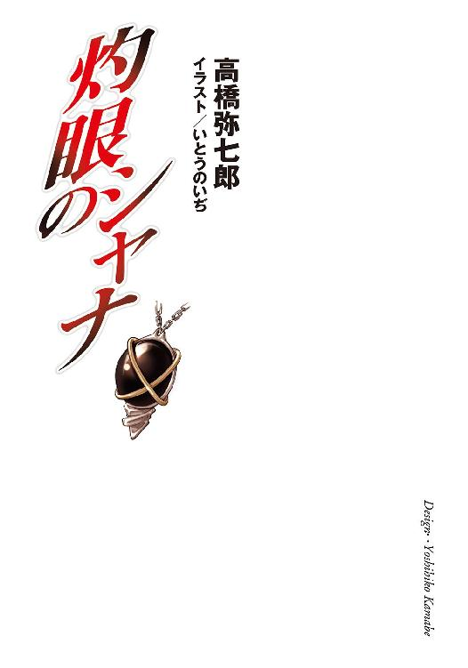
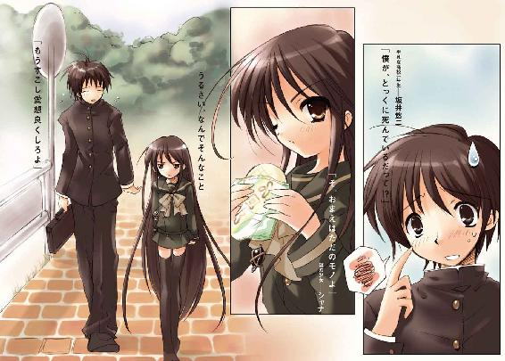
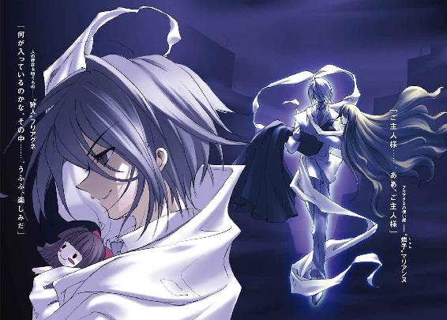
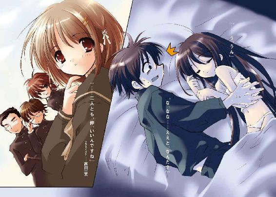
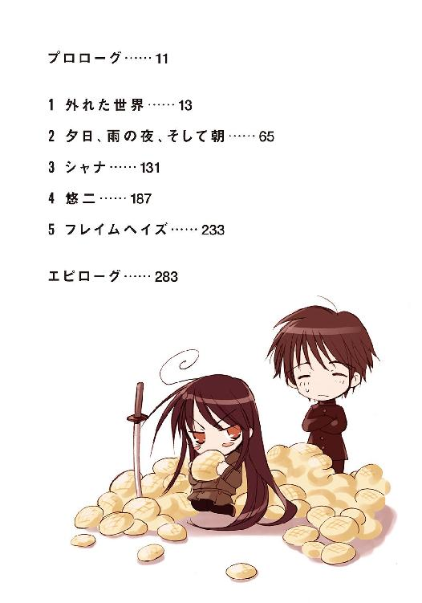
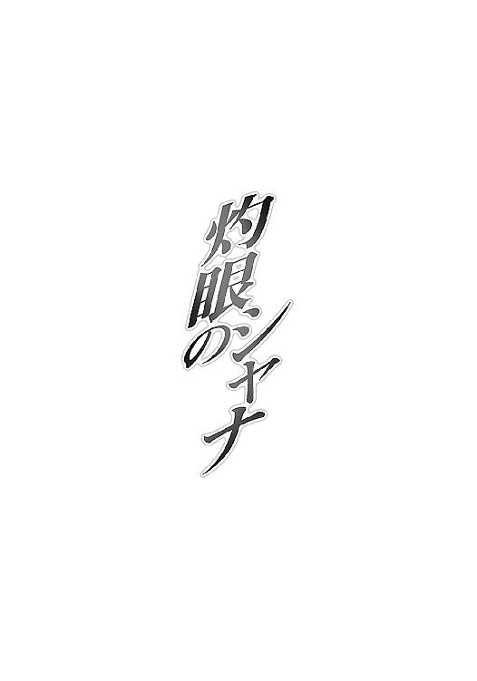
本書（電子版）に掲載されているコンテンツ（ソフトウェア／プログラム／データ／情報を含む）の著作権およびその他の権利は、すべて株式会社アスキー・メディアワークスおよび正当な権利を有する第三者に帰属しています。
法律の定めがある場合または権利者の明示的な承諾がある場合を除き、これらのコンテンツを複製・転載、改変・編集、翻案・翻訳、放送・出版、公衆送信（送信可能化を含む）・再配信、販売・頒布、貸与等に使用することはできません。
プロローグ
その日。
その日も、坂井悠二は当然のように自分の日常に暮らしていた。
高校一年の四月末。新しい環境にもそこそこ慣れ、受験や将来について深刻ぶる時期は、遙か未来にある。他人と衝突するほどとんがってもいないので、友人も幾人かできた。
家庭は中流。一人っ子で両親は健在。ただし、父・貫太郎は海外へ単身赴任中。おっとりした誇りある専業主婦である母・千草と、学校から徒歩二十分ほどの一戸建てで二人暮らし。
成績は中学のときから、中の上下を行ったり来たり。自分を磨こうと思うほどの気概はない、しかし怠け過ぎても恐いので適度に努力する。微妙に要領が良い、とは中学以来の友人で現クラスメートでもある、メガネマン池速人の評。
彼女はいない。隣席の平井ゆかりに何くれとなく話し掛けてはいるが、これは彼女に、宿題等の援助をもらうためで、それ以上深くは考えていない。焦って探すこともないと思っている。
目下の悩みは、迫るゴールデンウィークでの金の使い道。親しい友人たちとどこかに出かけたくもあるが、買いたいゲームやマンガもいくつかある。
その日の放課後に、学校を含めた住宅地の対岸、大鉄橋で結ばれた市街地に足を向けたのも、ゲーム店と本屋を巡って、そのあたりの目途をつけようと思ってのことだった。
その日、
そのときまで、
悠二はそんな日常が永遠に続くと思っていた。
いや、そこまでの自覚さえ持たず、当然のように、無根拠な確信の中にいた。
しかし、その日、そのとき、
血のように赤い夕焼けの中で、彼の日常は、確信は、あまりに呆気なく、燃え落ちた。
あるいは、燃え上がった。
１ 外れた世界
坂井悠二は、怪物に喰われつつあった。
それは、日常から、わずか五分の距離。
突然、炎が視界を満たした。
レストランや飲み屋の立ち並ぶ繁華街、そこに流れ、悠二を混じらせていた雑踏、全てを染めていた夕日が強く揺らいだかのような......澄みつつも不思議と深い赤の、炎が。
その最初の瞬間、悠二は、
「え」
と、ただそれだけしか言えなかった。
驚き戸惑う内に、ひたすら異常な光景の中に、悠二は孤立していた。
周りを壁のように囲み、その向こうを霞ませる陽炎の歪み。
足下に火の線で描かれる、文字とも図形ともつかない奇怪な紋章。
歩みの途中、不自然な体勢で、瞬き一つせずピタリと静止する人々。
「............？」
悠二は呆然と、自分を取り巻くこれらを眺める。
常人が取る当然の反応として、これは悪趣味な夢だと思い込もうとする、その現実逃避が、
雑踏の真中に降ってきたものによって粉々に砕かれた。
「っな!?」
その何かが着地する衝撃で悠二は覚め、そして見た。
降ってきた何かが、雑踏の真中に、そびえている。
奇妙なもの......いや、その形や、元になったものは知っているが、それがどうしてそんな風になっているのかが理解できない、そんなもの。
一つは、マヨネーズのマスコットキャラそっくりな、三頭身の人形。
もう一つは、有髪無髪のマネキンの首を固めた玉。
いずれも、人の身の丈の倍はあった。
（......なんの、冗談だよ......？）
それが悠二の率直な感想だった。もはや悪夢さえ通り越した、まったく馬鹿な眺めだった。
しかし、それらは現に、目の前にいる。
その怪物たち、人形が巨体を揺り動かしてはしゃぎながら、耳まで裂けるように、
首玉がけたたましい声を幾重にも重ねて、横一線にぱっくりと、
口を開けた。
途端に、止まっていた人々が猛烈な勢いで燃え上がった。それは、彼らに囲まれる悠二を焼くこともなく、熱さも感じさせない、しかし異常に明るい、炎。
この中で、悠二は麻痺するように立ち尽くしていた。
ただ、見ている。
こんな出来事の中で、それ以外に何ができるというのか。
その、半ば虚ろになった瞳に、映る。
燃える人々の炎の先端が、細い糸のようになって宙へと伸び、怪物たちの口の中に吸い込まれていくのが。
その内にある人々は、服も焦げず肌も爛れない。しかし、怪物たちに吸われるにつれ、炎に揺らぐ姿が、だんだんと輪郭をぼやけさせ、薄れ......そして、小さくなっていく。
燃える炎も、内にある人も。
最初はキャンプファイヤーほどの大きさだったものが、すぐに焚き火ほどになり、さらに松明から蝋燭の灯ほどへと、小さく、小さく......。
悠二は、その炎が吸われてゆく様を放心して見ていた。
見る内に、まばらに点る灯の中に一人、ぽつん、と取り残されるように立っている。
そんな彼の姿に、怪物が二つして、ようやく気付いた。
人形が首だけをぐるりと回し、傾げた。
「ん〜？ なんだい、こいつ」
悠二は、その子供っぽい声が、自分を指していると気付くのに数秒かかった。
「......あ」
と間抜けな声をあげる悠二を、可愛いマスコットキャラの、しかし巨大な瞳が睨んでいる。
いつしか首玉も丸ごと向き直っていた。真中にぱっくりと開いた口から、女の声で言う。
「さあ？ 御〝徒〟では......ないわね」
「でも、封絶の中で動いてるよ」
「〝ミステス〟......それも飛びっきりの変わり種ということかしら。久しぶりの嬉しいお土産ね。ご主人様もお喜びになられるわ」
「やったあ、僕達、お手柄だ!!」
人形が、ズシン、と粗雑な作りの大足を一歩、踏み出した。元の形がユーモラスなだけに、巨体ではしゃぎ、耳元まで裂けた口でニタリと笑う様は、おぞ気を誘う不気味さを持っていた。
「じゃ、さっそく......」
巨大な人形が悠二に向かって、地を揺るがし、走り寄って来る。土管ほどもある腕を、ぬうっ、と差し伸ばして。
「......あ、あ......？」
パニックを起こして騒ぐには、目の前に迫るものはあまりに異常で、圧倒的過ぎた。悠二にできたのは、せいぜい後ずさるくらいだった。
しかし、その一歩を下がる間さえ与えられない。
悠二は視界を覆うような掌に、腹を乱暴につかまれた。その暴力の衝撃がスイッチとなったかのように、全身にようやく恐怖の震えが湧きあがってくる。
「......う！ うわ......」
もう、何をするにも遅すぎた。
持ち上げられ、振り回され、そして、
その行く先は、自分を軽く一呑みにできる......頭半分を切って開けられたような大口。
絶叫さえ上げられない。
目を見開いて、冷や汗をびっしりとかいて、ただこの光景に翻弄されるだけ。
「いただきま─────す!!」
こうして、悠二は喰われる運びとなった。
それは、日常から、わずか五分の距離。
そして、そこから外れた長い道の、始まり。
凄まじい重さと勢いを持った、小さな何者かが落下してくる。
その落下の先端である爪先が、首玉の頂点に打ち込まれた。
「っぎ、ごぉ!?」
首玉が持つ口、全身の小さなもの、真中の大きなもの、それらから一斉に、圧迫への絶叫が上がった。あまりの踏みつけの圧力に、首玉は半ば以上を砕けた路面にめりこませる。
何者かは、着地と打撃を兼ねた一撃の力を、細くしなやかな足を曲げて溜め、さらに跳躍。
今度の先端は、鋭く輝く、刃。
悠二を口の中に放り込もうとした人形が、がちん、と空気だけを噛んだ。
「っ!?」
人形がふと見れば、目の前に、今喰おうとしていた獲物が、ぐるぐると宙を舞っている。
自分の腕ごと。
「──っ」
すっぱりと、肘から先を断ち切られた、自分の腕ごと。
「っうぎゃああああああああ!!」
片腕をいつしか失っていた人形は叫び、よろめく。斬られた断面からは、血ではなく薄白い火花がバチバチと散っていた。
その身の毛もよだつ叫びの中、悠二は地面に叩きつけられた。
「うぐ!!」
自分をつかんでいた巨腕がクッションになったためか、さほどの衝撃はなかったが、それでも二、三メートルは落下している。悠二は息を詰まらせて、そのまま地面に突っ伏した。
目の前で、切り落とされた巨腕が薄白い火花となって散る。
眩暈を紛らす、その光の薄れた後に、悠二は見出す。
（......誰......？）
自分と人形の間に屹立する、小さな、しかし力に満ちた、背中を。
焼けた鉄のように灼熱の赤を点す長い髪が、
マントのような黒寂びたコートが、
着地の余韻になびき、揺れていた。
コートの袖先から覗く可憐な指が、戦慄の美を流す、大きな刀を握っている。
少女、らしい。
灼熱の赤を点す、しかし柔らかな質感を持つ髪が、ゆっくりと地に引かれ、腰の下まで伸びる。その動きに取り残されるように、赤い火の粉が散った。
悠二は、周りの状況も、置かれた立場も忘れて見入った。
火の粉を舞い咲かせて屹立する、灼熱の髪の少女を。
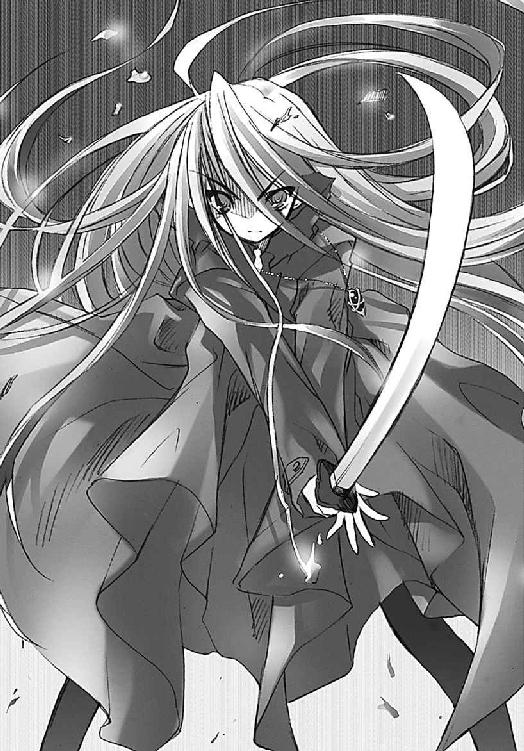
圧倒的な存在感だった。
その向こうで、口を耳まで裂いて叫ぶ巨大な人形など、ただの背景に過ぎなかった。
「どう、アラストール？」
不意に、背を向けたまま少女が言った。凛とした、しかしどこか幼さを残したこの声に、
「〝徒〟ではない。いずれも、ただの〝燐子〟だ」
と姿の見えない誰かが答えた。こちらは遠雷のように重く低い響きを持った、男の声。
「うあぁぁあぁ！ よくも、よくも僕の腕ををを!!」
その会話を遮るように、人形が鼓膜を引っかくような絶叫をあげる。残った腕を宙に振りかざし、握り拳を作った。
少女はそれを軽く見上げると同時に右手を振って、刀の切っ先を鋭く後ろに流す。その背後の路面にへたりこんでいる悠二の、側頭部ギリギリで刀の峰が止まる。
「─っ！」
悠二が息を詰めた、そのときには既に、少女の体は振った方向に思い切り捻られて、左手が柄の端を握っていた。刀身を右の奥から振り抜くための構え。
人形の、頭身が低い分だけ巨大な握り拳が、少女を叩き潰さんと降ってくる。
「潰れちゃえ───!!」
その拳の軌道が予定の半分も行かない間に、
少女は人形の膝元に踏み込んでいた。
もう刀は振り抜かれている。
少女はその振り抜いた勢いのまま体を九十度回し、人形の真横へと後ろ跳びに下がる。
「!?」
人形の拳の軌道が突然狂った。腕は出鱈目な方向に振られ、人形はその勢いでひっくり返った。自重で、顔を路面に激突させる。人形は、わけが分からない。
「ぎえっ、あ？」
振動に揺れる、そのつぶらに描かれた巨大な眼が、とある物を見つけ、驚きに開かれる。
地面に、自分の足が一本、膝から下だけ残って立っていた。
少女が膝元に潜り込んだとき、神速、支えとなる足を一本、叩き斬っていたのだ。
足が、すぐに薄白い火花となって散る。
その火花の向こうから、少女が地に倒れた彼（？）を、傲然と見下していた。
火の粉を撒いてなびく長い髪と同じ、灼熱の輝きを点した、二つの瞳で。
「え、え、炎髪と、灼眼......！」
驚愕に震える声が、人形の口からもれた。自分が、最悪の部類に入る敵に喧嘩を売られたのだと、ようやく気付いたのだった。
少女は、自分の身の丈ほどもある刀を右手だけで、その重さを感じさせることなく簡単に振りかぶる。倒れた人形に向けて歩き出す、その一歩ごとに、髪から火の粉が舞い散ってゆく。
殺伐の美に満ちたこの光景を、悠二は身動きすることも忘れて見入る。
その終わりは呆気ない。
「う、うああ......っ」
何か言いかけてもがいた人形の頭部を、少女は無造作に片手斬りで両断した。
人形が薄白い火花を弾けさせ消滅してから数秒、ようやく少女は悠二の方を見た。刀を右手に下げて、ゆっくり歩いてくる。
まだ路面に座り込んでいた悠二は、初めて少女を観察することができた。
今までの異常な状況と圧倒的な存在感で気付かなかったが、少女の背丈は、百四十センチ前後。自分が立てば、その胸までしかないだろう。年もせいぜい十一、二というところだった。
ただし、その整った顔立ちには、あどけなさが微塵も感じられない。無表情だが、それは硬直の類ではなく、強い意志によって引き締められたものだと、一目でわかる。
凛々しい、と表現できる顔を、悠二は生まれて初めて見たような気がした。つなぎのような皮の上下と黒寂びたコート、物騒極まりない抜き身の刀さえ、彼女には相応しく思える。
そしてなにより印象的なのは、焼けた鉄のように灼熱の赤を点す、瞳と髪。
その、幻想的と言うには、あまりに強烈過ぎる姿が、悠二の目の前にそびえる。
「......あ、その......ありがとう」
悠二は、我ながら芸がない、と思いつつも礼を言った。実際、格好をつけても様にならない状況ではある。
しかし少女は、その悠二の声を全く無視して、言う。
「ふ〜ん、コレ......〝ミステス〟ね？」
「......？」
その、返答ではなさそうな言葉の意味を悠二が訊く前に、少女の胸元から、さっきも聞こえた男の声が答える。
「うむ」
少女の胸元にはペンダントが下げられていた。
銀の鎖を繋いだ、指先大の黒く澱んだ球。その周りを金色のリングが二つ、交叉する形でかけられている。優美な美術品のようでもあり、精巧な機械のようでもある。
どういう仕組みなのか、男の声は、そのペンダントの中から出ているらしかった。
「封絶の中でも動けるとは、よほど特異な代物を蔵しているのだろ......」
不意に、悠二の背後で轟音。
少女に蹴り潰されて地面に埋まっていた首玉が、砲弾のように彼らに向けて飛んでいた。
「え」
振り向こうとした悠二の鼻先を掠めるように、
「っ!?」
少女の強烈な前蹴りが打ち出される。真反対からの、強烈な刺突を受けた首玉は、あらぬ方向へと弾き飛ばされた。側のレストランを砕いて、まためりこむ。
少女は、蹴りの反動で路面に刺さった軸足を抜くと、濛々と土煙を上げるレストランに向けて歩き出す。
動揺していた悠二は、取り残される恐怖から思わず少女のコートの裾をつかんだが、少女はすげなくそれを払った。
その、取り残された悠二に向けて、少女の真反対から人影が飛んでくる。
人影は、悠二の背を狙って手を伸ばす。
少女が振り返り様、刀を一閃する。
悠二の頭上すれすれを、横薙ぎの斬撃が通り過ぎる。
これら、四半秒もない流れを経て、悠二が気付けば、誰かの悲鳴が上がっていた。
「っぐぎ！」
背後で、誰かが路面に落ちた。
振り向いた悠二の目の前に、女性のものらしい、切り落とされた腕が転がっていた。
「な、うわっ......!?」
思わず腰を引いた悠二の前で、その腕はさっきの巨大な人形と同じように、薄白い火花となって消える。
その火花の向こうに、切られた腕を押さえてうめく女性がうずくまっていた。滑らかで乾いた質感を持つ金髪の奥で、美しいが、妙に無機的な顔が苦痛に歪んでいる。
少女は一歩進んで悠二の傍らに立ち、刀の切っ先を美女に突きつける。
「ふん、『逃げるにしても、せめて〝ミステス〟の中身くらいはいただく』ってわけ？ こんなに簡単に釣れちゃうと、かえって拍子抜けしちゃうわ」
少女は笑みを含ませて、傲然と言い放った。
美女が、整った口元を無理矢理こじ開けるように、憎悪の声を吐く。
「炎髪と灼眼......アラストールの〝フレイムヘイズ〟か......この、討滅の道具め......！」
「そうよ。だからなに？」
「私のご主人様が、黙ってはいないわよ......」
陳腐な脅し文句に、少女は鼻で笑って返した。
「ふん、そうね。すぐに断末魔の叫びをあげることになるわ」
笑いながら、片手で刀を大きく振りかぶる。
「でも、今はとりあえず、おまえのを、先に聞かせて」
少女が、あまりに平然と取ったその動作の意味に、悠二は一瞬遅れて気付いた。
殺そうとしている。
自分の置かれた立場や状況など分からない。
だから目の前の、少女が殺そうとしている、という事実だけに反応した。
かばおう、とまで考えたわけでもない。
ただ、自分の当たり前の感覚として、反射的に止めに入った。
「待っ」
振り下ろされる刀と美女の間に。
その、双方にとって意外すぎる行動に、少女は驚き、美女は笑った。
美女の腕が、自分をかばった悠二の背中を貫き、内側に潜った。
「!?」
悠二は感じた。
（なんだ？）
自分という存在が、核のような何かを揺さぶられて、消えそうになっていることを。
（僕の、中......なにか、なにかを......！）
感じて、恐怖した。
（やめ......!!）
その、一秒あったかどうかの感触と恐怖は、
「ぎゃああっ!!」
美女の絶叫によって途切れた。
頭上、両手に握りなおした少女が、美女を斬っていた。
その間にいた、悠二ごと。
一切の躊躇のない、左の肩口から腹にかけての袈裟斬り。
「......ッ!?」
悠二は仰け反って倒れる刹那、美女が自分と同じ角度で斬り裂かれ、その火花散る中から、小さな人形が飛び出したのを見た。
「ちいっ！」
舌打ちするその人形は、茶色い毛糸の髪、青いボタンの目、赤い糸で縫われた口という粗末なもの。靴も指もない肌色フェルトの脚が路面を蹴って、低く後ろに下がる。
これを追おうとした少女は、しかし、胸元のペンダントからの叫びを受ける。
「後ろだ！」
レストランで埋もれていた首玉が再び少女を狙って、瓦礫の奥から砲弾のように飛び出していた。
少女は瞬時に体を返し、切り裂かれてうめく悠二を、地を滑らす足で払い退ける。その動作に乗せて、大上段から一閃、首玉を真っ向から斬った。
首玉は綺麗に二つの半球となって吹っ飛び、すぐに大量の火の粉となって爆ぜ、消えた。
そしてこの間に、人形も何処かへと去っていた。
不意な静けさが、人々の小さな残り火と破壊の傷跡を残す街路に訪れた。
それを破るのは、やはり少女。
「あの〝燐子〟の言い方からすると、案外大きいのが後ろにいそうね」
答えるのも、やはりペンダント。
「久々に〝王〟を討滅できるやも知れぬ」
「うん。それにしても」
「ううう、ぐ......」
（き、斬られた......）
少女は自分の足下、路面に仰向けに倒れてうめく悠二に目をやる。
「さっきはびっくりしちゃった。コレが動いているってこと、すっかり忘れてたから」
「ううう......」
（肩から、ばっさり......）
「そうだな。我も一瞬、〝天目一個〟のことを思い出して慌てた」
「うう」
（死ぬ！）
「ま、あのときは最初っから飛び掛ってきたし......」
「うう、うぐはっ!?」
（死っ!?）
いい加減苛立った少女が、ぼん、と悠二を蹴飛ばした。
「あーもう、うるさいうるさいうるさい。今さら、斬られたくらいで騒がないで」
ペンダントもそれに容赦なく続ける。
「生前の器が知れるわ、痴れ者めが。人間なら、その深手を受けた時点で即死だ」
「......そ、そんなこと言われても、斬られて..................ん？」
悠二はようやく気付いた。
斬られた感触を、それこそ自分の中を通り抜けた刃の冷たさまで、はっきりと感じた。だから当然、凄まじい痛みがあるものと思ってうめき声をあげていたのだが、それが、
（痛く、ない......？）
致命傷というのは痛みも麻痺するものなんじゃ？ と思ったりもしたが、こんな回りくどいことを考えられる余裕を、今の自分が持っていることに、ようやく不審の念が湧いてくる。
（一体、なにがどうなって......う）
我ながら呑気だと思いつつ、首をわずかに起こすと、嫌なものが目に入った。
やけに遠くにあるように感じられる『左肩側の体』と、手前で見事な一直線の切り口を斜めに走らせている『首付き、右肩側の体』。
二つに千切れ飛んでいないのはたまたまなのだろうが、なるほど、ペンダントが言ったように、普通ここまで斬られたら致命傷だろう（他にも何か言ったような気がしたが、さすがにそこまで冷静にはなれない）。
なのにどういうわけか、血も噴出せず、苦痛もない。嫌な感じの『自分の中身』は見えるが、その断面は薄い光に覆われている。
「どういうこ......」
訊こうとした悠二は、言葉を切った。
少女が自分の上に覆い被さってきたのだ。
その、灼熱の光を点す瞳と髪が急に迫り、悠二の目に焼き付く。
「なっ、なに、を......!?」
頬も触れ合うような、その近さ。
鼻にかかる、熱い火の香りと、ほのかで柔らかな匂い。
悠二はその全てに、痺れる。
肩に、つ、と細くたおやかな指が触れた......
途端、少女は乱暴に、悠二の分かれた体をくっつけた。
「っ？」
体の断面が合わさる不気味な感触が、悠二の目を覚ます。
正気に戻って見れば、少女はもう体を離していた。
その小さな唇がすぼめられ、悠二に鋭く息を一吹きかける。
いきなり、悠二の全身が激しく燃え上がった。
「っうわ!!」
驚いた悠二は反射的に身を起こした。起こせた、そのことで、分かった。
斬られた体が元通り、くっ付いている。
火は消えていた。
恐る恐る、斬られた箇所を触ってみると、傷どころか、服まで元通りになっていた。
しかし、そうやって眺めた自分の胸の奥に、
（......なんだ？）
灯が、見えた。
ぽつん、と点る、小さな灯が。
体ははっきりと見えるが、その奥にあるこの灯も重なり、感じるように見える......それとも、見えるように感じているのか。
さっきから異常なことばかり起こってはいたが、この胸の中の灯は、なぜか特に気になった。
胸騒ぎを感じさせられる、何かがあった。
（そうだ、さっきあの女に触られたのは、これだ）
直感以上の、確信。
目の前の、自分を治した少女に訊く。
「な、なにをしたんだ？」
が、悠二のこの当然の問いを、少女はまた無視した。見向きもせずに立って、刀をコートの中、左腰のあたりに収める。
切っ先から、後ろに突き抜けるような勢いで押し込まれた刀が、そのままコートの中に消える。刀身が少女の身の丈ほどもあったというのに。まるで手品だった。
手ぶらになった少女は周囲を見回して、肩をすくめた。
「さっきの見た？ あの〝燐子〟、ちゃっかり手下が集めた分、持ってっちゃった」
小さな人形は逃げる際、大きな光の結晶のようなものを二つ、手の内に引き寄せて持ち去っていった。それは、手下の怪物たちが集めた、とある力。
ペンダントからの声も、嘆息混じりに答える。
「うむ、抜け目のない奴だが......まあ、この〝ミステス〟の中身の方が危険性は高い。こっちを渡さなかっただけでもよしとすべきだろう。討滅自体はいつでもできる」
少女は頷いて、右の人差し指を天に向けて突き立てた。
周囲で光が弾け、悠二は思わず身をこわばらせる。
路面にまばらに散っていた、まるで人々の名残のようだった小さな灯が、ふ、と幻が湧くように、人の形を取り戻していた。
一瞬ほっとした悠二はしかし、棒立ちに立つ彼らの胸の中心に、自分の中にあるものと同じ灯が、ちろちろと点っているのに気付いて、どうしようもない頼りなさを感じた。
その灯は、最初に怪物に襲われた際、燃え上がった炎と同じもののように思える。
（でも、あのときは体全体を包んでたのに、今はあんな小さな......まるで怪物に吸われた分、減ってしまったみたいだ......？）
突然、悠二の体をおぞ気が走り抜けた。
（......なんだ......？）
その自分の想像が、なにか、とんでもない破局のようなものの端に触れた気がしたのだ。
少女はそんな悠二に全く構わず、ペンダントと会話する。
「〝トーチ〟はこれでよし、と。直すのに何個か使うね」
「うむ......それにしても、派手に喰いおるわ」
「奴の主って、よっぽどの大喰いなのね」
言う間に、幾人かが、再び一点に凝縮された。瀕死の蛍のようになったその灯は宙を流れて、少女の突き上げた指先に宿った。
瞬間、灯は一斉に弾け、無数の火の粉となった。
それら火の粉は、この陽炎の壁に囲まれた空間の中に舞い散ってゆく。怪物や少女によって壊された所に触れると、火の粉はそこから持てる暖かさを染み透らせるように微光を宿らせ、周囲へと広げる。
「あ......」
悠二が眺める先で、微光を宿した全ての箇所が、ゆっくりと、無音で、テープの逆回しのように、壊れる前の姿へと戻っていく。
砕けた敷石がひびを霞ませ、割れたショウウインドウが張り直され、落ちたアーケードが持ち上がり、折れた街灯が伸びる。黒い焼け跡や、薄く澱んでいた煙さえ、消えてゆく。
修復の終わった場所からは微光が失せ、光景はどんどん元通りになる。
この空間に囲われた人々が、胸に灯を点した以外は。
少女の指先で火の粉となって散った人たちが、欠けている以外は。
やがて、修復が全て終わる。それは、時間にしてほんの十秒ほど。
少女が、おもむろに告げる。
「終わり、と」
光と衝撃が湧き起こった。
「っわっ......!?」
悠二はいきなり、雑踏の喧騒に包まれた。思わず瞑っていた目を開ければ、そこには、血のように赤い夕焼けに染まる繁華街と、ざわめく人の流れがあった。
周囲を覆っていた陽炎の壁も、足下に描かれていた火線の紋章も、全て掻き消えている。
異変が起こる前の状態に、完全に戻ったのか。
（......違う......）
悠二は、その違いをはっきりと感じていた。
自分と一緒にあの妙な場所に囲われた人々は、まだ弱く薄い灯を、胸の内に点していた。
少女の指先で火の粉となった人々も、いない。
そして何より、自分の中に、灯が見える。
なのに、誰もそのことを言わない。当たり前のことのように、みな、気にしない。
（いや、気付いてないんだ......さっき起こってたことにも、今、僕が見てるものにも）
やがて、灯を胸の内に点す人々は、雑踏の中に、どこか弱々しい足取りで散っていった。
呼び止めるでもなく、それが去るのを見ていた悠二は、自分の前にまだ少女が立っていることに、ようやく気付いた。周囲を見渡して、何かの確認か警戒かをしているらしい。
少女の髪と瞳はいつの間にか、焼けた鉄が冷えるように、艶のある黒色になっていた。年に似合わない落ち着きはあるが、一応は普通の人間に見える。
そうやって少女を見上げていた悠二は、やがて自分こそが、周りの雑踏から好奇の視線を受けていることに気が付いた。自分は、まだ地面にへたり込んだままだったのだ。
「っと......！」
慌てて立ち上がると、その目に繁華街を埋める雑踏の全景が入る。
そこには、弱々しい灯を胸の内に点す人間が、幾人も混じっていた。
灯の小ささや距離は関係がない。ただ、感じる。
その内の一人、頭の薄いサラリーマン風の男が、足取りも重く、傍らを通り過ぎた。
（さっき襲われた人じゃない......でも、灯を中に持ってるし、やっぱり本人も気付いてないみたいだ......いったい、なんなんだ......？）
元に戻ったはずの世界に溢れる異常に、悠二は混乱のしっぱなしだった。
その混乱を収めるための答えを知っているはずの少女が、目の前にいる。
いるのだが。
「......あ、あの、さっきの、いや、今のことでもあるんだけど」
悠二は目の前の、自分の胸元までしかない少女に、しどろもどろな声をかけた。
そして、何度もそうされているように、やはり無視された。
少女は目の前にいるのに、自分の顔を見ようともしない。
さすがに悠二もむっときた。不安も手伝って、その肩に手をかけようとする。
「ちょっと、あんた、っぐ!?」
肩に行く前に、手首が取られていた。軽く添えただけのような、その細く優美な指は、しかし万力のような力で悠二の腕を押さえ、身動きを許さない。
少女が、ようやく悠二と顔を合わせ、言う。
「うるさいなあ、もう」
冷たい、顔だった。
まるで騒がしいラジオでも見るような。
相手の人格を認めない......いや、そんなものなど最初からないと認識しているかのような。
「コレ、消そうか」
「な......!?」
悠二には、その言葉の意味は分からなかったが、ただ、少女が本気であることだけははっきりと分かった。ほんの少し前、人形に自分の中を揺るがされたときと同じ、異様な恐怖が湧き起こる。
しかし、
「待て」
そこにペンダントから制止の声がかかった。
「迂闊に〝ミステス〟を開けてはならん。〝天目一個〟のときの騒動を忘れたか」
少女は、ふん、と鼻を鳴らして悠二の手を放した。
「もちろん分かってるけど、コレ、さっきからうるさくて」
「真実を教えてやればよい。それでコレも黙るだろう」
「あ、あんたら、コレ、コレって人を物みたいに......！」
悠二は勝手な言い合いに、赤くなった指の跡をさすりながら喰って掛かった。
少女はいきなり冷淡に告げた。
「おまえは人じゃない、物よ」
「な......!?」
絶句する悠二に少女は、よく聞きなさい、と念押ししてから言う。
「本物の『人間だったおまえ』は、〝紅世の徒〟に存在を喰われて、とっくに消えてる。おまえは、その存在の消滅が世界に及ぼす衝撃を和らげるため置かれた代替物〝トーチ〟なの」
理解を超えた言葉の乱発。
「............なにを、言って......？」
悠二は戸惑うしかない。
しかし、意識の片隅に、その言葉の意味を冷静に捉え、考える自分がいる。
そこから何か、不気味な実感が忍び寄ってくる。
言葉が頭の中で転がり始める。
（グゼノトモガラ、怪物。消える、なにが。存在、なんの。本物、誰の。代替物、僕が......？）
今度はペンダントが言う。
「我らの加護によって修復された今なら、その偽体を形作る〝存在の力〟が、胸の中に灯として見えているはずだ。それこそ、貴様が人の身ならぬ、存在の残り滓であることの、なによりの証だ」
ペンダント（？）が言うとおりだ。
見える。自分の胸の内にちろちろと揺れる、灯が。
（......灯......存在の、力......？）
腹の底に冷たい感触が湧く。
少女らの言っていることの意味が、じわじわと理解されてくる。
言葉が、意味を持って繋がり始める。
（僕が、消えた、さっきの、怪物に喰われて、僕は、残り滓、代替物......物......？）
異常なこと。恐ろしいこと。
しかし、今さら否定することはできそうにない。
なかったことにするには体験は生々し過ぎ、知らされたことは説得力を持ち過ぎていた。
追い討ちをかけるように少女が続ける。
「周りにぞろぞろ歩いてるのも見えるでしょ？ そいつらもみーんな、喰われた残り滓。この近くに、さっきみたいに、〝存在の力〟を集めて喰ってる〝紅世の徒〟の一人がいるのよ。
『本物のおまえ』も、その犠牲者ってわけ。別に珍しくもない、世界中で普通に起きてることよ」
悠二には、少女の言うことが、うっすらと理解できる。できてしまう。
気付けば、少女が彼を置いて歩き出していた。
「ま、待って！」
それだけのことに取り乱してしまう。まるで親に取り残されそうになった幼児のように、悠二は後を追った。
「で、でも、その、グゼとかなんとかの、怪物が暴れたなんて話、聞いたことがない」
小柄だが大股に歩くので、少女の足は速い。悠二は、動揺からもつれそうになる足を必死に動かしてついていく。
「当然よ。おまえも中で動いていたんなら、封絶って囲いを見たでしょ」
「あ、あの周りにあった、赤い、陽炎の壁みたいなやつのこと、か......？」
「正確には、あの壁の中の空間。あそこは世界の流れ、因果から一時的に切り離されるから、周りに何が起こったかを知られることはない。それに、〝存在それ自体〟を喰うから、喰われた人間は、いなかったことになる。痕なんか残らないの」
「......そんな......」
少女が立ち止まった。
悠二が重く垂れていた顔を上げると、そこはタイヤキの売店の前だった。
少女は店員に言って、ホットプレートの上にある分を全部買う。袋に詰めてもらうのを待ちながら、世間話でもするかのように、軽く言う。
「でも、ただ喰い散らかしていると、急に存在の空白を開けられた世界に、歪みが出る。だから、喰われた人間の代替物であるトーチを配置して、空白が閉じる衝撃を和らげるのよ」
少女はタイヤキで一杯になった袋を受け取る。店員に対して軽く頷き、代金を払って釣りを受け取る。妙に貫禄があるので、無愛想ではあっても無礼には感じられない。
「見えるでしょ、周りにうろついてるトーチが。ああやって、喰われた者の代わりに人や世界との繋がりを当面保って、やがてその存在感を少しずつなくしていく。中の灯が燃え尽きる頃には、誰からも忘れられて......ああ、ちょうどいいわ」
少女が空いた方の手で指差した。
「えっ？」
「今、正面から歩いてくるトーチ、おまえには見えるでしょ？」
人込みに頼りない足取りで混じる、印象の薄い中年の男。その胸の内に、小さな灯がある。
「あの、灯の弱い人か......あ......」
ふと、灯が、消えた。
燃え尽きた。
男もいつしか、消えていた。
それがなんでもないことであるかのように、異変への衝撃を感じさせず、ただ、ふと、男は消えてしまった。
周りを歩く人々は誰も、そのことに気付かない、いや、気にしない。悠二も、言われなければ注意を払わなかったかもしれない。それほどに、男の存在感は薄かった。
ふと、人込みに紛れて、見えなくなる。
そうなっても、誰も気にしない。
そんな人間が、しかし今、確実に、消えた。
「あ、あれが、燃え尽きる、ってこと......？」
「そ」
少女は簡単に答えて、また歩き出した。袋からタイヤキを取り出す。
その横に、小走りになって並んだ悠二は、少女の言う、トーチとなった人々を探す。
三十人に一人、いるかいないか......人込みの中、弱々しい灯を内に宿す、その〝人の代替物〟は、嫌になるほど目についた。
「！」
また一人、視界の端で、灯が、燃え尽きた。
誰かが、消えた。
人込みは変わらず流れ行く。
これが、自分の暮らしていた、自分が知らずに過ごしてきた世界の、本当の姿......？
人込みは変わらず流れ行く。
喰われた人々の残り滓を彷徨わせ、いつしか欠けさせていく世界......？
人込みは変わらず流れ行く。
悠二は頭を抱えた。迫る実感と恐怖、そして事実の重さに耐えかねるように。
「あの人たち、みんな、みんな喰われたってのか......さっきの化け物たちに......ひどすぎる」
タイヤキを頬張り始めた少女の代わりに、ペンダントが答えた。
「そうでもない。我ら〝紅世の徒〟の中にも、この世の存在を無闇に喰らうことで世界のバランスが崩れ、それが我らの世界〝紅世〟にも悪影響を及ぼすかもしれぬと危惧する者が数多くいる」
「我ら？ あんたもあのグゼなんとかの......怪物の仲間なのか」
悠二はようやく、ペンダントそのものが声を出していることを感じた（理解はできない）。
「貴様が出会ったのは〝燐子〟という、我ら〝徒〟の下僕に過ぎぬ存在だが、まあ、そのようなものだ」
「とにかく、その災いが起こらないように、存在の乱獲者を狩り出して滅す使命を持つのが、私たち〝フレイムヘイズ〟ってわけ。分かった？」
そのフレイムヘイズの少女は、軽く確認すると、またタイヤキを頬張った。美味しいのか、わずかに頬が緩んで、見かけ通りの幼い顔になる。
悠二は少女らの話した、ほとんど荒唐無稽と言っていい説明を、無理矢理にでも理解したつもりになって、核心に入る。
自分の、核心に。
いつしか腹の底に溜まっていた冷たいもの......恐怖が、声を詰まらせる。
「......あ、あんたたち、僕の......ことを、〝ミステス〟って、言ってたよな」
よく覚えてたわね、と少し感心した少女は、しかしやはり、軽く答える。
「〝紅世の徒〟が、この世で作った宝具とか力そのものを中に入れたトーチのことよ」
トーチのこと......？
悠二は、破局を感じる。
「そのトーチが燃え尽きたら、中のものはすぐ、次のトーチの中へとランダムに転移する、言ってみれば『旅する宝の蔵』ね。おまえは運悪く見つかって、その中身を狙われたの」
トーチ。
この少女は、それをどのように説明したか。
動悸が、高まってくる。
（おまえは人じゃない、物よ）
全てが噛み合って、自分の置かれた状況が、立場が、存在が、形作られてゆく。説明されたことが、ようやく呑みこまれてゆく。
（本物の『人間だったおまえ』は、〝紅世の徒〟に存在を喰われて、とっくに消えてる）
胸が痛い。
（おまえは、その存在の消滅が世界に及ぼす衝撃を和らげるため置かれた代替物）
咽喉が詰まる。
（喰われた者の代わりに人や世界との繋がりを当面保って、やがてその存在感を少しずつなくしていく。中の灯が消える頃には、誰からも忘れられて......）
声が震える。
「じゃ、あ......じゃあ、僕は......」
悠二は立ちすくんだ。
少女もうざった気な顔をして足を止め、悠二に向き直る。
「何度も言わせないの。おまえはただの、本人の残り滓。燃え尽きてゆくだけの存在」
衝撃、
と言うにはあまりに遠く大きな、恐怖と寂しさ。
それは、世界の全てが揺らいだかのような、あるいは自分が世界から零れ落ちたかのような、圧倒的な失調感だった。
「燃え尽きれば、宝具も次のトーチの中に移る。他人が持ってるおまえの記憶も、おまえがやってきたことも、関わった跡も、全部なくなる。存在が、なくなるから」
その〝真実〟は、彼にとって死刑宣告、どころか、〝今、自分がいること〟、その全ての根幹の崩壊に他ならなかった。
「そん、な」
声が途切れた。何を言っていいのか、全く分からなくなったのだ。
ここからの、今の自分からの逃げ場を探すように、周りに目をやる。
日はすっかり暮れていた。
自分たちのいる場所が、繁華街を含む市街地と、その対岸の住宅地を結ぶ大鉄橋の歩道だということにも、今ようやく気付いた。
その、二人が立ち止まっていても滞りなく人波を通す広い歩道を、人々が行き交う。
「でも」
トーチが、その中に、いる。
胸の内に灯を点した人の代替物が、いる。
男だったり、女だったり、老人だったり、子供だったり......たくさん、いる。
重い首を回して夜景を見渡せば、街明かりに混じって、彼らにだけ見える灯が小さく、しかしなぜかはっきりと、無数に動いているのが分かる。
自分の前に、広がっている。
いつか燃え尽き消える灯を、自分と同じものを、彷徨わせる世界が。
「でも！」
悠二は、その全てに反発する。
少女の呆れ顔を見ずとも分かっている、分かりきっている、意味のない反発。
それでも、せずにはいられない。
（僕が死んだなんて言われて!! ......いや、坂井悠二という人間はもう死んでるなんて言われて、この僕が、そうですか、って答えられるわけないじゃないか!!）
認められないのではない、認めたくない。
ただそれだけ。
「でもさっき、僕の体は傷ついて！」
「生身なら致命傷よ」
即座に少女が答えた。
悠二は詰まりかけて、しかし再び返す。
「記憶だってある！」
「本人の残り滓なんだから当然でしょ」
悠二は必死になって探した。自分を証明するもの、いや、自分が『生きた坂井悠二である』と証明するもの、それはなんだ、どこにある、どうやって示せる......？
「......」
目の前の少女は、待っている。
「............」
自分が、それを示すのを。
「........................」
あるいは、示せないことを理解するのを。
「................................................」
ない。
なかった。
何一つ、示せない。
どうやっても、できない。
真実が厳然と、傍らを通り過ぎた。
無力感が、全身を包む。改めて、訊いた。
「僕が......坂井悠二が、とっくに、死んでいた？」
「そうよ」
もう一度、確認する。
「燃え尽きて、消える？ ......僕が？」
「そうよ」
最後の抵抗は、弱々しかった。
「夢、じゃないのか？」
「ただの現実よ」
少女は容赦なく、強く、答える。
「......」
「もっとも、おまえはまだ灯が明るいから、意識とか存在感とか、しばらくは普通の人間と変わらないでしょうけど」
少女の言葉に、何も感じることができない。
自分は、いや、坂井悠二は、死んでしまっているのだ。その程度を保証してもらって、いったいなんになる？ 今の自分にとって、坂井悠二にとって、いったいなんになる？
そもそも、まず、なにより、
（今、この僕は、どうすればいいんだ？）
途方に暮れた悠二は、力なく橋の欄干にもたれかかった。
夜景に混じる、トーチの灯。
自分の胸にも、それがある。
「これが、現実だって？」
化け物を潜ませ、人が喰われ、しかし人はそれと知らない世界。
何も為すことなく、覚えていてもらうことさえできず、消えてしまう自分。
「そりゃあ......ひどすぎるよ」
悠二の心底からの悲嘆に、少女はやはり、容赦なく答えた。
「そういうものよ」
翌日、嫌味なまでに明るい朝日の中で、悠二は目を覚ました。
半身を起こすと、まず寝ぼけまなこで、自分の体を見下ろす。
寝巻き代わりのジャージを着た、自分。
（......夢でありますように......）
と願いつつ一度目を閉じ、また開く。
恐る恐る、胸に目をやる。
奥に点る、灯が、見えた。
しばらくそのちろちろと燃える様をじっと眺め、
「..................はあ......」
やがて深いため息をつく。灯が見えなくなった。
昨日の少女の声が脳裏に蘇る。
肩を重くする、しかしはっきりと思い起こせる、強い声。
『ただの現実よ』
「......現実......」
自分の声で、我に返る。
そう、これは現実なのだった。
悠二は昨日のことを思い返す。
茫然自失している間に、少女は消えてしまっていた。
悠二は、心細さと怪物への恐怖から、慌てて家に駆け戻り、そして、そこで自分の胸に灯が見えないことに気付き、慌てた。
（今思えば、慌てたってのも妙な話だよな）
見えなくて結構ではないか。
それは、『自分が坂井悠二の残り滓である証』なのだから。それとも、一旦実感を持ってしまえば、どんなに悲惨な事実であっても、自分を支える要素となってしまうということだろうか。
ともあれ、現実はすぐに、落胆とともに返ってきた。
視線に力を入れた途端、胸の灯が見えたのだ。
悠二はそのとき感じた。推測ではなく、はっきりと感じた。
灯は常に、自分の中で点っている。ただ、注視しなければ見えない、そういうことなのだ。
新しい目をもう一つ開けるように、見ようと思って初めて、この灯は目に映る。
（ああ、そうだ、昨日、そうして確かめたんだっけ）
悠二は、自分がこの感覚を昨晩の内に幾度となく試して、だいたいの勘所をつかんでいたことを、寝起きの鈍い頭の奥から呼び起こす。
少女の言った、自分がとっくに死んでいるという、無茶苦茶な現実。悩みとか苦境とか言うには、これは、あまりにも、どうしようもなさ過ぎた。
自分は、坂井悠二の残り滓として、絶望を抱くべきなのだろうか。
いつか訪れるだろう、燃え尽き、消える日を、恐れるべきなのだろうか。
（なのだろうか？）
昨日は確かに抱いて、恐れていたのに。
今は、どうも薄ぼんやりとして、分からなくなっている。
一眠りしたことで、昨日のことは昨日のこと、と心が勝手に整理してしまったのだろうか。
それとも、どうしようもなさすぎる事実の前に、諦めを抱いてしまったのだろうか。
他でもない自分自身の存在に関わる問題だと言うのに、ひどいアバウトさだ。これも池が言っていた、微妙に要領が良いという自分の精神構造が、そうさせているのだろうか。
（......？ 待てよ）
ふと、もっと根本的な違和感があることに気が付いた。
（昨日も今も、僕は〝本物の坂井悠二〟として、苦しんだわけだ）
かつて生きていた、怪物に喰われる前の〝本物の坂井悠二〟なら、自分が死んだことに絶望し、その存在が消えてしまうことに恐怖するのも当然だ。
（じゃあ、〝今の僕〟は、どうなんだ？ なんなんだ？ どう思うべきなんだ？）
残り滓である自分は。
「......」
不意に悠二は、そんな風に考えられる自分が、ひどくドライな人間（なのか？ いや待て待て）のように思えてきて嫌になった。
「......やめた」
こんな状況に追い込まれて、前向きに生きていけるほど強くはないと思うが、だからといって自虐趣味もない、はずだ。どうしようもないのなら、今までどおり、できることをしているしかない。いや、そうしていたい。
そんな悠二の思いに答えるように、階下から母が声をかけてきた。
「悠ちゃん、もう起きる時間よ!?」
悠二は時計を見る。いつもなら居間に下りている時間を、十分はオーバーしていた。
「うえっ、もうこんな時間!?」
それまでの思案などどこかに放り捨てて、階段を大急ぎで駆け下りる。
朝の時間密度は高い。寝床で粘る時間、朝食をかき込む時間、寄ったコンビニでレジを待つ時間、高校前大通りの信号待ちの時間まで、悠二の頭の中には、始業のチャイムをタイムリミットとした、精緻なスケジュールが存在している。スケジュールの滞りは、即遅刻に繋がる。
駆け込んだ居間でテレビを見れば、いつも朝食を食べながら見ることにしていたスポーツニュースも、もう終わっていた。いよいよ余裕がない。
居間の、半月前までこたつだった食卓の上に、ご飯と味噌汁、海苔と卵焼き、というシンプルかつオーソドックスな朝食が二人分、用意してある。母と自分のものだ。
坂井家は三人家族だが、父の貫太郎は海外に単身赴任しているため、母の千草が誇りある専業主婦として家を守っている。
悠二が滑り込むように食卓に着き、ご飯をかき込んでいると、その千草が居間に入ってきた。朝刊と牛乳を取りに出ていたようだ。
「どうしたの、悠ちゃんが寝坊なんて珍しいわね」
「うん、ちょっと」
悠二は、朝刊と牛乳を食卓に置く母・千草の、人のよさそうな笑みを浮かべるおっとり顔を、ちらりと盗み見た。昨日も確認したことを、もう一度、改めて行う。
トーチではない。
母は、人間だった。
ほっとすると同時に、これも昨日と同じ、胸を締め付けられるような寂しさを覚える。
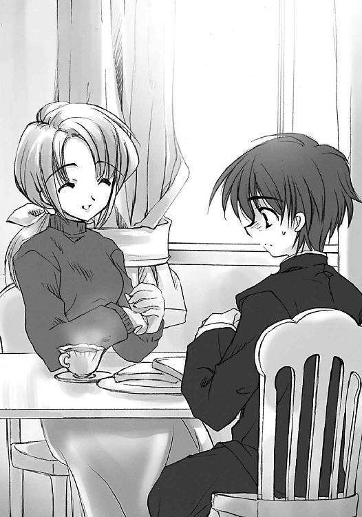
自分という存在が消えたら、両親はどうするだろう。いきなり、子供を持たなかったことになってしまう二人は。自分を育てた十五年という長い時間を、無駄にさせてしまったのではないか。そのことに、寂しさと申し訳なさが溢れてくる。
しかし、『死ぬ』よりは、悲しみを後に残さないだけ、『消える』方がまだましかもしれない。いなかったことにされるのを悲しく思うのは結局、自分一人だけなのだし。
（やっぱり僕はドライなんだろうか）
いや、それでも二人のためには、二人の再出発には、余計な悲しみなど、ない方がいいに決まっている。幸い二人は学生のときに結婚しているから、まだ若い。自分がいなくなったら、身軽になった母は、父の所へ行って新しい生活なんか始めたりするかもしれない......。
「なに、ボーっとしてるの、悠ちゃん。もう出る時間でしょう？」
「え？ ......あ!?」
非常に後ろ向きな未来像を描いていた悠二は、千草の声で我に返った。その言うとおり、もう余裕を持てる時間ではなくなっている。
「ごちそうさま！」
悠二は半分も食べられなかった朝食を置いて、階段を駆け上がった。
仕様がない、今日はいつも昼食を買っているコンビニで早弁を調達しよう、などと朝のスケジュールを微調整しながら、悠二は制服の詰襟を着込み、鞄を引っつかむ。昨晩、寝る前にしっかり翌日の用意をしておいた、自分の図太さ、要領のよさに、呆れつつも感謝する。
「いってきます！」
「いってらっしゃい」
軽く声を交わして家を出た。
これだけのことが、何でもないことが、どうしてこんなにも悲しいのか。
「......」
悠二は、ドライになりきれていない自分を証明した気になって、少しだけ、ほっとした。
虚しい安堵だった。
そんなことは分かっていた。
分かってはいたが、それでも。
悠二の住む御崎市は、県下でもそれなりに大きな市で、かなり露骨な造りをしている。
市の中央を割って南北に走る真南川を挟んで、東側が都市機能を集中させた市街地、西側がそのベッドタウンの住宅地で、それを大鉄橋・御崎大橋が結んでいる、という形だ。
悠二がこの四月から通ってほぼ一月になる市立御崎高校は、その西側、住宅地の中にある。自宅から徒歩で二十分ほどの近場だが、混み合った住宅地の中に建っているので、敷地に余裕がなく、自転車通学は原則的に禁止である。
悠二もこの規則を一応は守って、徒歩で通学している。
その、いつもの通学路も、今日ばかりは違って見える。正確には、違ってしまったのは自分の方で、この本当の状態が見えるようになった、ということのようだが。
自分と同じ、いつか燃え尽きて忘れ去られる運命の人々・トーチが、灯を胸の内に抱いて、それぞれの日常を送っている。歩きつつ、注意してそれらを見ていると、なんとなくトーチたちに共通する雰囲気があることが分かってきた。
灯の明暗による程度の差こそあれ、概ね目立たず、おとなしい。
そんな中で、炎の色が薄れて消えそうな『特に目立たない人』が、いつしか、ふと目に触れなくなり、忘れられ......いなくなるのだ。
昨日見たように、そして、今見ているように。
「......」
悠二の前を今、ランドセルを背負った小学生が四人ほど歩いている。口々に騒がしく、テレビヒーローの話で盛り上がっている。
「でさ、変身のときに色々間違えてピンチになったろ」
「そだね、お面とか魚とかでさ」
「うん」
「敵の方も面白かったぜ」
その中に、相槌を打つだけの、弱々しい灯を内に点す少年のトーチが一人、混じっている。
やはり存在感が稀薄な、おとなしそうな子だ。
それが、
ふ、と燃え尽き、消えた。
「......っ！」
何となく、いなくなった。
周りを歩く人はおろか、他の三人さえ、気に留めない。変わらず、楽しそうに会話を続けている。
実際、トーチだと認識している悠二でさえ、ほんの少しの違和感しか持てなかった。
少年は、全く、何となく、いなくなってしまった。
存在感を少しずつ無くしてゆく、というのはこういうことなのか。
それでも、何も変わらず、世界は動いていく。
これまでも、多くの人が、あんな風に何気なく消えていたのか。
自分もいつか、ああやって消えてしまうのか。
思う悠二の体中に、冷たいものが走った。
（それにしても......）
昨日の少女が言うには、あの怪物たちは、この街で多くの人々を喰い続けているという。昨日も一人、それとも一体というのか、取り逃がしている。あの怪物や、その主......つまり親玉にあたる怪物が、今もどこかで人を喰い続けているのだ。しかも世界中で、これと同じことが行われているという。ひどい話だった。
そして悠二は、今になってようやく、気付かされていた。
昨晩も今朝も、母の無事に安心したが、これからもそうだという保証は、どこにもないということに。それは、これから確かめに行く学校の友人たちについても同じことだった。いつ襲われて、自分のようなトーチにされてしまうか分からない。
じわじわと危機感がつのってくるが、だからといってなにができるわけでもない。自分は所詮、事実を知らされただけの、非力な一般人なのだ。昨日の少女のような、超常的な力など持っていない。
（そもそも、僕だって怪物一味の標的になってるらしいけど、なにができるわけでもない......だいたい、自分の身だって......）
昨日の騒動を思い出す。知恵や勇気程度で対抗できるような相手では、ない。
（守れない、よな......あの子が連中を早々に退治してくれることを祈るしかないのか）
なんとも情けない話だが、それこそ少女の言った、
『そういうものよ』
ということか。絶望や恐怖などよりも、まず無力感が先に立つ。
（そういえば、あの子は、今もどこかで戦っているのかな？）
歩きつつ、周りに目線をやるが、目に映るのは、いつもの通学通勤の雑踏。
ただ、トーチが混じっているのが分かるだけの。
その雑踏の中、高校に通い始めて一ヶ月間の習慣として、悠二は道端にべたべた張られた旅行代理店の看板の列を、歩きながら眺めていた。
モデルがかぶっている麦藁帽子、僕も帽子、新しいのを買おう、旅行、ゴールデンウィークにどこかに行こう、そういえば、テストがもう少しであるんだっけ、また池の奴に範囲を聞いて、ああ、あいつが貸してくれって言ってたＣＤ、また忘れた......。
つらつらと流れる、なんでもない思い。
そうやって、逃避にも似た、束の間の日常に浸っていた彼の安息を、
ポスターの前を通り過ぎたスーツ姿の女性、その胸の内にある灯が、容赦なく砕いた。
「！」
悠二は自分のいる場所を思い出して愕然となり、そして立ちすくんだ。
「......どうすれば、この僕は、どうすればいいんだ......？」
２ 夕日、雨の夜、そして朝
重い気持ちを抱いて、悠二は自分のクラス、御崎高校一年二組の教室に入った。始業直前の慌しく騒がしい、しかし明るさと楽しさに満ちた朝の教室。
いつも通りの、日常の風景。
悠二は教室を見回して、中学以来の友人、頭脳明晰の人格者『メガネマン』池速人の姿を求めるが、今その姿は見えない。クラス委員などもして、他人に頼られる奴だから、どこかに出ているのかもしれない。
もちろんこれは単なる毎朝の習慣で、彼に相談したりするつもりはない。まともな頭の人間に、今の自分の立場を理解してもらえるとは到底思えない。
（いっそ誰かが、僕の見えるもの感じること全てが妄想で、おかしいのは僕の方だって教えてくれるんなら、無駄に悩むこともないし、気も楽なのに）
と悠二は後ろ向きに思いつつ、のたのたと教室の真中辺りにある自分の席へと、足を引きずってゆく。席に腰を下ろすと、
（そういえば、一時間目の日本史、小テストだっけ......範囲はどこら辺だったかな）
と日常を過ごす、その必要性から思い出した。いつものように右隣の席に座っている平井ゆかりに、出題範囲を教えてもらおうと振り向く。
そして、そこに発見した。
「な......！」
自分の正気の完全な証明を。
日常の破壊者を。
平井ゆかりが座っているはずの席に、座っていた。
「遅かったわね」
フレイムヘイズの少女が。
凛々しい顔立ちを引き締め、腰の下まである長く艶やかな髪を背に流し、堂々と胸を張って、制服のセーラー服まで着て......あのフレイムヘイズの少女が、座っていた。
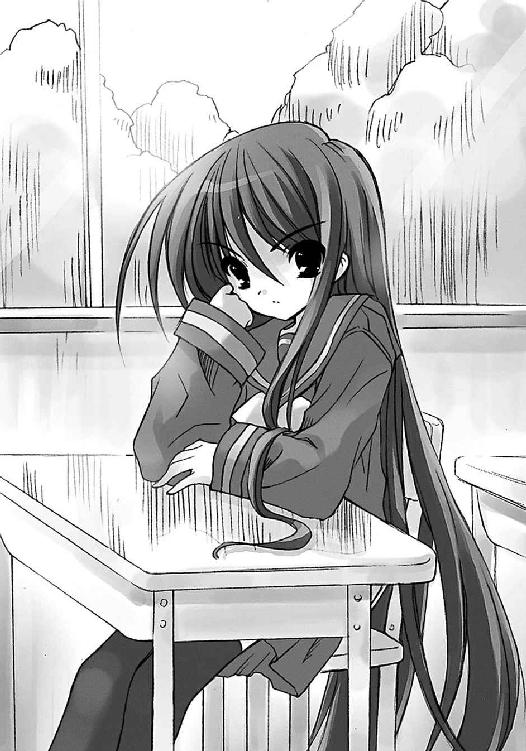
「なんであんたがここにいるんだ!?」
「おまえを狙う奴らを釣るには、やっぱりその近くにいた方がいい、ってアラストールと話したの。ま、私もこういう場所には滅多に来ないし、見物がてら、ってとこ」
少女がスカートの中で足まで組んで、全く当然のように占拠しているそこは、昨日まで、平井ゆかりというクラスメートが座っていた席。
「ひ、平井さんはどうしたんだ」
「ここにいたトーチなら、私が割り込んだから、もうなくなったわよ。おまえの隣で、ちょうどよかったしね」
「......トーチ......平井さんが......？」
予想していた最悪の事態は、あまりにも呆気なくやってきた。
自分の日常が崩れる......いや、崩れていたことを、知らされる。
それを知らせた少女は、昨日と全く変わらない。平然と、非情の声を吐く。
「そ、本人はとっくに死んでた。私は、その残り滓に私って存在を割り込ませて『平井ゆかり』になってるわけ」
「か、顔とかが全然違うだろ！」
思わず悠二は声を荒げていた。驚いたクラスメートたちの注視に、慌てて声を潜める。
「......なんで誰も気付かないんだ」
「存在に割り込む、ってのは、元の人間に似せるとか、そういうことじゃないの。他が認識していた平井ゆかりって存在を、私に挿げ替えるってことなの。おまえは私たちの干渉を受けたからおかしく感じられるだけ。気にしないで」
「気にするに決まってるだろ！ 平井さんはどうしたんだよ！」
ああもう、と少女は頭をかいて、呆れ顔を作って見せた。
「さっきから言ってるでしょ。平井ゆかりは私だって」
少女の言うとおり、クラスメートは誰も異端者が紛れ込んでいることに気付いていない。
いや、彼女が以前からここにいるものと捉えているのだ。
悠二は、説明の細かい内容はともかく、これら彼女がやったことの意味はだいたい理解していた。しかしそれでも、言わずにはいられなかった。
「そういうことじゃなくて!! 元の平井さん、本当に、昨日までここに座っていた『平井ゆかり』は、どうなったんだ!?」
また大声を出した悠二を......挿げ替わった平井ゆかりではなく悠二の方を、クラスメートたちが怪訝な顔で見ている。
悠二はそれらの表情で知らされる。
彼らからすれば、おかしいのは自分の方なのだ。
しかしそれでは、自分が知っている彼女は、彼女の存在は、あまりにも。
「昨日説明したでしょ。ここに座っていた平井ゆかりは元からいなかった......そういうこと。どうせ灯も消えかけてたし、そのときはおまえも忘れてた。思い煩うことなんかない」
「......」
特別に親しかったわけではなかった。目立たなかったし、おとなしかった。この四月から一月ほど、偶然隣席にいた、それだけのクラスメートだ。印象深い思い出もない。
（でも、彼女は、平井ゆかりは、確かにいたんだ）
そのことを、本人が覚えていて欲しかったかどうかは分からない。そんなことを考えるだけの事情も知らないまま他のトーチが消えるときのように、ふと、全てを失う、そんな終わりを迎えたのだろう。
それでも、悠二は彼女のことを覚えていたかった。
今、同じ席に、平井ゆかりとして座っている少女。
それは彼女ではない。
それを自分は知っている。
それが、恐らくは唯一の、彼女が存在した証なのだ。
「......あんたの名前は？」
「名前？」
「『フレイムヘイズ』ってのは、怪物退治する奴ら全員の名前だろ。あんた個人の名前は、なんていうんだ？」
「......え」
予想外の質問だったらしい。少女は不意に、顔を曇らせた。凛々しさを生む意思の力が揺らぎ、寂しさの端が、錯覚のようにわずかにのぞく。胸に下げた、あの声の出るペンダントを掌中でもてあそびながら、小声で答える。
「私は、このアラストールと契約したフレイムヘイズ、それだけよ。それ以外に、名前なんかない」
その顔から寂しさは消えていたが、今までの平然としたそれとは少し違う。
表情を消した顔だった。
「他のフレイムヘイズと区別するために、〝『贄殿遮那』の〟って付けて、呼ばせてはいたけど」
「ニエトノノシャ......？」
「『贄殿遮那』。私が持ってる大太刀の名前」
「そうか。じゃあ......そうだな、僕はあんたを〝シャナ〟って呼ぶことにする」
平井ゆかりと、彼女は別人だ。
だから彼女には、別の呼び名が必要なのだ。
それは悠二にとっては重要な行為だったが、当然と言うべきか、シャナと名付けられた少女にとってはどうでもいいことだった。彼女は首を傾げて、軽く答える。
「勝手にすれば？ 呼び名なんかどうでもいいし、私は私の役目を果たすだけ」
「それは、僕を守るってこと？」
「守る......？」
シャナは、あからさまに怪訝な顔つきになった。
「ま、おまえに喰いつく奴がいる内は、そういうことになるかもね」
まったく、この少女の言い方は身も蓋もない。
悠二はため息をついて、しかし密かに、そんな彼女の言葉に、なぜか自分の暗く重い悩みを吹き払うような......理不尽な爽快さを覚えてもいた。
その、空元気のような、よく分からない気持ちのまま、悠二は当面の不安を口にする。
「それよりシャナ、あんた授業とか受けて、大丈夫なのか？」
シャナは、さっきとは別の理由で眉を顰める。
「勝手に名付けて、いきなり呼び捨て？ ま、いいけど......それに、授業ってのも、この程度のお遊びでしょ？」
鞄から教科書を取り出して、ひらひら振ってみせる。
そんな、見た目は中学生さえ怪しい少女の、いかにも小馬鹿にしたような様子に、悠二はきな臭い顔つきになった。
始業の予鈴が、その耳に不吉な音色を響かせる。
四時間目、英語の授業も終盤に差し掛かろうとしている。
教室は静寂と緊張の中にあった。
生徒たちは立てた教科書の中に顔を隠している。最初こそ通常通りに授業を行っていた英語教師も、今はひたすら板書を続けていた。
この異様な雰囲気を、圧倒的な迫力と存在感で作り出している小柄な少女が、教室のど真中の席に陣取っている。実際の動作としては、座っている、それだけなのだが。
少女は、教科書を閉じて、ノートもとらず、ただ腕を組んで教師を見ていた。
この何でもないはずの態度が、教師を動揺させている。彼女の視線が、まるで野生動物でも観察しているかのように無遠慮で、敬意や尊重を全く含んでいないと、分かってしまうからだった。こんな授業態度を、朝から四時間連続で取っている。ちなみに、騒動はすでに三時間連続して起きている。
特に突っかかってくるわけでもないのだから、放置しておけばよいのだが、教師というのは、概ね沽券や面子にこだわり、盲信されることを欲し甘える生き物なので、こういう、自分を一個の人として計るような態度を取られることを嫌う。
そしてとうとう、この英語教師も前三者と同様に、少女の無礼な態度に我慢できなくなった。
不幸なことに。
板書を終え、英語教師は振り向いた。この、教え下手と多い宿題で不人気な中年男は、口を二度ほど開け閉めしてから、ようやく裏返りかけの声を出した。
「ひ、平井、おまえ、最近不真面目だぞ。ノートを取らんか」
平井ゆかり......悠二が名付けたところの少女・シャナが、答えるのではなく、ただ、言う。
「おまえ」
いきなりこれである。
見かけの幼さに不釣り合いな、押しのきいた凛々しい顔立ちが静かな気迫を発して、英語教師を半金縛り状態にした。
「その穴埋め問題、全然意味のない場所が空いてるわ。クイズじゃないんだから、前後の文脈で類推できる所を空けなさいよね」
シャナは、腕組みさえ解かない。
「う......!?」
「正しい答えは『That which we call a rose, By any other name world smell as sweet.』だけど、原文を覚えてないと出てきっこない」
完璧な発音。誰もが正解であることを確信できる、そんな答え方だった。
さらに容赦の無い追い討ちがかかる。
「その板書も、段落で見たら、あと二文も足りないわ。おまえが持ってるマニュアルのページ単位で書き写しているだけだから、そんなことになるのよ」
反論の余地の無い、痛烈で的確な指摘に、英語教師は思わず一歩下がった。
普通なら、肩書きや立場といった、自分の能力とは無関係な虚飾が彼を勇気付けるところだが、この、なぜか最近生意気になった少女の前では、そんなものが毛ほどの威力も持たないことを自覚させられてしまう。
弱者に弱者たることを自覚させる、強者の貫禄というやつだった。
しかもこの強者、一旦口火を切ると容赦なく相手を叩き潰してしまう。
「おまえ、教師のくせに、学力がなくてマニュアル外に手が届かないし、説明も下手でダラダラ要領を得ない話をするだけ......なってないんじゃない？」
英語教師の顔が無惨に歪んだ。
「私に教えるつもりがあるなら、ちゃんと勉強してから出直しなさい」
生徒たちは一抹の憐憫とともに、英語教諭が四人目の餌食となったことを知った。
そういうことが延々四時間も続いたので、昼休みになるとクラスメートは息抜き......というより息継ぎを求めるように一人、また一人と教室を出てゆき、結局、悠二はシャナと二人きりで弁当を食べる羽目になった。
悠二が予想していた騒ぎは、暴力面においては完全なマイナス方面に裏切られたが、精神面においては完全なプラス方面に裏切られたわけだった。
暴力を振るわれるよりも、アイデンティティを粉砕される方が、実質ダメージは大きいと思うので、あるいはこれは惨劇と呼んでもいいんじゃないだろうか、と悠二は思った。
（何人、立ち直れるかな）
ただでさえ昨今の教師たちは、肩書きに無条件で与えられていた権威や信頼を（ほとんど自らの行いで）失いつつあるというのに......などと社会派を気取りつつ、コンビニおにぎりに喰らいつく悠二である。
隣の席を見れば、惨劇を引き起こした当の本人も、メロンパンをぱくついている。美味しさを感じているらしい、自然な顔のほころびなどには、見かけの年齢どおりの可愛さがある。机の上に載っている、どこぞのスーパーの袋の、むやみな大きさはどうかと思うが。
「なあ」
「なに」
外は騒がしいのに教室には二人だけ、そんな微妙に違和感のある光景の中、悠二は言う。
「あそこまでしなくてもいいだろ」
シャナは心底不思議そうな顔で訊き返した。
「なにを？」
「......いや、もういい」
シャナは首を傾げて、またメロンパンを口に運ぶ。
昨日怪物を圧倒した姿が嘘のような、その幸せそうな横顔に、悠二は気負いや深刻さといったものが殺がれてしまうのを感じた。
「昨日もタイヤキ食ってたけど......あんたも腹がすくのか」
「んむ、当然でしょ」
頬張りながらシャナが答える。
悠二はついでとばかりに、昨日から気になっていたことを尋ねてみた。
「ところでさ......その声の出るペンダント、通信機なのか？」
「似て非なるものだ」
セーラー服の胸元に出されているペンダントから、午前中は黙っていた声が答えた。ここに二人しかいないからだろうか。
「これは、この子の内に蔵された〝紅世の徒〟たる我、その意思だけをこの世に顕現させる、〝コキュートス〟という神器だ」
「......ウチニゾウサレ？ ケンゲ？」
シャナが、横目で睨んで、それでも解説を加えてやる。
「アラストール本人は、契約者である私の中にいて、このペンダントは、その意思を表に出す仕掛けってこと」
悠二は、不思議を理屈で考えるのをやめた。説明に素直に納得して、訊きたいことを訊く。
「契約者......そういえば朝も、この彼（？）と契約してフレイムヘイズになった、とか言ってたな。あんた、やっぱり元は人間なのか」
「そうよ」
とシャナ。
「なんでフレイムヘイズなんかに？」
「おまえの知ったことじゃないわ」
それは名前を訊いたときとは違う、カラッとした明快な拒絶だった。
悠二はそんな彼女のぶっきらぼうな物言いに、かえって爽快なものを感じる......まあ、拒絶には違いないのだが。
「......じゃあ、さ」
ふと、教室を見渡す。誰もいないので、アラストールの話も聞けてちょうどいい。
「他の事でいいから......少し詳しく話を訊いていいか？」
悠二としては、特に深い意図を持って言っているわけではない。ただ、山積みの疑問を片付けないと気持ちが悪い、それだけのことだった。
シャナの方は、これは当たり前だが、あっさりしたものだ。
「さっきから訊いてると思うけど......で、なに？」
とりあえず悠二は、根本的なことから尋ねてみる。
「そもそも、グゼってなんなんだ」
そんなこと？ という顔で、シャナはメロンパンの最後の一切れを口に放り込んだ。
「ん〜、〝紅世〟......『クレナイのセカイ』よ。この世の歩いてゆけない隣。ずっと昔、どっかの詩人さんが、〝渦巻く伽藍〟に、そういう気取った名前を付けたんだってさ。そこの住人を〝紅世の徒〟って呼んでるの」
「異次元人......みたいな？」
これにはアラストールが答える。
「貴様らの概念で言い表せば、そうなる。貴様を襲ったのは、〝徒〟自身ではなく、そ奴がこちら側で作った〝燐子〟という下僕だが」
「こっちの世界を乗っ取りにきた侵略者とか？」
「さてな、目的は各々による。一概には言えん。ただ、我ら〝紅世の徒〟は、この世において〝存在の力〟を〝自在〟に操ることで顕現し、またそれを変質させて事象を左右することができる。その事実ゆえに、この世に侵入する〝徒〟は後を断たない」
「......なんだって？」
まったく、アラストールの言い回しは難しい。悠二はその半分も理解できない。
シャナがまた説明を加えてやる。今度はため息をつきながら。
「この世には、〝存在の力〟っていう根源的なエネルギーみたいなものがあるの。それがあって初めて、どんなものも存在できる。別の世界〝紅世〟から来た、本来この世に『存在しないもの』である〝徒〟たちは、その力を得ることで、この世に存在できる......分かる？」
「ん〜、な、なんとか」
こめかみに指をやって必死に理解しようとする悠二に頷いて、シャナは続ける。
「で、この世に居座るためには当然、〝存在の力〟を使い続けなきゃならない。だから、彼らは人間からその力を集めてるの」
「〝存在の力〟を集める、って昨日の、あれのことか......」
悠二の脳裏に昨日の、怪物が炎と化した人々を喰らう光景が蘇り、おぞ気を呼ぶ。
シャナは気楽に頷く。
「そ。で、それぞれの目的とか狙いとかのために、その力を〝自在〟に操って不思議を起こしたり、下僕を作ったりするってわけ」
「この世の理から外れた、起こるはずのない現象、居るはずのない存在、そして何より、それらを生み出すための力の乱獲が、この世と〝紅世〟、両界全体の存在のバランスを崩すやも知れぬというのに......まさしく愚者の遊戯というべきだ」
アラストールが、予想外に物騒で重い話で締めた。
それをよそに、シャナは袋の中から取り出した一パック三本入りのみたらし団子をパクついている。ほくほくと、美味しそうに。
「そのバランスを崩さないために、乱獲者をやっつけるのがフレイムヘイズ、か......」
言いつつ、悠二もおにぎりをまた一個、口に運ぶ。
さっきのおぞ気は未だ背筋を冷やしているが、目の前のシャナがあまりに無頓着に、しかもニコニコして食べるので、不真面目さへの腹立ちやら単純な対抗心やらで、こっちも食べずにはいられなくなるのだ。これが生きてる気分かな、などと無駄に深く考えつつ、さらに訊く。
「はぐ、んで、その〝存在の力〟を吸い取るのは......まあ、話を聞いてたら、他でもまずいとは思うけど......人間のでなきゃ、駄目なのか？」
アラストールは、物を食べながら話をするという無作法を気にしないらしい。変わらず重く低い声で答える。
「当然だ。我らと近しい、深く強い意思ある存在であればこそ、力を得る意味がある。有象無象を飲み込めば、かえって薄められてしまうのみだ」
「チカシイ？ 〝紅世の徒〟って、僕らと同じような人間なのか」
「貴様らの概念での説明は難しい。もし言い表すならば、論理より詩情が必要となろう」
悠二は、スポーツドリンクのプルを開けてため息をつく。
「ふうん......でも、昨日今日、見た限りじゃ、飲み干される日も遠くなさそうだけど」
「そうでもない。我らは古くからこの世に侵入し続けているが、人間は増え続けている。貴様が生まれる前から世界はそうやって動いていたのだ。大勢に変化はなかろう。〝徒〟の暴走を食い止めんと動く、我らフレイムヘイズという存在もある」
「これが、頼りになるのかな」
悠二が見る先で、最後の一本を綺麗に食べたシャナが、指に付いたタレを舐めている。
「ん〜、だから言ったでしょ。おまえっていう宝具の蔵〝ミステス〟が燃え尽きるか、それを狙ってくる、ここの〝徒〟を討ち滅ぼすまでは、守ることになるって」
本当に、この少女は身も蓋もない言い方をする。
その悪意のない、ひたすら事実をぶつける率直さに、悠二はなんだか慣れてきている自分を感じた。腹立ちよりも苦笑が湧いてくる。
「心強いお言葉......でも、四六時中一緒にいるつもりなのか？」
「とりあえず、夕方を警戒するわ」
周囲の世界との繋がりを一時的に断つ因果孤立空間、〝封絶〟は通常、人々が自己の存在を明確に認識する日中と、闇の中で別の自己を目覚め演じさせる夜間、それらの境目である夕方と明方......つまり『変わろうとする揺らぎ』に乗じて行われる。
だから、襲撃もまず、その時間帯にあるということだった（不意打ちなどの回りくどい真似を、普通〝紅世の徒〟は行わないらしい）。
「封絶......昨日、聞いたっけ。ゲームとかでよくある結界みたいなもんか......って夕方!?」
悠二は納得しかけてから、とある事実に気付いて仰天した。
「今日は授業が遅くまであるぞ！ 下手したらここに、学校に来るじゃないか！」
シャナが、頬杖の上で呆れ顔を作る。
「なに当たり前のこと言ってんのよ。私がなんのためにここにいると思ってんの？」
一瞬、安堵を覚えて......しかしふと彼女の性格に思い至り、訊いてみる。
「皆も守ってくれる、とか......？」
「なにそれ？」
悠二は立ち上がった。
「どこ行くの」
「トイレだよ！」
と言い捨てて教室を出る。
歩きつつ、そういえば彼女は『食うだけ』なのかな、などと少々下品なことを考えていた悠二は、トイレの前で呼び止められた。
「おい、坂井......！」
その、声をひそめた叫び、という器用な呼びかけに振り向くと、仲のいいクラスメートが三人、彼を手招きしていた。
そういえば、朝からシャナとのことにかかりっきりで、彼らとは挨拶一つ交わしていなかった。悠二は駆け寄って声をかける。
「みんな、今日は食堂だったのか？」
その一人、中学からの友人で、頭も人もいい、メガネマンこと池速人が首を振って答えた。
「違うよ。それより坂井、おまえ、よくあんな騒ぎのあとで、事の張本人と飯が食えるな」
その横、美をつけてもいい容姿を持ちながら、妙に軽薄っぽい少年、佐藤啓作が続ける。
「ホント、勇気のある奴。下手すると、おまえまでセンセーどもに目ぇつけられるってのに」
「だいたい、おまえらって、そんなに仲良かったか？ 抜け駆けは許さん、許さんぞ〜」
と絡んできたのは田中栄太。大柄だが愛嬌があるので、粗暴には見えない。
「いや、仲がいいとかそんなのじゃなくて......」
悠二としては言葉を濁すしかない。まさか本当のことは話せないし、話したくもない。
（............っ）
悠二はふと、この親しい友人たちを......目前にある日常の光景が本物なのかどうかを......朝に一度確かめたというのに、また確認してしまっていた。そんな自分が嫌になる。
友人たちに変わりはない。むしろ変わったのは自分で、彼らはそのことを訊く。
「二人っきりで弁当食べて会話して。十分『そんなの』だろう」
「平井ちゃんも、たしかに可愛いといえば可愛いけど、なんつーか、マニアックな趣味だな」
「実はロリ属性持ちだったのか。侮れん奴め」
さすがに血圧が上がってきた。
「あのな......」
言い返そうとして、ふと声が途切れた。
夕方。〝紅世の徒〟。襲撃。
何事につけ考えることを昨日から繰り返しているせいか、それともトーチの確認を行うたびの習慣になったのか、外れた世界のことを思い出す。
早退するべきだろうか。そうすれば、少なくともここが戦場になることはない。
その微妙な間が、友人たちの誤解を呼ぶ。
「やっぱり、やましいところがあるな？」
池がメガネを煌かせて追及する。
今になって気付いた大事なもの。
「ああいう娘に手を出せる神経を見込んで、話がある。是非他の女子とも渡りをつけてくれ」
佐藤が真面目な顔で図々しい懇願をする。
なんということのない、馬鹿なやり取り。
日常。いつもの風景。
無くしたくない、変えたくないもの。
（怪物一味だって、昨日の今日で来たりしないんじゃないか？）
悠二は、未練からくる希望的観測にすがっていた。
（そうさ、取り越し苦労ということもある、今日来るとは限らない、今日一日くらい......）
そうだとは分かっていても、すがりたかった。
「このムッツリが！ おとなしい顔して、一体どういう手管を使った!! 教えデッ!?」
とりあえず、詰め寄る田中は殴っておいた。
そして、しかし、敵は来た。
切れ切れの雲の彼方に沈みつつある夕日が、全てを寂寥の赤に染めている。
ホームルームを終えて、教室を出てゆきつつあった生徒たちをも染める、
その赤が、
洪水のように溢れかえり、空間を満たした。
「う!?」
授業が終わった、何事もなかった、と完全に油断していた悠二は動転した。慌てて席から腰を浮かし、あたりを見回す。
陽炎の壁が、窓の外と廊下の一部を含めて、周りを囲んでいた。
床に火線が走り、紋章らしき奇怪な文字列を描いた。
生徒たちが、それぞれ動作の途中でピタリと静止した。
悠二は、これが何であるか、知っていた。
（......封絶......世界が、変わる......）
全身に響く世界の違和感、あるいは流れの変調のような感触に戦慄する。
やはり自分は、他の生徒たちのように静止しない。
この異世界の側に立っていた。
自分の中に収められた〝何か〟のために。
その隣席で、シャナがおもむろに立ち、言った。
「来たわね」
その強い線を描く唇の端が、釣り上がる。
「ほ、本当に、今、ここに!?」
未練から引き起こしてしまった最悪の事態。
悠二の胸に、恐怖と後悔が押し寄せた。
「本当に、今、ここに、来たわ」
シャナは、そんな悠二に無自覚の断罪を下し、さらに強く叩くように、宣告する。
「さあ、やるよ」
シャナは軽く床を一蹴りして、窓と悠二の間の机上に飛び乗る。足を肩幅ほどに開き、堂々と窓に向かって立つ。腰の下まである艶やかな黒髪がわずかになびき、
そして火の粉を撒いて灼熱の光を灯した。
その舞い咲く火の粉の向こうに、いつしか寂びた黒のコートをまとい、右手に戦慄の美を流す大太刀『贄殿遮那』を握る、フレイムヘイズの姿があった。
一瞬、その後ろ姿に見惚れた悠二は、はっと我に返って叫んだ。
「ま、まだ皆が！ 他の場所でできないのか!?」
封絶の中で止まるクラスメートたちの中には、池もいた。何故か教科書ではない問題集を鞄に入れている格好で止まっている。
「封絶したのは敵よ。向こうに言えば？」
シャナの言葉はいつも素っ気無い、しかし反論の余地の無い正しさを持っている。
「くっ!!」
すでにそういう彼女に慣れてしまった悠二は、どうせ徒労に終わるだろう反抗などせず、すぐさま行動に移った。とにかくマネキンのように固まったクラスメートを、シャナの立ち回りそうな場所から離さねばならない。
（ぼ、僕のせいなんだ！ 僕がやらないと！）
幸い、ホームルームの後でもあり（ついでにシャナから早く逃げようとして）、教室内に残っていたのは、自分たち以外では四人ほど。シャナが向いている窓側には、中村とかいったはずの女生徒、一人だけしかいなかった。
悠二はその、窓際に立って化粧の途中で止まっている中村に駆け寄る。
「ちょ、ちょっとゴメン」
唇を突き出した、かなり間抜けな格好で止まる彼女の腰を、大急ぎで抱え込む。床に脚が張り付いていたらどうしよう、と一瞬心配したが、これは杞憂に終わり、当人の体重どおりに動かすことができた。もちろん、並みの体力しかない悠二は、持ち上げたり担いだりに苦労する。
「っと、お、重いな、この！」
と本人が聞けば二、三度は殺されそうな感想を漏らしつつ、廊下側の壁の影へと放り出す。
再び教室に入って見れば、シャナはまだ机の上で立ったままだった。大太刀は両手で構えられ、微塵の揺るぎもない。わずかに火の粉が、炎髪から舞い落ちているだけ。
その痛いほどの静けさの中、シャナの向き合う正面、窓の外に一点、何かが小さく浮かんだ。
悠二はその不思議なものに目を止め、立ち止まっていた。
赤く燃え、揺れる陽炎の光を受けて、鋭くエッジを輝かせるそれは、長方形。
くるりと回って見せた絵柄は、スペードのエース。
（......トランプ？）
その宙に浮く、一枚の薄いカードから、はらり、と、ありえない二枚目が落ちた。続けて三枚、四枚......赤い光の中に、カードが次々と零れ落ち、舞い上がり、どんどん増えてゆく。
無軌道に宙を固まって舞うそれは、やがて速さを増して窓の外を埋め尽くす。
と突然、そのカードの軌道が一方に指向する。
悠二に。
雲霞の如きカードの怒涛が、窓枠やガラス、壁さえ吹き砕いて教室になだれ込んだ。
「......っ」
叫びをあげるための空気が咽喉を通る前に、それは悠二の眼前に迫り、
そして、食い止められた。
「わあ！ ......？」
寂びた黒色の壁に。
シャナが左腕を一振り、コートの裾を広げて伸ばし、悠二を守る盾としていた。その表面に突き立つカードの怒涛は、触れるそばから燃え上がり、裏には一点のへこみもつけられない。
シャナはその間すでに、左腕を再び柄に戻し、柄頭を左脇の奥に引き込んでいる。右肩をやや前に突き出す、刺突の構え。
炎の輝きを点す二つの灼眼が、カードの怒涛、その力の源泉を見抜いた。
瞬間、
机の板が弾けて砕け、脚のパイプが折れ飛ぶほどの踏み切りを付けて、シャナは跳ぶ。
カードの流れの一点へ、横合いから大太刀の切っ先が突き立つ。
「ぎ、ぐああああッ!!」
絶叫が上がり、カードの流れに揺らぎが生じる。
手応えと刺さり具合の感触を得るや、シャナは大太刀をひねって抜く。再び鋭く振りかぶり、頂点での溜めを置かず、真っ向から切り下げる。
刃の軌跡に炎が走り、一気にカードへと引火した。
爆発が、教室を衝撃で膨らませ、かき回す。
シャナは、その爆発を眼前に受け、しかし眉一つ動かさない。
コートの壁を挟む悠二の頭上と足下からも炎が溢れ、思わず悠二は飛び上がっていた。
「うう、わッ!?」
爆風が収まると同時に、コートの裾の壁が取り払われる。
悠二の目に、ようやく教室の全景が入った。
床は焼け焦げ、フローリングも半分方剥ぎ取られてコンクリートの地が出ていた。窓ガラスは全て枠ごと吹き飛んで、机や椅子の破片が無惨に散らばっている。
悠二にとっては、自分の良く知る場所だけに、昨日の繁華街での光景よりも、受けた衝撃は大きかった。
その光景の端に、シャナがいる。あれだけの爆発が起こったというのに全くの無傷で、相変わらず、小柄な体を傲然と屹立させている。
その前に軽く差し上げた大太刀の切っ先に、とある物、あるいは者が、引っ掛けられていた。
昨日、シャナに斬られたときに逃げていくのを見た、粗末な作りの人形だった。
（たしか、〝燐子〟とかいう、〝紅世の徒〟の下僕......？）
その人形が、肩口から胸まで斬り下げられた切っ先を深々と体に埋め、百舌のハヤニエのように掲げられている。その腹には、最初の叫びの原因と結果らしい、別の大穴が空いていた。中の綿も見えるその傷口からは薄白い火花が散って、噴き出す血を思わせる。
「ぎ、う......」
その赤い糸で縫われた口が、どうやってか低いうめき声をあげる。
シャナが、その人形に何か言おうとして、ふと周りを見回した。
さっきから散っていた薄白い火花が、地面を跳ね、彼女を取り囲んでいた。火花は跳ねる内に体積を増し、彼女を中心に回り始める。
「う、く、くく......！」
いつしかうめきを忍び笑いに変えていた人形の傷口から、いきなり大量の火花が噴き出した。
それは一粒一粒をセルロイドのドールの頭に変えて、人形の全身に張り付く。その頭だけのパーツが、人形を中心としたいびつな巨躯を瞬く間に組み上げてゆく。
周りを跳ねていた火花も同じく、ドールの頭に変わって、くすくすと笑い出す。不気味な包囲網が彼女を取り巻いていった。
その異様な光景にあとずさって壁に張り付いた悠二は、目線を動かした拍子に、教室の端に投げ出されているクラスメートたちを見つけてギョッとなった。
男子生徒が三人、さっきの爆風に吹き飛ばされて、教室の隅に押しやられていた。そのところどころ焦げた体はガラスの破片にまみれ、椅子や机の残骸に打たれ、刺されている。
その無惨な姿に、悠二はショックを受けた。シャナにただ守られている、それだけでも非力な自分の身には余って、他のことにまで気を回せなかったのだ。
（......甘かった！ 僕の考えが、全部、僕が!!）
後悔が、罪悪感が、彼を衝き動かす。
「池！」
倒れている中の一人、友人の名を呼んで駆け出した。
「く、ききき......」
ドールの頭で組み上げられた巨躯の中心で、人形が笑った。その太い両腕がシャナの大太刀の刀身をがっちりと掴み、固定する。
「もらったわよ、フレイムヘイズ!!」
その叫びを受けて、包囲網を作っていたドールの頭が、瞬時に巨腕を形成し、池に取りすがる悠二へと向かう。
「なにを？」
シャナは平然と答え、両爪先を支点にくるりと脚を捌く。
灼眼が光を引いて流れ、炎髪が火の粉を撒いて翻る。
体をいっぱいに捻って、人形に背を向ける。
同時に凄まじい踏み切りが、剥き出しのコンクリの床に破壊寸前の衝撃と炎の波紋を広げ、
「は？」
人形の視界が突然、高速で流れる。
シャナが、人形の巨躯を丸ごと刀身に抱えたまま、跳躍していた。
「っだあ!!」
シャナが咆え、悠二に迫っていた巨腕を、刀身を掴んでいた人形の巨躯で叩き潰した。
一撃で巨腕が、巨躯が爆砕される。
「っな、わ!?」
わけも分からず、倒れた池の上に（かばったわけではなく、位置上たまたま）覆い被さった悠二の背を、爆風が叩いた。
その、痺れや痛みもかすれ、遠く眺めが揺れるような感覚が、何秒か何十秒か......やがて、意識が鮮明になり、振り向く悠二、その眼前に、ぼろきれと化して切っ先にぶら下がる人形が差し出されていた。
「っわわ!!」
悠二は池を背に隠すように、腰をずり下げた。
今や人形は、毛糸の髪も根元から炭化し、ボタンの目も片方がちぎれていた。服どころか、体内の綿もほとんど吹き飛んで、ようやく肌色のフェルトが四肢を垂れているのみ。
「ひ、ひどいな......」
無惨な人形の姿を見て、悠二は思わず感想を漏らした。
「助けられといて、なに言ってんのよ」
簡単に答えたシャナは、その無惨な姿の人形を、大太刀を軽く振って床に放り落とした。冷たく訊く。
「おまえの主の名は？」
人形は、赤い糸もほつれた口で、息を荒くするのではなく、音の飛ぶＣＤのように、途切れ途切れに答えた。
「わ、たし、が言うとお、もうフ、レイ、ムヘイ、ズ」
「ううん、ただの確認。でもまあ、無駄駒をちょろちょろ出し惜しみするくらいだから、よほどの馬鹿なんだろうけど」
「......う、ぐ」
人形は、あからさまな嘲弄に声を詰まらせる。
そこに、
「うふふ、有益な威力偵察、と言って欲しいね」
と奇妙に韻を浮かせた声がかけられた。
シャナが声のした瞬間、体を向け、悠二がその意味するところに気付いて見る。
その先、破壊され開けられた窓の外に、長身の男が端然と一人、浮いていた。
背負った赤い陽炎に何故か染まらない純白のスーツと、その上に羽織った、同じく純白の長衣が、まるでシーツのお化けのようなあやふやな印象を見る者に与える。シャナの圧倒的な存在感とは正反対な、まるで幻想の住人だった。
「こんにちは、おちびさん。逢魔が時に相応しい出会いだ」
触れれば輪郭がかすれそうな、線の細い美男子。紡ぐ声は、調律の狂った弦楽器のような、妙な韻を含んでいる。
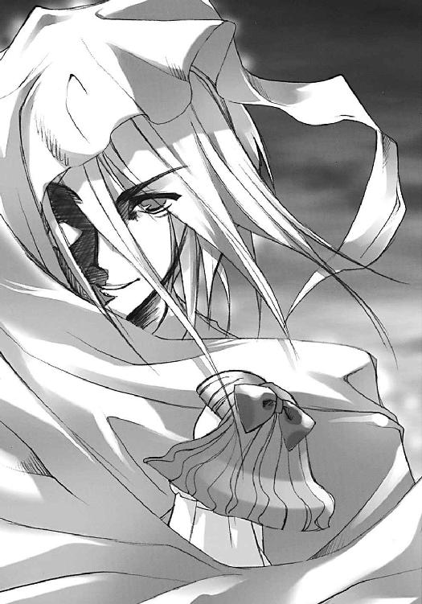
悠二は直感する。
（こいつが、〝紅世の徒〟だ）
ここにあることがおかしい、そんな違和感の塊。
シャナが、その男の声とはまた逆の、凛とした強い響きで返す。
「あんたが主？」
「そう、〝フリアグネ〟、それが私の名だ」
アラストールが、わずかに声を低くして言う。
「フリアグネ......？ そうか、フレイムヘイズ殺しの〝狩人〟か」
フリアグネと名乗った男は、薄い切り口のような唇を、笑みの形に曲げた。
「殺しの方で、そう呼ばれるのは好きじゃないな。本来は、この世に散る〝紅世の徒〟の宝を集める、それゆえの〝狩人〟の真名なのだけれど」
その視線が、シャナの胸元のペンダント〝コキュートス〟の中を刺す。
「そう言う君は、我らが〝紅世〟に威名轟かす〝天壌の劫火〟アラストールだね。直接会うのは初めてかな。こっちの世界に来たことは聞いていたけれど......君の〝フレイムヘイズ〟も初めて見たよ」
次いで、シャナに目をやる。
「......なるほど、これが君の契約者『炎髪灼眼の討ち手』か......噂にたがわぬ美しさだ。でも、少し輝きが強すぎるな」
勝手な感想を並べるフリアグネをよそに、アラストールは小声でシャナに注意を促す。
「なよなよした見かけや言動に惑わされるな。多数の宝具を駆使し、フレイムヘイズを幾人も屠っている強力な〝王〟だ」
「うん、感じてる」
シャナは足裏をわずかに擦って、踏み込みの体勢を取る。
「ふふ、そんなにしかめっ面をしなくても......」
言って、フリアグネは何気なく床に放り出された人形を見る。
その途端、
「マリアンヌ!!」
急に表情が悲しみの色に染まり、調子っ外れな叫びがあがる。
「ああ、ごめんよ、私のマリアンヌ！ こんな恐い子と戦わせてしまって」
芝居がかった動作で振られた手にはめられた、やはり純白の手袋の先に、一枚のカードが挟んである。ぴ、と指の振りとともにカードが浮き、
「ん」
「わっ!?」
シャナと悠二の周りで、焦げたカードが一斉に宙を舞った。
その焦げたカードが風を巻いて、フリアグネの指先に浮かんだカードへと集束してゆく。それが収まると、一枚となったカードは、その四分の三ほどを焦がし、欠けさせていた。
それを見たフリアグネは、またころりと表情を感嘆へと変えた。
「へえ、私自慢の『レギュラー・シャープ』を、腕っ節だけでここまで減らすとは」
再び指先で欠けたカードを取ると、練達の手品師のような流れる手つきでカードを袖口に滑り込ませる。
もう片方の手には、いつの間にか、ぼろぼろの人形・マリアンヌが柔らかく抱かれていた。
また急に、フリアグネは泣く寸前の顔になって、愛する人形の有様を眺めやる。
「ああ、全く、フレイムヘイズはいつもひどいことをする」
マリアンヌが、ほつれた口元を蠢かせて詫びる。
「申、し訳あ、りませ、ん、ご主人、様」
「謝らないでおくれ、マリアンヌ。君を行かせた私も悪いんだ。まさか剣一本で、ここまでひどいことをされるとは思っていなかったんだよ」
フリアグネは、今度は過度に優しい笑みを浮かべ、ふ、と息を、マリアンヌに吹きかけた。
すると、昨日の悠二のように、マリアンヌが一瞬、薄白い輝きの中で燃え上がり......そして、元のくたびれた人形の姿を取り戻していた。
「さあ、これで元通り。慣れない宝具なんか持たせて、ごめんよ」
フリアグネはマリアンヌを抱き寄せ、調律の狂った猫撫で声とともに頬擦りする。
その頬を寄せられたマリアンヌが、わずかに潤んだ声で答える。
「身に余るお言葉です、ご主人様......でも、今は」
うん、とマリアンヌに甘く返事すると、フリアグネはようやくシャナの方に目を向けた。今度は、表情が変わらない。笑みのまま。
「うふふ、昨日と今日で分かったよ。君はフレイムヘイズのくせに、炎をまともに出せないようだね。戦いぶりが、いかにもみみっちいな」
シャナが、ぴくりと眉を片方跳ね上げる。
「......なんですって？」
「なにせ、かの〝天壌の劫火〟との契約者だ。どんな力があるかと警戒していたのに......その、かなりの業物らしい剣の力を借りて、ようやく内なる炎を呼び出している程度とはね。違っているかな？ 私の宝具への目利きは、かなり確かだと自負しているのだけど」
「......」
シャナ、無言の渋い肯定に、フリアグネは笑みを深める。
アラストールが再び、低い声で答えた。
「なるほど、〝燐子〟を最初に当てたのは、我らの力の程を見極めるためか。噂どおり、姑息な狩りをする」
この皮肉にも、フリアグネの笑みは崩れない。
「いやいや、昨日の戦いの顛末を聞いて、さほどの危険はないだろうと踏んではいたよ？ 今日、様子見をしていたのは、あくまで念のためさ。私のマリアンヌの意思でもあったしね」
「昨日の恥を雪ごうと......かえって無様をさらしてしまい、申し訳ありません、ご主人様」
「うふふ、だから、それはもういいって言ったろう？」
頭を垂れる人形の髪に、軽くキスをしてみせる。
「さすがに、剣一本でここまでやるとは思わなかったけれど、まあ、それだけのことだね。ただでさえ、人の内に入って窮屈だというのに、契約者も貧弱ときては、君の〝王〟たる力も、まさに『宝の持ち腐れ』というところかな。ふ、ふふふ」
「......貧弱かどうか、見せたげるわ」
シャナが、灼眼の光を強めて身構えるが、フリアグネは、今度は急に困った顔を作った。駄々っ子に対するように、首を振ってため息をつく。
「ケンカの押し売りかい？ 無粋な子だなあ......私は、そうやってムキになったフレイムヘイズが、力を暴走させて爆死するのを何度も見ている。そんなことになって、そこの〝ミステス〟が中身ごと壊されたら、私の真名〝狩人〟にとっては本末転倒なんだよ」
フリアグネは、また表情を薄笑いに改め、悠二に視線を流した。
「別に急ぐでもなし......もう少し、やりやすい状況を作ってから、また伺うことにするよ」
悠二という存在ではなく、悠二という宝具を秘めた〝ミステス〟を、悠二の中にある宝具を、穴の空くほどに強烈な欲望を込めて、見る。
悠二は、その視線の無情さに、ぞっとなった。
「なにが入っているのかな、その中......うふふ、楽しみだ......」
その薄白い姿が、妙に浮いた声が、その背に負った陽炎の壁の揺らぎと混じり、溶けてゆく。
その揺らぎに目を焼く内に、気付けば、フリアグネは去っていた。
「やはり、ただの〝徒〟ではなかったな。〝王〟、それも〝狩人〟フリアグネとは」
「ふん」
重く声を響かせるアラストールに、シャナが短く鼻を鳴らして返す。
悠二が、切り傷や火傷だらけの池を抱え起こしつつ、訊いた。
「あいつが〝徒〟なのか......」
これには、むくれるシャナではなく、アラストールが答えた。
「うむ。〝紅世の徒〟の中でも、とりわけ強大な力を持つ〝王〟の一人だ。我のように、人の身の内に存在を封じず、ゆえにこの世の〝存在の力〟を喰らい続け、両界の均衡を崩す乱獲者......我らフレイムヘイズの敵だ」
「〝王〟......怪物の親玉だから、もっと凄い化け物みたいな奴かと思ってた」
「見た目は判断材料にはならぬ。我らは、己が望む形で存在することができるのだから」
二人の会話に、シャナが割り込んだ。
「封絶内を直すわ。そいつ、使うから」
「え？」
シャナが顎で差す、その仕草は、悠二の腕に抱えられる、ぼろぼろの池を差していた。
「使う？ どういう意味だ？」
「そいつの〝存在の力〟を使って、封絶の中の壊れた場所を直すの」
「！」
悠二は昨日の出来事を思い出した。
シャナが何人分かのトーチを火の粉に変え、封絶内を復元したことを。
そして、その人々が、封絶の解けたあとの世界に欠けていた......まるで最初から存在しなかったかのように、欠けていたということを。
悠二は慌てて池を抱え込んだ。
「き、昨日、トーチになった人たちを消したみたいに、池を使うってのか!?」
シャナはあっさりと認める。
「そうよ。ここには昨日みたいに連中の喰い残しのトーチがない。だから、その死にかけを使うの。トーチになる前の人間なら、死にかけ一人分で全部直せるわ。ついでに他の人間の傷も治すし、そいつの残り滓もトーチにして配置する。なんの問題もないでしょ」
「おおありだよ!! 池が僕みたいに死ぬって事だろ!?」
「当たり前じゃない。薪がなければ火は燃えないでしょ。元になる力が無いと、物は直せない、人も治せない」
「......くっ......」
シャナは、常に事実を突き付ける。
悠二には、その事実を跳ね返せるだけのものが、なにもない。
「分かった？ そいつが知り合いで嫌だってなら、他の奴を使ってもいいわよ」
「そ、そういう問題じゃない！」
「じゃあ、どうしようってのよ。壊れたまま、傷だらけのまま、封絶を解くっての？ 言っとくけど、今の因果孤立状態を解いて、この空間が動き出したら、そこに転がってる連中、確実に死ぬわよ」
シャナは、やはり事実を突き付ける。
悠二も、彼女が理屈として正しいことを言っているのは分かっている。
腕の中にある池の、破片に切られ、炎に焼かれた傷が深いことは、素人目にも容易に分かる。世界が動き出せば、重傷は間違いない......いや、シャナの言うとおり、死ぬのだろう。
しかし、倒れるクラスメートの中からトーチにする人間を選ぶことなど、悠二にできるはずもなかった。そもそも、彼らを巻き込んでしまったのは自分なのだ。
シャナの言うことが正しい、そのことは分かっていた。
正しいし、分かっているが、それでも、できないことはあるのだ。
「......」
黙りこくって解決法を探す悠二に、いい加減焦れたシャナは、
「それじゃあ」
と馬鹿にするように言う。
「おまえ自身でも使う？」
「なんだって？」
シャナは、ことさらに意地悪な口調で提案する。
「おまえの残り灯をいくらかでも削れば、物も人も直せるわ。もちろん、その分おまえの〝存在の力〟......『燃え尽きるまでの残り時間』は目減りするけど」
その提案が持つ意味の重さを理解した悠二は、しかし一瞬で決断した。
「分かった。それでいい」
「!?」
シャナは驚き......そしてなぜか、わずかに怒りを感じて、言う。
「駄々こねてた割には、やけに簡単に決めるのね」
これにも悠二は即答、断言した。
「簡単なもんか」
「じゃあ、なんで残された存在と時間を、みすみす捨てたりするのよ」
知らずの内に責めるような口調になっている問いに、静かで強い答えが返ってくる。
「こうなったのは僕の責任なんだ。それに」
シャナは、悠二が微笑していることに驚き、その声を聞く。
「捨てるんじゃない。生かすんだ」
その夜。
夜半を越えて空に垂れ込めた雲が、街に雨の帳を下ろし、まばらな灯火をぼやかせている。
その片隅、坂井、と表札を掲げたごく普通の一戸建ての屋根に、大きな黒い傘が一輪、咲いている。
「なによ、なによ、なんなのよ、あの〝ミステス〟は!?」
その傘の下から、怒りの声があがった。
雨にぼやける街灯に、その姿を朧に浮かべるのは、シャナである。
傘をさし、セーラー服で行儀悪く胡座をかいて、屋根の上に座っている。
本降りの雨は、彼女の周りで全て弾かれ、乾いてゆく。ちなみに、彼女が怒っていることとその現象は、全く関係がない。
「燃え残りのくせに、生意気よ！」
封絶内の復元は結局、悠二の希望通り、その残り火を削った力で行われた。
教室の破損、およびクラスメートたちの傷と服は、一応無事に復元された。一応、というのは、力の量的にギリギリに削ったため、教室は所々手抜き工事のように古びてしまい、友人たちにも打ち身程度の後遺症が残った、ということだ。
それらの様子を見た悠二は、青ざめた顔で再び笑った。
悠二のその笑いが今、シャナを苛つかせている。
「本当に、なんて変な、じゃない、妙な、違う、嫌な、そう、嫌な奴！」
上がる声には、彼女らしくない、愚痴や文句のような、ひねた響きがあった。
シャナは、帰り道も悠二に付いて行ったが、話はしなかった。悠二も何度か話し掛けたが、その度に睨み返されたので、やがて諦めて黙った。家の前で別れたときも、それじゃ、と言った悠二に、うむ、と短く答えたのはアラストールだった。
それからすぐ、シャナは屋根の上に飛び乗って、フリアグネ一党への警戒に当たっている。
状況や相手の性格からして、ほとんど意味のなさそうな行為ではあったが、二人としては他にすることもない。念のため、というだけのことだった。
そしてシャナは、屋根に座った途端、それまでの沈黙の壁が決壊したかのように、延々文句をアラストールにぶつけ続けていたのだった。
そんな彼女のいつにない荒れ様......あるいは取り乱し様に、アラストールは、ようやく可笑しそうに声をかけた。
「つまりアレは、おまえが久しぶりに、まともに接した人間ということだ」
期待してもいなかった、不意な胸元からの言葉に、シャナは内心で驚き、なぜか慌てた。それを隠そうと、ことさらに冷たく、しかしいつものようにしっかりと事実を言う。
「アレは〝ミステス〟、本人の残り滓よ」
うむ、とその明確な答えに満足の声を返したアラストールは、それでも彼女に問い掛けるように続ける。
「自分では、そう思っていない......いや、それは人間にとって、自己の存在にとって、さして重要ではない、ということかも知れぬ」
「でも、残り滓よ。アレがなにをどう思っても、もうなにも、どうにも、なんともならない......そう、ならないのよ......」
アラストールは、シャナの頑なな答えに、わずかに怒りと悔しさが滲んでいることに気付いた。一見冷酷な、しかし実はそうではない答えを返す。
「その通りだ。しかし、現実には多様な面が存在する。一つの事柄に、一つの現象しかないとは限らん。例外や事故、想像以上の出来事は、常にあるものだ」
「......」
「とはいえ、アレが元気なのも、今はまだ〝存在の力〟に余力があるからだ。いつかは、その思考能力も、意欲も、存在感も、薄れて燃え尽きる」
重く深いアラストールの声は予想外の打撃となって、シャナの、次の言葉を遅らせた。
「........................ふん、せいぜいフリアグネを討ち滅ぼすまで、もてばいいわ」
そのとき、がちゃん、と金属がぶつかる音がした。
シャナが見れば、屋根の端に掛け金具が突き出している。梯子の先だった。
そこからひょっこりと傘が、次いで悠二の顔が現れた。
「ああ、やっぱりいた」
シャナは不機嫌さを隠さず、一言。
「いて悪い？」
けんもほろろなその言い草に、意外に執念深いな、と悠二は苦笑する。
「......そこにいられると、なんだか落ち着かないんだけど」
「ふん、おまえの知ったことじゃ」
ない、と言いかけて、シャナは気付いた。
「......おまえ、どうして私たちがここにいるって分かったのよ？」
首だけ出した悠二はそれを傾げ、考え考え言葉を継ぐ。
「いや、なんというか......流れ、みたいなものかな。今日の封絶とかの小さいやつ......それを感じたんだ」
アラストールが納得の声を出す。
「そうか、そうだな、あれだけ力の発現の場に立ち会っていれば、分かってもくるだろう」
普通はそれに気付くことも無く力を消耗し、また消費されてゆくものだが、とまでは、さすがに言わない。
今度は首だけの悠二が訊く。
「僕のことよりも、あんたたち『平井ゆかり』なんだろ？ こんな所にいて、平井さんの家とかは、放って置いてもいいのか？」
シャナは、ふん、と鼻を鳴らした。
「そんなの、どうでもいいわ。『平井ゆかり』をしてるのはついでだし......それに、家族で喰われたんでしょうね、両親もトーチだった。なんとでも誤魔化せる」
なんともひどいやぶ蛇だった。もっとも、言った当人にその自覚はない。
「それより、こっちは忙しいんだから、用が済んだらとっとと引っ込みなさいよね」
「忙しい？」
見た目には座っているだけのようだが。
「......そうなのか？」
悠二はシャナの胸元のアラストールに訊いてみる。
〝天壌の劫火〟などと物騒な名を持っている割に、この異世界の〝王〟は、物腰が落ち着いていて話しやすい。
「難しい質問だ」
嘘のイエスも不義理のノーも言えない、という答え。
悠二はなんだか、このシャナを気遣い、しかし暗に悠二へ答えを示している〝王〟が好きになりそうだった。その彼に敬意を表して、質問を変える（必然的にシャナの抗議は却下された形になるが、やはりアラストールは何も言わない）。
「雨の中で、ずっと警戒を？」
シャナは、自分以上に『正しいに決まっている』アラストールに文句を言うこともできず、渋い顔をして言う。
「そうよ。連中はおまえを狙ってるんだもの」
「ふうん、でも、なにもこんな所で......うわ、っと」
悠二は危なっかしい身のこなしで、屋根の上に登った。なぜかリュックを背負っている。片手に傘を差しつつ、濡れた瓦を這うように慎重に伝ってゆく。シャナの前までたどり着くと、濡れるのも構わずに座った。
さすがに胡座をかいていたシャナも、足を閉じて座りなおす。
その胸元から、アラストールが言う。
「貴様の気にすることではない」
うん、と悠二は頷いた。
「そうだけどね、ちょっと訊きたいことがあってさ」
言いつつ、背負っていたリュックを下ろし、魔法瓶を取り出した。
「......？」
シャナは無言で、悠二を睨む。
悠二はその視線の中、器用に傘を差しつつ、カップ兼用の蓋を外して中身を注いだ。
ホットコーヒーだった。ちゃんとミルクも入れてある。
「ほい」
湯気の立つカップが差し出される。
拒む理由は、特に無い。仕方なく、シャナは受け取った。
温かい。
カップ、それだけではない。店での売買や力を振るう以外での、手と手の交叉を感じた、本当に久し振りの、ほのかな温かさだった。
シャナはカップを胸元に持ってきて、顔を傘で隠した。その影から言う。
「で、なによ。これの代金程度なら答えたげるわ」
ありがとう、の一言もないが、その辺りは悠二としても期待していない。押し付けだと言うことも自覚していた。
「うん」
悠二は、意味のない返事をして心の準備をする。
やがて、傘を打つ雨の音がはっきり聞こえるほどに落ち着いてから、改めて口を開いた。
「僕が消えたら、他の人たちは僕のことを全て忘れる、って言ったよな」
「そうよ」
シャナは無情に断言した。
悠二は、自分がシャナのこういう、厳しく思える率直さを快く感じる理由が、何となく分かってきていた。
この少女は無駄に慰めない。余計な粉飾で本質を隠したりもしない。知りたいことを問えば、その答えを明確に、包み隠さず示してくれる。自分はそれを快く、また嬉しく思うのだ。
（つまり、僕が欲しいのは気遣いじゃない、ってことか）
悠二は......なんだか妙な話ではあったが......自分の心の有様を、このシャナとの会話によって自覚させられていた。どうも、自分は悲壮に酔える柄ではないらしい。
もちろんシャナも、悠二のために、そんな話し方をしてくれているわけではない（と悠二も断言できる）。彼女は単に、気遣いなどに意味を認めていない、というだけのことだ。
ただの結果としての、この符合を、悠二はおかしいとさえ感じていた。
そのおかしみを微笑にして、悠二は再び訊く。
率直な答えが欲しい問いを。
「じゃあ、シャナ、アラストール、あんたたちは、どうなんだ？ あんたたちも、僕のことをだんだん忘れていったり、感じられなくなったりしていくのか？」
「......」
シャナにとっては実際どうでもいい、簡単な問いだった。これも他の問いと同じように軽く答えてやればよかったが、しかしなぜか一瞬、声が詰まった。
そしてその間に、アラストールが答えていた。
「いや。我らは、貴様のありのままを、消えてゆく過程を、全て認識する。我らは、この世の流れから外れた存在であり、〝存在の力〟の振幅や、起こった事そのものを感じ取ることができるからな」
「......そうか」
シャナが、傘の影から言う。
「そうよ。でも結局は、普通の記憶と同じように、これからの出来事の下に埋もれてくだけよ」
「僕を見ていてくれるってだけで、十分だよ」
シャナは悠二の顔を見なかったが、なぜか彼が笑っていることが分かった。その、妙に居心地の悪くなる確信を誤魔化すように、黙ってコーヒーを口に運ぶ。
「......」
温かかった。
しかし、
「砂糖！」
「ちゃんと入れたんだけど」
悠二は、今度は声を出して笑った。リュックの中から、念のために入れておいたシュガースティックを取り出しながら訊く。
「ところでさ、一晩中そうしているつもりなのか？」
シャナはスティックを三つむしり取って、それを全部入れる。
「そうよ。座って寝るのには慣れてるし、なにかあったらアラストールが起こして......」
かき混ぜるものがない。遠慮なく求める。
「スプーン」
「あ」
忘れていた。要領が良いようで、どこか抜けている。ここが『微妙に』が付く所以だろうか。悠二は、取りに戻ろうかと一瞬考えて、なんだか馬鹿らしくなった。
「そういえば、なんで屋根の上なんかで張り込む必要があるんだ？ 僕から隠れたりする意味もないのに」
「......中に入れっての？」
シャナは傘を上げて悠二を睨む。馴れ馴れしくされるのには慣れていない。
「一晩中、雨の中に座ってる女の子を上に置いておくってのは、はっきり言って安眠妨害だと思うんだけど」
「知ったことじゃない、けど......アラストール？」
「ふむ、たしかに、なにかを守るようなケースは、これまでなかったな」
「なにかを、じゃなくて、誰かを、って言って欲しいんだけど」
悠二も虚しい抗議だと分かってはいるが、とにかく一応してみる。
もちろん二人して、
「どうでもいいことよ」
「そう、どうでもよいことだ」
と返された。
「......それより、中に入るのはいいけど」
シャナが、傘の奥からギロリと睨んでいる。
悠二にはその意味が分からない。
「？」
「変なことしたら、ぶっとばすわよ」
「......そこまで特殊な趣味はしてな痛だっ!?」
スカーン、と中身入りのカップが顔面に命中して、悠二は危うく屋根から転げ落ちそうになった。
「ちょ、ちょっと待て！」
実際に待てと言われたのは悠二の方だが、とりあえず、そう返答せざるを得ない状況である。
現在使う者のない父の書斎で寝ようと部屋を出かけたところで、シャナとアラストールに引き止められた......というより、制止命令を受けたのだった。
一階にいる母に気付かれないよう声を潜めて、それでも精一杯の声で反抗する。
「中に入れとは言ったけど、一緒の部屋で寝るとは言ってないぞ!?」
シャナがベッドの上でポンポンと跳ねながら言う。
「おまえを守るために中に入ったのに、なんでわざわざ別の部屋になんなきゃいけないのよ」
「諦めてここで寝ろ」
アラストールの、完全に命令者としての指示。
その彼の意思を表すペンダントを、シャナが首から外し、枕の下に押し込んだ。
「......何やってんだ？」
「見れば分かるでしょ、着替えるから、見えない所に行ってもらったの」
枕の下から、フゴフゴと籠もった声が続ける。
「そういう決まりなのだ。分かったら、早く貴様もどこかに潜り込め」
そう言われても、と見回すと、ちょうど良い所に（？）押入れがある。
「......」
シャナに目を戻すと、うん、と頷かれる。
「......普通、ここって、押しかけた方が入るもんじゃないのか？」
とぶつぶつ文句を言いつつも、押入れに向かう悠二だった。
その背中に、
「覗いたらぶっとばすわよ」
と、絶対に冗談とは受け取れない声での脅しがかかる。
悠二はため息をつきながら、押入れのふすまを開けた。下の段は、古いマンガやら使わない布団やらで一杯なので、上の段に上がる。もっとも、ここにも古い玩具その他がひしめいているので、その間に体育座りして体を収めなければならないが。埃が目鼻にしみる。
目の前にある、何故か捨てられない大きなロボットのソフビ人形と目が合った。
「ちょっと入れてくれ、いてて」
尻で、作らないまま置いていたプラモの箱を押し潰してしまった。
「なにやってんの、早く閉めなさいよ」
「そう急かさなくてもいいだろ。どうせ見られて困るようなスタイルでもないぶふっ!?」
ごいん、と今度は目覚し時計が後頭部に直撃した。プラスチック製で良かった、と情けない安堵を覚えつつ、悠二は中からふすまを閉めた。
「......」
そのふすま一枚隔てた向こう、ベッドの方で、シャナがごそごそ動く気配がする。衣擦れの音からして、服を脱いでいるらしい。
「............」
さっきはからかったものの、さすがにこういう状況は気まずい。ゲフン、とわざとらしく咳払いして、悠二は誤魔化しに訊いてみる。
「......寝巻きとか持わっ!?」
また何か、硬いものがふすまにぶつけられた。
「覗くなって言ったでしょ！」
「覗いてないって！ ふすま見れば分かるだろ!?」
なんでこんな目に、などと思いつつも、何故か言い訳口調になる。こういう場合、男は果てしなく立場が弱い。押入れの闇の中、得がたい人生経験を苦く侘しく味わう悠二である。
「ね、寝巻き持ってるのか、って訊いてるんだよ」
「ないわよ。あるのは替えの下着だけ。体の汚れはアラストールが清めてくれるから、替えるのただの気分だけど」
「ふうん、そりゃいいな......あ、忘れるとこだった。ベッドの横の引き出しにジャージが入ってるから、それ着てくれ」
下着のままで寝られたりしたら、どんな拍子で（自分が）危険な目に会うか、分かったもんじゃない......とまで考えて、ふと疑問が湧く。
「ん？ そういや、荷物なんて持ってたっけ」
「だいたいの物は入ってる」
「どこに？」
ズバッ、と布か何かが広がるような音がした。
「アラストールのフレイムヘイズがまとう、黒衣の中」
悠二は思い出す。
この音はたしか、教室で襲われたときに、自分を壁のように守ってくれた黒い......。
「ああ、あのコートか......そういえば、刀も収めてたな」
悠二は、どこぞの便利なポケットのようなもんか、と自分論理で納得する。
その間に、ベッドの方では、またわずかな衣擦れの音が。
（......替えの......下、着......？）
ふと、先の会話の中から浮かび上がったその単語に、悠二は思わず、ごくり、と息を呑む。
今、ふすま一枚向こうで展開されている光景
を一瞬想像して、すぐに猛烈な後ろめたさに襲われる。想像の進展を邪魔するために言う。
「ところでさ、いつまで入ってりゃいいんだ」
無情の声が返ってくる。
「夜中、ずっとに決まってんでしょ」
「んな馬鹿な」
悠二は脱力した。
と、その拍子に、下に敷いていたプラモの箱に体重をかけてしまった。紙の箱から折れたランナーが突き出て、その尻を刺す。
「ぅ痛っ!?」
反射的に飛びのいた。
「あ」
気付いたときには、もう遅かった。ふすまを押し倒して、悠二は押入れの外に、頭から転がり落ちていた。
逆さになった視界の中心に、ちょうど全部脱いだ所だったらしいシャナが、悠二には理解不能な形状の小さな布切れを手にして、立っていた。
「......」
シャナも、予想外すぎる事態にきょとんとした顔になって、逆さまの悠二を見ている。
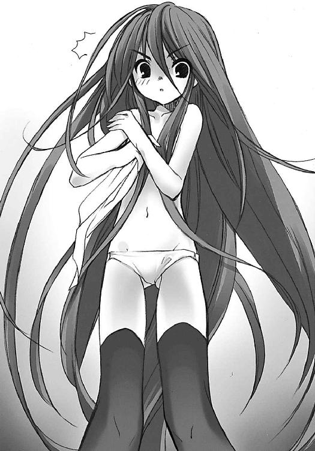
「......」
艶やかな黒髪の中に浮かぶ、小さな、一点の曇りもない白磁のような肢体。
未成熟ゆえにあからさまな膨らみのない、ただ流麗な曲線によって描かれる、清冽の姿。
悠二が、自分の存在が過去最大の危機にあることも忘れて見入るほどの。
（......きれ
真夜中、奇跡的にボコボコにされただけで済んだらしい悠二は、痛みで目を覚ました。
「......」
カーテン越しに入る街灯だけを明かりとする薄暗さの中、まだ逆さまの視界をベッドの方に動かす。毛布に包まった、小さな膨らみが見えた。
ところで、
そのベッドの前の床に、抜き身の大太刀『贄殿遮那』が突き立っている。
このあからさまな意思表示を、転げ落ちたときのままの格好で眺めつつ、悠二は呟く。
「......今度は、斬っても治してくれないんだろうな」
「当然だ」
どこからか、アラストールがフゴフゴと答えた。
翌日、明けてみると空は快晴。
部屋にも、カーテン越しに澄んだ朝の光が差し込んでいた。
あるいは明方の襲撃があるのでは、とアラストールは枕の下で警戒していたが、結局、何事も起きず何者も訪れず、シャナの熟睡は妨げられることはなかった。
一方、間に『贄殿遮那』を置いた反対側の壁際。その床で、真夜中に寝直した悠二が、蓑虫のように毛布に包まって寝ている。
その彼の、タオルケットを丸めた枕もとで突然、目覚し時計のアラーム音が鳴り響いた。
わずか半秒で悠二は音源を察知、見もせずにアラームのスイッチを叩き、黙らせる。
「......ん......」
重い瞼を開けて最初に見る物は、金属バット。別に、普段からこんな物を抱いて寝る趣味があるわけではない。単なる用心、あるいは無駄な手立ての一環である。もちろん、用心している相手は、ベッドの中の少女ではない。
悠二はむっくりと半身を起こした。伸びをしようとすると、体の節々が痛む。
「あ、っ痛ちち......」
板敷きの床に寝ていたせいか、どうも体が妙な感じにこっている。その代わり、というべきか、昨日ボコボコにされた所は、もう痛まない。シャナが手加減してくれていたのか、それとも単に、自分の若い回復力によるものか......まあ、まず後者だろうが。
悠二は、ベッドの小さな膨らみに目をやる。目覚ましの音が半秒で消えたせいか、起きる気配もなく、微かな寝息を立てている。その手前に突き立つ剣呑な大太刀がなければ、平和な光景に見えなくもない。
ふと、その大太刀で思い出したように、悠二は自分の胸を見る。
なんということもなく、見る。
灯火が、現れた。
「............はあ」
昨日とは別の意味を持つ、ため息だった。
絶望や恐怖が、ほとんど実感を持てないほどに薄れている。
それに気付いたための、ため息だった。
（人間は慣れる動物だっていうけど、こんな状況でもそうだってのは、なんだか凄いな......それとも、今までと同じ日々を過ごしたいって執着の現れなのかな）
シャナを起こさないよう、静かに立って、ベランダに通じるガラス戸を開ける。
狭いベランダに出て、外を眺める。
朝の清涼な空気が肺を満たす。
家の前の道を、通勤、通学の自転車が通り過ぎてゆく。
その道の端が、昨日の雨の名残に黒く湿っている。
空は、広く青い。
全て、いつもと変わらない、爽やかな朝だった。
（......変わったのは、僕......ここにいて、これを感じる僕、か......）
今、体に感じているものが、存在の消滅などという、言葉や理屈だけでしかとらえていないものを、いかにも絵空事のように思わせてしまう。なんとも、現金な話ではある。
後ろのベッドの中で、その感じるものの一つ、痛さの原因が、少しむずかった声をあげる。
足下を見ると、昨晩、屋根に登るのに使った梯子が畳んで寝かせてあった。
悠二は昨夜の、シャナやアラストールとのやり取りを思い浮かべた......多少、不純な映像も混じっている気がするが、そのこと自体は大して重要ではない、はずだ、と弁解する。
（ああやって、少し話をして、少し笑って、少し騒いで......その程度のことで......）
自分は、消滅の絶望と恐怖を忘れてしまえるのだろうか。
自身の存在そのものの問題を。
（......忘れる？）
その言葉には、どこか違和感があった。
また少し考えてみるが、その違和感の意味はよく分からない。
（まあ、そう簡単に答えが出るものでもないか）
と思い、悠二は笑った。
そして、笑える自分を自覚して、驚いた。
そんな、重いのか軽いのかはっきりしない気持ちのまま、ベッドに声をかける......恐る恐る。
「おーい......シャナ、そろそろ学校に行く時間、だぞ......？」
ぱたんと布団が跳ね上げられて、シャナが半身を起こした。
昨日のことを思い出して、慌てて目を伏せようとした悠二は、そのシャナがジャージを着ているのに気が付いた（つまり、しっかり見ていた）。自分が言っておいた通りにしてくれたらしい。ぶかぶかなので、ほとんど首元から埋もれるような格好だ。
安堵半分、残念半分の悠二に、シャナが顔を向ける。その寝ぼけ顔は、見掛けの年齢並みに可愛い。長い髪も、後ろで簡単に一まとめに縛っていた。
「......ん〜、言われなくても分かって......!?」
眠たげな声で悠二に答え、その顔を見たシャナが突然、驚愕に目を見開いた。
「な、なんだよ？」
悠二は慌てて自分の体を見回すが、胸の内の忌々しい灯も含めて、特別変わった様子はない。
そうやっている間に、シャナは再び布団の中に潜り込んでいた。
少し待ったが、出てくる気配が無い。さっきの様子だと、別に昨日のことを怒っているわけでもなさそうだが。
「......勝手に用意して出かけるからな？ 見つからないように出てってくれよ」
悠二は声をかけて、部屋を出ていく。
布団の中で、シャナは珍しく困惑の表情を作っていた。
「......ねえ、アラストール、あれ、どういうこと？」
枕の下から、アラストールも深刻な声で答えた。
「うむ、気付いたか」
「どうして？ 考えられない」
「中にある宝具の力、だろうな」
アラストールは、実は今の悠二の様子から、一つの宝具の存在に思い当たっていた。
封絶の中でも動ける、奇妙な〝ミステス〟坂井悠二。
なるほど、もしその中に入っている物が、あれだとしたら、この奇妙さにも、さっきの様子にも説明がつく。
しかし、それは同時にあり得ない筈の物だった。
〝紅世の徒〟秘宝の中の秘宝。
『零時迷子』。
もし、そうだとしたら、絶対にフリアグネには渡すわけにはいかない。
そしてシャナも、今の悠二の様子に、一つの気持ちを芽生えさせていた。
もしかしたら、と刹那、胸をよぎっただけの、無自覚な、小さな、気持ち。
昨日、手渡されたコーヒーのような、ほんの少しの、温かさ。
３ シャナ
シャナにとっての二日目の授業は、前日と同様、突っかかった教師の壮絶な自爆という、一種滑稽でさえある残酷ショーの様相を呈している。
教師は恐れ、生徒は慄き、という状況が三時間目まで続いて、しかし四時間目で一方に大逆転が起こった。
四時間目の授業は体育だった。
その授業を担当した体育教師（男性・三十三・独身）は、最近、平井ゆかりという生徒が騒ぎを起こしている、と同僚たちから聞いたらしい。
授業を受け始めてわずか一月程ながら、陰険かつ横柄、しかも女生徒をいやらしい目で見ることで、すでに悪評が定着しているこの体育教師は、生意気な生徒を許容できないタイプでもあった。彼は、自分の授業でその平井とやらをへこませてやろう、と画策した。
彼は、いきなりクラス全員に無制限のランニングをするよう言った。
この一月の記録を見れば、平井ゆかりは特別優秀な成績を残しているわけでもない。すぐに根を上げるだろう、と思った。ヘバっても、しばらくは無理矢理走らせてやる、とサディスティックな愉悦を覚えつつ、体育教師は不満顔の生徒たちを延々、走らせた。
ところが予想に反して、平井ゆかりは涼しい顔で走り続ける。
小学生にしか見えない、体操服に着られているような小柄な少女が、授業時間の半ばを超えても、全く同じペースで足を動かしている。
体育教師は焦れたが、そもそも彼女をいじめることが目的なのだから、彼女がヘバるまではランニングを止めることができない。フレイムヘイズと持久力を競わされる羽目になった、悠二始めクラスメートたちこそ、いい迷惑だった。
やがて、あまり体の丈夫でない女生徒が一人、トラック上でうずくまった。
苛立ちから、体育教師が怒鳴り声を上げる。
「こらー、吉田ぁ！ なにをサボっとるか!!」
「吉田さん！」
「一美！」
息を切らして胸を押さえる、吉田という女生徒に、クラスメートたちが駆け寄った。
普段から貧血などをよく起こしている、こういうことになるのは分かりきっていたのに、という生徒たちの批難の視線を、体育教師は全く感じることができない。
「なにを勝手に集まっとる、貴様ら！」
「先生、一美を休ませて上げてください」
と吉田の背をさする女生徒が訴えたが、体育教師は、標的である平井ゆかりに、吉田の不調にも動じることなく走り続ける姿を見せつけられて（と彼は感じた）気が立っていた。
「うるさい！ そう言ってサボってたら、いつまでたっても体力がつかんだろうが！ 立て！」
そのとき、ふと誰かが漏らした。
「だいたい、なんでいきなり持久走なんだよ」
無能な小人物というのは、自分の痛いところを突かれると逆上する。
体育教師は何を思ったか、いきなり吉田の手を掴み、無理矢理引き起こした。
「貴様がサボっとるから、みな足を止めてるだろうが！ 立て！」
「......っ」
咽喉の動きだけで息をしているような吉田が、声にならない悲鳴をあげた。
驚いた生徒たちが抗議する、ついでに悠二が『出る足』を制止する、
その前に、
体育教師が思い切り尻を蹴飛ばされ、すっとんだ。
不意の出来事に一瞬、呆然とした生徒たちが我に返って見た先に、平井ゆかりことシャナが、小さな運動靴の底を見せて立っていた。
息も乱れず、汗もせいぜい一雫の、無駄なく引き締まった体躯。
後ろで一つにまとめられた、長く艶やかな黒髪が、蹴りの余韻のようにふわりと舞っていた。
（......あちゃー、やった......！）
制止の届かなかった悠二が頭を抱えた。
シャナが体育教師を蹴り飛ばした理由の大半は、たまたま自分の走行ライン上を体育教師がふさいでいたということだが、それでも、吉田をしっかり片手で受け止めてもいる。
「さっきからずっと走るだけ......これ、一体なんの『授業』なわけ？」
一応、どんな内容のものなのか、試していたらしい。自分の肩にもたれかかってヒュウヒュウ息を継いでいる吉田を見て、眉根を寄せる。
（どうせ、可愛そう、とかじゃなくて、非効率的だ、とか思ってるんだろうな）
と悠二は、その内心を正確に察している。
案の定、シャナは言った。
「馬鹿な訓練。ただむやみに体を動かすだけなんて、疲れるだけでなんの意味もないわ」
「き、貴様......!!」
土まみれの顔を拭って、体育教師は起き上がる。汚れた顔は、怒りで真っ赤になっていた。
もちろんシャナは、そんな憤怒には毛ほどの感銘も受けていない。
「おまえ、この授業の意味を説明しなさい」
と問い質すだけだ。
（やれやれ、やっぱり、こうなるのか）
「......シャナ」
騒動を確信した悠二が小さく声をかけると、シャナは、肩に持たせかけていた吉田を放って寄越した。
悠二は受け取った少女の華奢な体と弱々しい息づかいに驚いて、思わずその顔を覗き込む。
「だ、大丈夫？」
吉田は青ざめた顔を、それでもわずかに頷かせた。
それほど深刻な状態でもなさそうだ、と悠二は安堵して、すぐ他の女生徒に吉田を預ける。
彼らの背後では、体育教師が激昂した声を張り上げていた。
「貴様、教師を足蹴りにしたな！」
体育教師は、シャナの話になど耳を貸さない。彼女に詰め寄り、『平井ゆかりには通じない』と同僚から散々忠告されたはずの、権威による攻撃を始める。
「この不良が!! 教師に暴力をふるいおって！ 停学、いや退学にしてやるぞ!!」
猛り狂う大柄な体育教師の前で、腕組みして平然と立つ小柄なシャナは、一言。
「説明さえできないの？」
「分かってるな！ 問題だ、これは問題行為なんだぞ!!」
話が全く噛み合わない。
体育教師が話をしようとしていないのだから当然ではあった。この男は、自分の感情をぶちまけることしか頭に無いのだった。
彼の周りにいる生徒たちの方は無論、その狂態に、完全にシラケている。
そしてとうとう、
（目障りな奴）
す、とシャナの眉が平坦になった。彼女の戦闘開始を告げる表情だ、と一目で察知した悠二は、我ながら最高と思えるタイミングで叫びを上げていた。
「蹴りだ！」
シャナが、動く、その初っ端に受けた、妙な指示。
「？」
やめろ、と言われていたら、シャナは無視して、目の前で吠える無能者の顔面に拳を叩き込んでいただろう。しかし、そうでは無かったので、彼女は悠二の指示通りに気持ちよく、無能者を蹴り飛ばした。
彼女にしてみれば軽く脚を出した程度の、しかし常人にはとんでもない威力の蹴りが、ギャグマンガのように体育教師をすっとばした。
体育教師はきれいな放物線を描ききって、地面に激突した。ぎぴ、と変な叫びが上がる。
「あ〜あ......」
悠二は自分の指示ながら、その蹴りの無茶な威力にため息をついた。クラスメートたちの注視の中、一度頭を掻いてから大きく息を吸い、わざとらしく声を張り上げる。
「先生、トラックの中に突然入ってきたら危ないでしょう！」
シャナが怪訝な顔をする。
メガネマン池が、さすがに付き合いの長い友人らしく、最初に悠二の意図を理解した。同じく大声で、周りに聞かせるように叫ぶ。
「蹴っ飛ばされても、仕様がありませんね！」
佐藤が、にっと笑って、周りのクラスメートを煽る手つきで両手を振り上げ、後に続く。
「だよなー！ 平井ちゃん、足速いから！」
それと顔を見合わせた田中が、最初に声を張り上げる。
「そりゃ、急にゃあ、止まれねえわな!!」
ようやく察したクラスメートたちが、一斉に声を上げ始めた。
悠二や池と肩を並べて、佐藤や田中と声を合わせて、歓声にも似た大騒ぎをトラック上に巻き起こす。
「僕、見てましたよ、先生が平井さんの前に飛び出すところ！」
「私も！」
「あはは、センセ、カワイソ！」
「俺だって目がかすんでよ、前がよく見えなかったって！」
「交通事故みたいなもんだよな！」
この、自分に全く分のない喧騒の中、それでも体育教師が、
「......き、きさま、ら......」
と、這いつくばった姿勢の影から、呪詛のような声を漏らす。
騒ぎに隠れるように、悠二は傍らのシャナに体を傾けて、密かに訊く。
「脅しとか、できる？」
なんだか自分もシャナに影響されて、いい性格になってきてるなあ、と悠二は責任を転嫁してみたりする。
同じく騒ぎに紛れて、体操服の内側に隠れるアラストールが、こっそりと言った。
「そうだな、金を得るときによくやる方法でどうだ」
「そーね、たしかに、威嚇で黙りそうな顔してる」
なんだか普段の生活が想像できそうな物騒なやり取りを経て、シャナが再び歩き出す。
それだけの動作に、クラスメートが再び静まり返る。
体育教師は、突然訪れた静寂の中に、足音だけが残っていると気付いて、蒼白になった。
「ちょうど、トラックの上にいるね」
戦慄の台詞。
「ひっ、ひあ......」
体育教師が逃げ出そうともがいた、その鼻先に、ズドン、と脚が踏み下ろされた。地に付けた腹をも震わせる、その一踏みが、再び上げられる。
目の前、しっかりと固められたトラックが、靴底型の穴を五センチからの深さ、空けていた。
驚愕と恐怖に目を剥く体育教師に、悠二が最後の駄目を押す。
「先生、これからも気をつけないと、危ないですよ」
「......分かった？」
シャナがとびきり凶悪な笑みとともに言い、体育教師は何度も全力で頷いた。
悠二が付け足すように、にこやかに訊く。
「もう、解散してもいいですよね？」
体育教師はさらにぶんぶん頷いて、
「あ、あとは、じじ自習だ！」
と言い捨てると、腰砕けに走って逃げ出した。
今度こそ、生徒たちの間で完全無欠の歓声が爆発した。
そんな中、悠二は傍らを見て、
「素早いなあ......っと待った待った！ 追わなくていいって！」
走り出そうとするシャナを慌てて引き止める。
「なんでよ、敵は潰せる内に潰し......!?」
その二人を、クラスメートが押し包んだ。
意味もなく叩いたり、興奮した声で誉めそやしたり、嫌みなく冷やかしたりと、もみくちゃにされる。ともに過ごしたのが一月だけというクラスメートたちは、このとき初めて同じ気持ちで、大騒ぎに騒いでいた。
悠二は嬉しかったり驚いたり、ついでにシャナの反応に慄いたりしながら、体中に打ち込まれる平手打ちに悲鳴を上げる。
シャナは、目を白黒させて、彼女を押し包む歓声と好意の触れ合いに翻弄されていた。
この中、池は一度だけ悠二の頭を軽くはたくと、すぐ人の輪から外れた。同じく悠二の背中を......こっちは思い切りぶっ叩いていた田中を呼ぶ。
「おーい田中ぁ、吉田さんを担いでくれ」
「ほいきた」
別の女生徒に膝枕されている吉田（佐藤が、それを羨ましげに見ながら、吉田の顔をハンカチで扇いでやっている）を、太い腕で軽く担ぎ上げ、保健室へと運んでいく。
そんなこんなの騒ぎの後、
残った時間を、悠二たちはのんびりと、春の芝に寝転んで過ごした。
というわけで、平井ゆかりことシャナは、本人の意図する所によらず、クラスメートたちから人気を集めることとなった。
その人気がどれくらいかというと、着替える際に他の女子が、芝に寝転んで草だらけになった彼女の髪に皆で櫛を通してくれるくらい（彼女の身繕いの無頓着さを見かねたらしい）。......残念ながら、悠二はその心温まりつつもヒヤヒヤものな光景を見ることはできなかったが。幸いシャナも、何かを言い立てるでもなく、おとなしくしていたらしい。
とはいえ、いきなりそれで完全に打ち解けられるほど、シャナも近付きやすくはない。とりあえず『無法者』から『用心棒の先生』にランクアップした、という程度だ。
それでも今日は、体育の授業直後の昼休みになっても、昨日ほど露骨に出て行く者はいなくなっていた。クラスメートは半分方、教室に残っている。
悠二としては、本意なのか不本意なのか......彼女をクラスに馴染ませる、という行為にどれほどの意味があるのか、よく分からない。
それでも、昨日一昨日のことで僕にクソ度胸が付いたこと、それだけは確かみたいだ、巨大人形や首玉、カードの嵐や爆発の後じゃ、威張るだけの体育教師なんか薮蚊一匹ほどにも恐怖を感じない、いやいや、危ない考えを持ちすぎだ、後がないからって、投げやりになっちゃ駄目だ、残った時間を有意義に使わないと、でもそれがなんになるんだ......
徒然考えてから、改めて教室内に、目線だけを泳がす。
（まあ、寂しく取り残されるよりはいいか）
結論の出ない考え事は止めて、悠二は今ある状況を素直に受け入れることにした。
昨日と同じ、コンビニおにぎりにかぶりつく。ちなみに、彼がいつもコンビニおにぎりなのは、母に弁当を作ってもらうことが格好悪い、という少年的な見栄からだ。
「それで、今日も夕方まで居残りするのか？ 今日の授業はそこまでないからいいけど」
パリパリと海苔を噛み砕きつつ、隣席に声をかける。
「ううん、夕刻までにここを出るわ。相手がちょっとでかいから、せめてこっちに有利な場所で戦わないと」
シャナも相変わらず、メロンパンを美味しそうに食べている。食料袋は、やはり満杯だ。
この体のどこに入るんだ、と悠二は、片手で抱えられそうな細い腰を見て思う。
「......どこ見てんのよ？」
シャナに睨まれて、悠二は慌てて目をそらした。
「え、いや、別に......それで、有利な場所なんてあるのか？」
「とにかく、他に人間がいないとこ。おまえってば、放っとくと、すぐに変な真似して邪魔するから」
「そうか、ありがとう」
悠二は素直に感謝の言葉をかけた。
「うるさいうるさいうるさい。私のやりたいようにやる、って言ってるだけよ」
シャナは乱暴に、メロンパン最後の一切れを詰め込む。続いて、今度は子供用の、甘いコーヒー飲料のパックを袋から取り出した。なかなか開かない口を、いじりまわしつつ言う。
「せめて、おまえの中身がなんだか分かれば、こっちにもやりようがあるんだけど」
「そんな妙なものが僕の中に？」
悠二はこうして日常の中にいると、外れた世界のことを、つい忘れそうになる。
自分が、故人の代替物〝トーチ〟であり、
同時に〝紅世の徒〟の宝具を身の内に宿した蔵〝ミステス〟であることを。
あるいは、無意識に忘れようとしているのかもしれない。
それを許さないように、外れた世界の証・シャナが、確たる存在感を持って目の前にいる。
「うん。なんだか厄介な物っぽいのよね、アラストール？」
アラストールが珍しく、返答を遅らせた。
「......うむ。その中身を確かめるには、まずもって貴様を消さねばならん」
パックの口と格闘するシャナはそれに気付かず、ただその内容を補足する。
「でも、宝具の質が分からないのに開けたら、何が起こるか分からないの。前に、それでひどい目にあったこともあるし」
「やれやれ、僕の安全は、その程度のものなのか」
「うん、その程度のもの」
シャナはわざと意地悪く、事実を突きつけるつもりで言った。
しかし悠二は、これに平然と答えた。答えることが、できるようになっていた。
「ふうん、そうか」
「......おまえ、最初みたいに、生き死にをぐちゃぐちゃ言わなくなったわね」
「ん？ いや、今でも自分が少しずつ消滅に近付いてることは、恐いと思ってるよ。でも、それを言っても仕様がないし」
「......」
シャナは、悠二の平然とし過ぎた様子が、なぜか癇にさわった。
この〝ミステス〟は道具。なら何をどう思っていようと構わないはず。それがなぜ癇にさわるのか。何かを期待しているのか。それを裏切られるのが嫌なのか。
ふと湧いたそれらの思いと、そんなことを考える自分への言い知れない腹立ちとが、胸の中で渦巻く。思わず、責めるような声を出していた。
「諦めたの？」
これにも、落ち着いた答えが返ってきた。
「さあ。実はよく分からない。でも、あんたやアラストールがいてくれるのは、すごくありがたくて嬉しい......それだけは、はっきりと分かるよ」
「......？」
意外すぎる言葉に、シャナは不可解なものを見るような目で、悠二を見た。
悠二の顔にはまた、静かな微笑がある。
「全てを分かってもらえる相手がいるってのは、それだけで結構支えになるものさ」
「私たちが支えですって？」
シャナはせせら笑って返した。
何かを期待されている、それは自分がさっき思ったことと、どこか同じ......互いに分を越えた匂いを持っていると気付いて、急に突き放したくなったのだ。
「おまえに終わりを運んできた者たちを、支えにするって言うの？」
「本当のことを教えてくれただけだろ。あんたが僕を殺したわけじゃない」
悠二は、これだけは真剣に否定した。
「ふん、同じことでしょ」
「いや、違うね」
「同じよ」
「違うね」
「同じ」
「違う」
言い合う内に、二人は真正面から睨み合っていた。
「......」
「......」
静かな、しかし火花が散りそうなこの対決に、遠慮がちに、小さく、声がかけられた。
「......あ、あの......」
二人が振り向いた先に、控えめな印象の少女が、真っ赤になった顔を伏せて立っていた。
ほんの少し前にトラック上で倒れ、シャナが（結果的に）助けたクラスメート、吉田一美だった。保健室から戻ってきたらしい。顔色もそれほど悪くはなさそうだった。
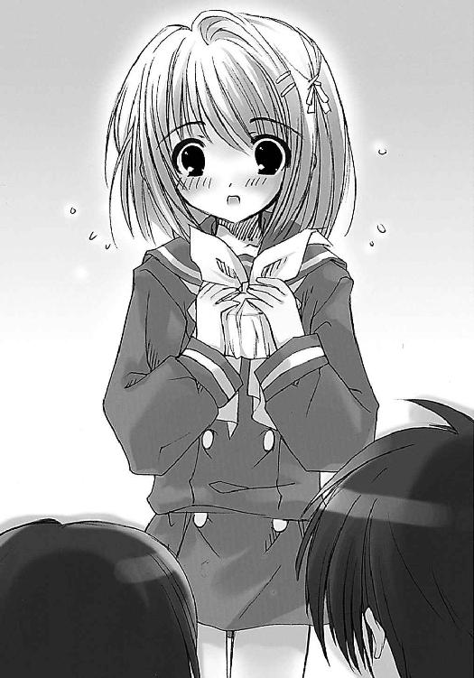
「吉田さん？」
意外な人物の登場に、悠二は少し驚く。
シャナは、存在の残滓からその少女の記憶を拾い上げる。平井ゆかりの友人だったらしい。さして親しくはなかったようだが。
「その、ゆ、ゆかりちゃん、さっき、体育の時間......あ、ありがとう」
吉田の声は小さすぎ、しかも途切れ途切れなので、聞き取りにくいことこの上ない。
シャナは、まだ機嫌を直していない。悠二との言い合いを邪魔された事のやっかみも手伝って、ことさら無情に訊く。
「なんか用？」
「ば、馬鹿、お礼言ってるんだから、どういたしまして、くらい言えよ」
「なにが馬鹿よ」
シャナは、他でもない悠二の助け舟に、むっとなった。吉田とは正反対の、強い声で言う。
「私は、私の邪魔する奴を片付けただけよ」
「あ〜、まあ、そうなんだけど」
この少女の容赦のなさを悠二は分かっているつもりだが、それでも今の物言いが、いつも以上にキツくなっているのが分かる。
そうでなくとも、吉田は気が弱い。今も、シャナの言葉に小さくなっている。
ほとんど自分との言い合いのとばっちりを受けた形の彼女が、悠二は気の毒になった。どう慰めようか、と思って彼女を見れば、その前にそろえた手の中に、片方の掌でも隠せるほどに小さな弁当箱がある。
「あ、弁当......一緒に食べる？」
「え、は、はい......！」
言われた吉田が、パッと顔をほころばせた。野辺の小花に雲間の日が当たったような、ふと綺麗なものを見つけさせられたような気持ちにさせられる、そんな微笑みだった。
悠二は、この微笑みに、ほっとさせられた。
（シャナとはえらい違いだな）
フレイムヘイズたるシャナの（馬鹿にするとき以外の）笑みは、まさしく炎のような、強烈に自分から輝く力そのもの......
（って、なに比べてんだ、僕は）
意味も無く照れた悠二は、誤魔化すように、吉田のために空いた席を寄せてやる。
「シャ......ゴホン、平井さん、なにが困るわけでもなし、一緒に食べて話するくらいいいだろ」
実は悠二は、同じクラスになってから一月になるが、彼女とはほとんど話をしたことがない。さっきの騒動を含めて、二、三回あるかないかだ。いつも自分の席でおとなしく本を読んでいる子、という程度の印象しかない。
それでも、女の子と仲良くするというのは悪い気分ではない。
（吉田さんって、よく見れば可愛いしね）
悠二は少年らしい健全かつ邪な精神の元、頬を緩ませる。
シャナの方は、
（さっきのことをきっかけに、〝存在の力〟が薄れて遠ざかってた平井ゆかりと、また仲良くしようとしてるのかな）
と、内心で冷静に判断し、そのついでのようにぶっきらぼうな声で返す。
「好きにすれば？」
もう少し他に言葉があるだろ、という悠二のぼやき並みに小さく、吉田が答える。
「あ、ありがとう......」
そこに、
「お〜い......」
と聞き慣れた声がかかる。
吉田の後ろの方で、声をかけた池を始め、佐藤や田中が、恐る恐る手をあげている。今まで事態を静観していたらしい。
悠二は苦笑して手招きした。
この三人が加わり、にわかに机を寄せた昼食会が始まる。
田中が大声で話を始め、佐藤がまぜっかえし、池が締めて悠二が補足する。吉田はときどき小さく笑って、しかし会話には加わらず、弁当をつつく。
シャナはそんな彼らをよそに、自分の食料袋から、あんまん、饅頭、チョコレートなどを取り出して黙々と食べ続けている。しばらくして悠二が会話から外れると、その袖を引っ張って顔を寄せ、文句をつけた。
「アラストールと話しにくい」
「いいだろ別に。たまには普通の人と接してみろよ」
「なんでそんな余計なこと」
「いいから。さっき取り囲まれたときだって、まんざらでもなかっただろ？」
「わけわかんなかっただけよ」
「そういうところを直すためにも、やっぱ接しとくべきだって」
「直す？ どういう意味よ」
そうやって顔を寄せてひそひそ言い合う二人を見て、吉田が初めて口を開いた。
「......二人とも、な、仲、いいんですね」
「そ、そんなことないよ！」
その窺うような視線と質問に、手を振って必死に否定する悠二だが、池たちは微妙な羨望をこめて、口々に言う。
「いや、いいぞ」
「うんうん、いいな」
「いいって、絶対！」
昨日より早く訪れた放課後。
悠二は、池たちに寄り道を誘われない内にと、シャナとともに脱兎の如き勢いで教室を出て行った。
その駆け去る二人の後ろ姿を、教室の戸から顔を出した田中と佐藤が、呆れ顔で見送る。
「うむむ、いきなり二人して逃げ出すとは。さてはデートか？ 許せん」
「許す許さんはともかく、あの平井ちゃんと、ね。やっぱマニアックな趣味だよなあ」
言って頷き合う二人を寄り道に誘おうと、池が席を立つ。と、その前で、吉田がきょろきょろと、あたりを見回している。
「吉田さん、平井さんなら坂井と一緒に帰ったよ」
「え......ゆかりちゃんと......？」
池は、会話の主語が、微妙に食い違ったことに気が付いた。一瞬、宙を仰いでから、吉田に提案する。
「あのさ、吉田さん......」
その頃、学校から離れた悠二とシャナは、学校前から御崎大橋へと続く、大通りの雑踏に混じっていた。
日はまだ高く、夕方までは間がある。
「こりゃ、絶対に池たちは誤解してるだろうな」
悠二は、傍らを大股に歩くシャナに合わせて、やや早足になっている。
「なにを？」
「いや、こっちの話」
「？」
人のいない場所に、といいながら、何故かシャナの足は市街地へと向けられていた。
二人は、学校のある住宅地と、その対岸にビルを林立させる市街地を繋ぐ、御崎大橋へと差し掛かる。
悠二は、最初の夜のように、トーチのあるなしを見渡していた。
両端に広い歩道のつけられた大鉄橋には、やはり胸に灯を抱くトーチが幾人も行き来している。最初意識していたときよりも簡単に、はっきりと見えた。感覚を研ぎ澄ますコツが掴めてきたのか、灯自体は小さいのに、距離があってもそれと分かる。
そんな気の滅入る眺めの中、悠二は口を開く。
「そういえば、一つ、訊きたかったんだけど」
「なに」
「こっちで〝存在の力〟を喰ってるのは、世界に歪みなんか出ても構わないっていう、乱暴な連中だったよな。なんで几帳面に、喰い滓をトーチに変えたりするんだ？」
歩く二人の傍らをまた一人、自分たちと同じ年頃の女の子が通り過ぎる。かなり薄い、消えそうな灯を胸の内に宿して。
「......トーチは、世界の空白が閉じる衝撃を和らげるためのもの、だっけ？ そんな回りくどいことしなくても、とにかくたくさん喰って力を蓄えれば、フレイムヘイズなんか気にしなくてもいいんじゃ？」
シャナは首を振った。
「私たちフレイムヘイズは、世界の歪みとか、力を〝自在〟に振るうのを感じて、〝徒〟を追うの。無闇に喰って、世界のバランスを大きく崩すような真似をする奴がいたら、世界中からフレイムヘイズが群がり寄ってきて、そいつを狩り出しにかかるわ」
その胸元から、アラストールが続ける。雑踏に紛れているので、人の注意は引かない。
「フリアグネほどの〝王〟ともなれば、もちろん並みの〝徒〟とは比べ物にならない力を持っているが、あいにくと我を始め、フレイムヘイズに力を与えている〝徒〟、その全員が〝王〟なのだ。戦えば、まず無事では済まん。単純な力の強さでは推し量れない者たちもいる」
再び、シャナ。
「乱獲者たちは普通、そんな厄介でなんの得にもならないフレイムヘイズたちと戦うのを、できるだけ避けるの。そのためなら、トーチを作る手間くらいは取るでしょうね」
「ふうん、なるほど......それで、あのフリアグネをやっつけるとして、どうやって見つけるんだ？ あいつ、有名なんだったら、他のフレイムヘイズと情報を交換して、手の内や狙いを割り出すとかしてみたら......」
「ああ、それ無理」
シャナは悠二の提案を簡単に却下した。ひょい、と鉄橋の手すりの上に飛び乗る。
「わっ、危な！ ......くないのか......それで、なんだって？」
周囲から向けられる好奇の視線の中、シャナは片方に鞄を持った手を横一杯に広げて、軽業のように平然と歩く。
「無理って言ったの。偶然に出会う以外で、連絡なんか取り合ったことなんかないんだもの」
「はあ？」
細い手すりの上で踏まれるステップには、まるで踊っているような躍動感がある。
その弾む毎に慌てる悠二の様子がなんだか面白くて、シャナは、わざと大きく跳んだりしてみる。
「っと......フレイムヘイズはそれぞれの事情と理由で戦ってるし、自分の力だけを頼むような奴ばかりだから、群れることには向いてないの」
その弾む様子に寄せられる好奇の目線に真っ赤になっていた悠二は、うん、と頷く。
「それはよく分かる」
「なんか言った？」
「いやなんでも」
「......とにかく、世界をうろついていれば、〝徒〟の喰い滓であるトーチは自然と目に入るものなの。灯の燃え具合で新しいか古いかは分かるし、あとはその付近を見張っていればいい」
「意外にアバウトなんだなあ......もっとはっきりと相手を捉えられないのか？」
「だいたいの感覚で、いるらしい、ってことは分かるし、近くに来たり封絶したりすれば、かなり細かく場所を特定できる。おまえを最初に見つけたときも、そう。急いで飛び込んだら、間抜けな顔したトーチがあわあわ言ってて、思わず笑っちゃったわ」
いかにも小馬鹿にした様子で言うシャナに、悠二はしぶとく反撃する。
「......スカート」
目線ギリギリを、ひらひら上下に揺れていたその奥から蹴りが飛んできて、悠二の視界が暗転する。鼻を押さえる内に気が付けば、シャナは手すりから下りて、横に立っている。
「連中が喰うために封絶すれば、そこに割って入る。向こうが噛み付いて来たら、それを倒す。簡単なもんよ」
「つまり、フレイムヘイズは個々人で、いきあたりばったりに戦ってるのか」
「そんなとこ。〝紅世の徒〟の理屈で言えば、この世に潜り込んで喰うのも勝手なら、それを追って討ち滅ぼすのも勝手ってこと」
アラストールが、むっとした声で言う。
「勝手などと気軽に言うな。我がこの世に渡り来て、愚かとはいえ同胞を討ち滅ぼすような真似をしているのは、両界のバランスを憂える大儀あってのことだ」
「はいはい、ちゃんと分かってるってば」
シャナは、これには気持ちよく笑って答えた。アラストールに対するときは、こういう可愛げのある顔もするんだけどなあ、と鼻をさする悠二は不公平なものを感じる。
「でも、最初来たときから思ってたんだけど......この街って妙なのよね」
シャナが目の前、のしかかるようにそびえる市街のビル群を見上げる。
幾つかの路線を連絡し、大きなバスターミナルも含む御崎市駅の駅ビルを中心に、市役所やオフィス街、デパート群、地下を含む繁華街などが二人の前に連なり建っている。
悠二も見上げて訊く。
「妙って、なにが」
言われれば、なんでもそう思えそうだった。
今まで気にかけたことも無かった、当たり前の光景。しかしその薄皮の向こうには、どこまでも深く遠く広がっている、別の、外れた世界があるのではないか。
「あのフリアグネ一人が普通に喰った結果としては、トーチの数が多すぎるのよ」
シャナは、悠二が自分たちの参考になるような意見を、思わぬ観点から出すかもしれない、という期待を込めて言った。自分の使命に関することだけに、この期待からは学校でのような苛立ちは生まれない。
「燃え方も、昨日喰われたような新しいのから、消える寸前の古い奴まで、はっきり言って多過ぎだわ。この街に定住でもしていなければ、ここまでにはならないはずなんだけど」
「......それが？」
その頼りない答えに、シャナはがっかりした。
「察しが悪いわね」
やはり勝手に期待して勝手に失望して......その自分らしくない、他人を気にかけているという事実に、シャナは今さらながら、むかっ腹を立てた。それが自分の勝手だと分かってはいても、声に不機嫌の色が落ちるのは隠せない。
「力を、喰って使って遊ぶのなら、うろつけばいいわけだし、普通〝徒〟はそうするの。これだけの数のトーチが、少しずつにでも一つ所で消えたら、世界の歪みも大きなものになる。フリアグネは、フレイムヘイズに発見されるようなリスクをわざわざ負っている......ということは、この街に何かあるか、この街で何かをしようとしているかのどちらかってこと」
「なにかって、なに」
もう少し他になにか言えないの、と思いつつ、ぶっきらぼうに返す。
「そんなの、分かるわけないじゃない。あのフリアグネって奴、たくさん宝具を持ってるそうだから、それが関係してるんでしょ」
なぜかいきなりシャナが不機嫌になったので、悠二は最低限のことだけを訊いた。
「......で、結局どうするつもりなんだ？」
「日暮れ前まではここらをうろついて、それから先はおまえの家で待ち構える、ってとこ」
「なんだ、やっぱり向こうのアクション待ちってことか」
悠二も、無自覚に鋭いことを言う。
シャナは、さらにむっときて、黙った。
悠二はまたビル街を、人探しにも物探しも向かない場所を眺めた。当たり前の光景、その薄皮の向こう、外れた世界のことを想像する。
「......こうやってる間にも、誰かが喰われたり、消えて忘れ去られたりしてるのかな」
いまさらの話題を、シャナは簡単に肯定した。
「そうよ。世界中で、昔からずっと」
理不尽な仕返しのつもりで言ってみる。
「これがおまえの知った『本当のこと』......恐い？」
二人の傍らを、また、消えかけの灯を宿した女性が通り過ぎていった。二十過ぎくらいの、赤いスーツを着た美人。最も輝いて過ごせる日々の中にあるはずの人。
でも、もう、すぐにいなくなる。
これが、本当のこと。
自分の、避け得ない未来の姿。
悠二はそのことを思い、しかしなぜか静かな気持ちで答える。
「言ったろ。もちろん、恐いよ。でも、そうだな......どこか、すっとしたんだ」
その不思議な答えに、思わずシャナは、今までの不機嫌を忘れて、悠二の顔を見上げていた。
悠二が気付いて見返し、少し笑う。自然な、力の抜けた笑み。
シャナは慌てて視線を逸らした。ずんずんと歩調も荒く歩き出す。
「......行くわよ！」
「どこへ？」
「分かるわけないでしょ！」
悠二は全く、わけが分からない。
「......あのさ、さっきから、なにを怒ってるんだ？」
「怒ってない！」
言えるわけがなかった。
その顔は、少し良かった、などと。
そういう事を考えてしまった自分に、困ったり戸惑ったり......とにかく怒って見せる。それ以外にやりようを知らない、接し方が分からない。
「やっぱり怒ってるじゃないか......変な奴だな......？」
「怒ってないったら怒ってない!!」
「はいはい......」
首を傾げる悠二を引き連れて、シャナは大股で雑踏を貫いていった。
人通り激しい御崎大橋。
悠二とシャナのいる、橋の袂あたりから少し離れた支柱の影で、少年少女が四人して固まって、二人を観察している。
「おっ、やっと歩き出した」
先頭にいるのは、眼鏡をターゲット・スコープのように煌かせる池である。
その背後から、吉田がこっそりと不安気な顔を覗かせている。
「で、でも、いいんですか、つけたりして......？」
その遠慮がちな声に、佐藤が軽く笑って答える。こっちは全く隠れていない。
「気にすることないって、吉田ちゃん。別に邪魔してるわけじゃないんだしさ」
「は、はあ......」
「向こう楽しい、俺たち無害、つまりオールオッケーってこと」
馴れ馴れしい口調でも、不思議と嫌みにならないのが、この美のつく少年の特徴である。
その佐藤と吉田の後ろに、そびえるように田中が立つ。大作りな顔に好奇心を剥き出しにして叫ぶ。
「そうとも！ ここは我々としても、後学のために坂井と平井さんの心温まる交流の一部始終を見届けねばならん！ 行きましょう、吉田さん！」
「は、はい」
握り拳と一緒の力説に、吉田は勢いで頷かされる。
「おい、あんまり騒いで見つかるなよ。坂井はともかく、平井さんが恐......っと、す、すいません」
池が、田中に顔を向けた拍子に、赤いスーツを着た若い女性に肩をぶつけた、
気がした。
「ん、どした、池」
佐藤が不思議そうに訊いた。
池は、ふと振り返る。肩をぶつけたはずの......何だったか？
「え？ いや」
池自身も、首を傾げる。
そんな彼の後ろから、ためらいがちに、吉田が小さく声をかけた。
「あの、二人、行っちゃう......」
「お、急げ急げ！ 決定的瞬間を見逃しちまうぞ」
「なにを期待してるんだ？」
田中の叫びに呆れ声を返しつつ、池は二人の後を追う。吉田らも続いた。
そこで消えた一つのトーチには、誰も気を払わなかった。
そこで途切れた一人の女性の存在に、誰も。
世界は変わらず動いている。
そんな世界を見下す、あやふやな白い姿が、とある高いビルの屋上の縁にある。
〝狩人〟フリアグネである。
その美麗の容貌に、困惑の色が濃い。
「久しぶりの〝ミステス〟が、まさかフレイムヘイズと一緒に現れるとはね......しかもそうなることで、私は戦わねばならなくなった......因果の糸の、なんという複雑さだろう」
その足下に、粗末な人形・マリアンヌが、ビル風に毛糸の髪をなびかせて付き従っている。
「ご主人様。あのフレイムヘイズ、仮にも〝天壌の劫火〟の契約者です。妙な底力でかき回されるかもしれません、ご用心を」
フリアグネは、それに目線だけを流して、急に穏やかな顔になった。韻の狂った声で、優しく言う。
「大丈夫だよ、マリアンヌ。私は、フレイムヘイズ相手なら絶対に負けない......そうだろう？」
「はい。しかし、せっかく懐に飛び込んできた〝ミステス〟、戦う前になんとか手に入れておきたいものです」
主に似て、マリアンヌも宝具への執着が強い。
フリアグネの顔が、物憂げに曇る。
「そうだね......連中は、こっちから手を出しさえしなければ、なにもできないはずだから、まだ時間はあるだろう。計画の邪魔をされないよう、狩りの準備をしよう」
す、と手を差し伸ばす。
「そうとも、今さら邪魔などさせるものか......君を、君という存在を、私は作って見せるよ、私のマリアンヌ」
「ご主人様......」
マリアンヌも、ふわりと浮いてその手を取る。
無数に繰り返してきた、舞踏のような仕草。
フリアグネは、この世で作り、そして恋した人形を胸に抱く。
「君を、〝燐子〟などという道具ではない、この世で生きてゆける、一つの存在にしてみせる」
「すでに十分な〝意思〟は頂きました......まだ、足りないのですか？」
これも、何度となく繰り返されてきた問いと、答え。
「ああ、足りない。今の君は......〝燐子〟という存在は、とても不安定だ。〝存在の力〟を集めることはできても自分に足すことはできず、私たち〝徒〟に力を供給されなければ三日ともたずに消えてしまう......あまりに、儚すぎる存在だ」
その心中を表すように、声の音律はふらふらと乱れている。
マリアンヌは逆に、確信を声にする。
「私は、それがご主人様との、分かち難い絆であると信じています」
「嬉しいよ、マリアンヌ。だけど、私は君のためにできること、全てを行う......それこそが、今、私がこの世に存在している、全ての理由なんだ」
誓いつつ、フリアグネは抱く腕に力を込める。
「ようやく、君のために必要なだけの力を得られる目途がついたんだ。今さら邪魔など、させはしない......狩ろう、これまでのフレイムヘイズどもと同じように、狩ってしまおう」
いつしか顔には満面の笑みが浮かんでいたが、またすぐ、懇願するような表情、口調になる。
「そうしよう、マリアンヌ、そうするべきだよね？」
抱かれた人形・マリアンヌの顔は、変わらない。
声だけが、至情を込めて紡がれる。
「はい、その通りです、ご主人様」
ぱっ、と子供のように顔を明るくして、フリアグネは高らかに、調子っ外れに謳う。
「歓迎の準備をしよう、マリアンヌ！ 可愛い子らを集めて、盛大におもてなししよう!!」
「はい、ご主人様！」
フリアグネは空いた手を大きく振って、愛する人形ともども、薄白い火花となって散った。
その火花も、すぐに陽光に溶け、風に紛れ、消える。
夕暮れに少し間を残す、白けた昼。
その気だるい空気の中、悠二とシャナは、ようやくの家路についていた。
「つ、疲れた......本当に歩き続けさせるんだもんな......」
悠二はほとんど足を引きずるようにして歩いていた。
結局、何の成果もなかった。そもそもが、手がかりはなし、あるのは目的だけ、相手の出方を待つ、という探索だ。当然と言えば当然の結果ではあった。
「うるさいうるさいうるさい。最初に言った通りのことをしただけでしょ、後で文句言わない」
言うシャナの足取りは、当然と言うか、全く変わりがない。とりあえず、機嫌がなおっただけでもましとすべきか、と悠二はポジティブにものを考えてみたりする。
「ふう......ま、帰って一休みできるからいいか」
「な〜に、お気楽なこと言ってんの。夕方にはまた一戦あるかもしれないんだから、警戒は続けるわよ」
シャナは悠二の希望をさっさと砕くが、これは機嫌の問題ではなく、単にそういう性格なだけだ。
悠二は、そこまで彼女を理解できている自分に、思わず苦笑した。
「はいはい......ん？」
信号待ちで足を止めた悠二は、その反対側の人込みに、たまたまトーチを五人ほど見つけた。
「なに？」
「いや......昼に言ってただろ。トーチが古いとか新しいとか......それで今日は、歩くついでに注意して見るようにしてたんだけど、たしかによく見れば分かるもんだな、って」
悠二の目には、その五人のトーチの胸に点る灯の色や濃さの違いが、ありありと映っていた。
真中の、杖をついた老人の灯は、まだ新しい。
端の、親と手を繋ぐ男の子は、もういくらももたないだろう。
なんとも、道理から外れた、不条理な世界だった。
「なんだ、そんなこと」
シャナは笑い飛ばした。
悠二も、この外れた世界に引き込まれる気分を吹き飛ばそうと、あえて軽口で返した。
「そう、そんなこと......でも、やっぱり気分のいいもんじゃないな。人ごとに不気味に鼓動してるなんて、まるで心電図を覗き見してるみたいで落ち着かないよ」
「......鼓動？ なんのこと」
シャナが怪訝な顔をして振り向いた。
「え？ 灯が、揺れたり膨れたりしてるだろ。ほら、古そうな奴は遅く、新しそうな奴は速く......見えないのか？」
「うん、見えない。アラストール、あなたは？」
「我にも見えん」
シャナはじろじろと悠二を見る。
「おまえって、本当に変な〝ミステス〟ね。なに入れたら、そんな力が出るの？」
「こっちこそ訊きたいよ。見えるものは見えるんだから仕様がないだろ」
信号が青になって、人が流れ始める。
二人も歩き出した。
「でも、アラストールにも見えないのに......それ、本当？」
シャナの疑わしげな様子に、悠二は少し傷つく。
「ちゃんと見えてるって。ほら、前の新しいトーチの中、速く動いてるだろ」
「だから見えないんだってば。新しいってのは分かるけど」
不意に、アラストールが言う。
「全て、と言ったな？」
この〝紅世の王〟には、きっちりしっかり、答えさせられる貫禄がある。
悠二は改めて周りを見回し、確認する。
大通り沿いの歩道には、一巡り見回すだけで、二、三十はトーチが見える。それぞれ、胸の内に抱く灯の濃さや燃え具合に応じて、元気だったり弱々しかったり......。
自分はどうか、と確認すれば、それは速くも遅くもない。
規則正しい鼓動を、深く、静かに行っている。
悠二は求められた問いに、自分の持つ妙な力への責任を持って答えた。
「うん、全部、鼓動してる」
「トーチの多さと関係あるのかな」
シャナの疑問に、いつもならすぐに返ってくる答えがない。
「......アラストール？」
やはり答えはない。
シャナも悠二も、彼の答えを待ち、ただ黙って歩く。
次の信号に差し掛かる頃になってようやく、アラストールは口を開いた。
「かなり昔、西の果てに、自分の喰ったトーチにとある仕掛けをして、とんでもない世界の歪みを生んだ〝王〟がいた」
いきなりの昔話に、二人は面食らった。
「真名を〝棺の織手〟といったその〝王〟は、我らがフレイムヘイズを大々的に生み出す契機ともなった事件を引き起こした」
シャナが、訊く。
「......どんな事件？」
「『都喰らい』」
その、たった一言の持つ、凄まじく不吉な響きに、悠二は震え上がった。
目の前で、信号が赤に変わる。
シャナはスーパーに入っても、目の前の生鮮品には目もくれない。通常の買い物の順路を無視して、その中心辺りにあるお菓子売り場に向かう。
「......」
気の抜けた顔の悠二が、その後に続いている。
赤信号になった歩道の横が、たまたまスーパーの入り口で、シャナが、戻るついでと夜食を買いに寄った。それだけのことなのだが、
（にしても、スーパーで敵の陰謀云々について話をするかな、普通......）
震え上がった自分が馬鹿みたいに思えてくる悠二である。
アラストールは、このシャナの行動を不真面目とは受け取らないらしい。変わらず深刻な口調で、話を続ける。
「その〝棺の織手〟は、己の喰ったトーチに〝鍵の糸〟という仕掛けを編み込んでいた。彼奴の指示一つで、代替物の形骸を失って分解し、元の〝存在の力〟に戻るという仕掛けだ」
「それが、なんになったの？」
買い物カゴを下げたシャナも、別に不真面目なつもりはない......というか、彼女がこういうことでふざけることなど、まずなさそうだが。
「彼奴は、潜んだ都の人口の一割を喰らうと、仕掛けを発動させた。トーチは一斉に代替物としての機能を失って元の力へと戻り、偽装されていた繋がりを突然大量に失ったその都には、人を物を巻き込む、巨大な世界の揺らぎが生じた」
シャナは棚から袋菓子を取りながら、そのついでのように悠二を見る。
「......おまえ、ついてきてる？」
「まあ、なんとか。要するに、人一人いなくなることを、ゆっくり存在感をなくしてくことで破綻させないようにしていたのがトーチ、と」
悠二は確認するようにシャナを見、その頷くのを受けて続ける。
「なのに、それがいきなり、たくさんいなくなったら、世界が矛盾だらけで無茶苦茶になるってこと......かな？」
「よろしい」
シャナはもう一度頷いて、次の棚に向かった。
今のは誉めてくれたのかな、と悠二はわずかな自己満足にひたる。
「アラストール、それで？」
「うむ、後は簡単だ。その巨大な揺らぎは、トーチの分解に触発され、雪崩を打つように都一つ、丸ごとが莫大かつ高純度な〝存在の力〟へと変じた。〝棺の織手〟は、本来我らが喰らうに適さないものも全て、糧とする法を編み出したのだ」
シャナは話題への緊張感もなく、冷蔵棚から子供用の甘いコーヒー飲料を取りつつ言う。
「それが『都喰らい』......でも、その〝棺の織手〟は討滅できたんでしょ？」
「多くの〝王〟とフレイムヘイズたちによる、長い戦いを経て、ようやくな。なにしろ、〝棺の織手〟は都市一つ分の力を喰らい、しかもそれを〝自在〟に操れるだけの......当時の乱獲者の中では最強の〝王〟だったのだ」
悠二は、にわかに危機感を感じ始めていた。
「......それで、その大昔のとんでもない秘法が今、ここで進められてるっていうのか？」
「一つ所におけるトーチの異常な多さと、その中の不可思議な仕掛け......状況があのときと酷似している。フリアグネが、あの〝棺の織手〟の秘法を、そう簡単に使えるとも思えぬが......その可能性がわずかでもあるならば、フレイムヘイズとしてはなんとしても潰さねばならん」
可能性と言いつつも、アラストールはほとんど確信しているようだった。
「そうか、そうだよな......」
実は、この話を聞くまで、悠二はフリアグネ一党を、『たちの悪い通り魔』程度にしか思っていなかった。身近なようで、しかし実際には襲われたのは自分だけ。自分が抱え込んでいれば周りにその脅威は及ばない。その内シャナがやっつけてくれる。
そんな錯覚を持っていた。
しかしもし、連中が本当に『都喰らい』の成就を企てているのなら、下手をすればすぐにでも、皆が皆、トーチの一斉崩壊に巻き込まれて、この御崎市ごと喰われてしまうことになる。
自分どころか、母も友人も、暮らしていた街さえ、消滅してしまう。
悠二は初めて、フリアグネ一党への敵意を覚えていた。
恐怖ではない、敵意を。
シャナはそんな悠二をよそに、気楽そうに言う。
「でも、見た限りじゃ、トーチの数もまだ一割には程遠いわね。潰すなら、早い内がいいんだろうけど、見つけるのは難しいし」
「本当に、向こうのアクションを待つしかないのか？」
急に意気込んで言う悠二に、シャナは意外そうな顔をした。
「ん〜、とりあえず、こっちにも餌はあるけど」
「餌？」
「おまえよ、〝ミステス〟。なんせあいつは、〝狩人〟だもの。せっかく目の前にぶら下がってるお宝を、みすみす『都喰らい』に巻き込んだりしないでしょ」
「そうか、そういうことでなら、僕でも何かの役には立てるな」
餌扱いにも関わらず、妙に意欲的になっている悠二を、シャナは不審気に見た。
（......？ ま、いいか）
いつしか買い物カゴを一杯にしていたシャナは、最後にレジ近くの棚でパンを選ぶ。やはりその視線を釘付けにしているのは、メロンパンだった。さっきまでの話題など頭から消えたかのように、何種類もあるメロンパンを、慎重に吟味する。
悠二が後ろから覗き込んで、一つ、値段の高いものを指差す。
「これは？ 本物のメロン果汁入りとか書いてるぞ」
「駄目よ」
言下に否定された。
「なんでさ。値段なんかどうせ関係ないんだろ？」
シャナは、買い物カゴと鞄を持った両の手を器用に腰に当てて、胸を張る。
「メロンパンってのは、網目の焼型が付いてるからこそのメロンなの！ 本物のメロン味なんて、ナンセンスである以上に、邪道だわ！」
突然の大声と主張に、周囲の買い物客たちからも、おお、と声が漏れる。
「はあ」
と悠二も、その堂々たるポリシーの表明に、同意するしかない。
結局、厳選の作業には、それから十分の時を要した。
二人はスーパーを出た後も、トーチ内の鼓動を観察するため、ゆるゆると歩いてきたので、家に帰り着いた頃には、すでに黄昏の色は深くなっていた。
今にも襲撃を受けそうな微妙な緊迫のまま、悠二たちは家の前に立つ。
「......」
しかし悠二は家に入らない。門の脇から狭い庭に回って、塀際の茂みの中にしゃがみこむ。
シャナが不思議そうに訊く。
「なにしてんの？」
悠二は、じとっとした視線をシャナに向ける。なるほど、たしかに彼女はこういうことを考えなさそうではある。
「母さんが一緒にいるようなときに、昨日みたいな騒動があったらまずいだろ。せめて日が沈むまでは、ここに隠れとくんだよ」
「ふうん、家族思いなのね」
「普通はそうだろ」
悠二は言ってから、何の気なしに思う。
シャナは、元この世の人間だと言っていたが、フレイムヘイズになる前は一体どこでどうしていたんだろうか。彼女にも家族がいたんだろうか。
そう考える間も、シャナは無表情に固まっていた。やがて、簡単に答える。
「......まあね」
シャナも悠二の側にしゃがんだ。スーパーの袋から、キャンディの袋を取り出す。
それを見た悠二が、やることもないので、手を差し出す。
「一つくれよ」
「嫌。私のよ」
例によって身も蓋もない答え。
ぴくりと頬を引きつらせて、それでも悠二は求める。
「いっぱいあるじゃないか。一つくらいくれよ。甘い物は疲れたときにいいんだ」
「嫌。知ったこっちゃないわ」
「くれよ。今日は『都喰らい』のこととかでも役に立ったじゃないか」
「嫌。たまたまの手柄で偉そうにしないでよね」
だんだん、二人とも意地になっていく。
（......やれやれ......）
アラストールが吐くため息にも気付かない。ひたすら言い合う。
「くれよ」
「嫌」
「くれ」
「嫌」
「く」
「嫌」
「ケチ」
悠二が戦法を変えた。
今度はシャナが頬を引きつらせる。
「......なんですって？ よく聞こえなかったわ」
「どケチ」
びし、と青筋がシャナの額に走る。
「ど、を付けたわね......？」
「聞いてたんじゃないか。くれよ」
「絶対嫌！」
二人は庭の茂みの中で、額をぶつけるようににらみ合う。
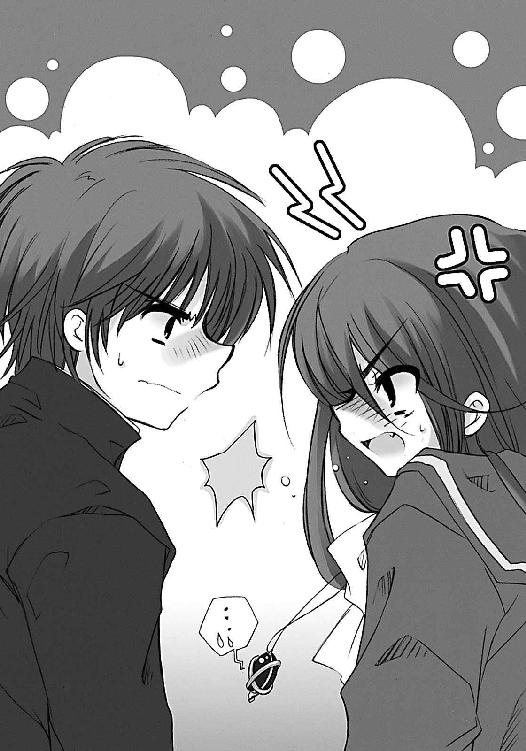
「絶対、を付けたな!?」
「付けたがどうしたのよ！」
「どケチの証明したってことだよ！」
「あ、また言った!?」
「言ったがどうした！」
その二人の頭上から、声が降ってきた。
「悠ちゃん、そんな所で、なにしてるの？」
二人して上を向くと、おっとり顔の女性......悠二の母親である坂井千草が、窓から顔を覗かせて、こっちを不思議そうに見下ろしている。
「......見つかっちゃったわね、ゆーちゃん？」
ぷぷっ、とシャナが口元を押さえて笑う。
「......」
わずかに目元を引き攣らせる悠二は、あえてシャナにではなく、もう一人、冷静で頼りになってものが分かっていて話しやすくて大人な対応をするはずの〝王〟に訊く。
「............アラストール」
「なんだ、ゆーちゃん？」
「........................もう、夕方は過ぎたよな」
いつしか頭上は闇の黒。
「......なんでこーなってんの」
「僕は知らん」
「我も知らん」
シャナは、坂井家の食卓についていた。
彼女を見つけて玄関先に駆けつけた千草の、柔和な容貌による異様な押しの強さに怯む内に、気付けばここに座らされていた。
「悠ちゃんが、家にガールフレンド連れてくるなんて初めてだわ」
と満面に喜びを示した千草は今、台所で、これでもかとばかりにご馳走を作っていた。既に食卓にはサラダと汁物の他に二品も並んでいるのに、まだ何か焼いている音が聞こえてくる。
シャナは伏目がちに、対面に座る悠二を睨んでみる。
「おまえの母親、なんで、息子と、庭の茂みの中で、怒鳴りあっていた、その相手を、夕食に、招待したりするわけ？」
一言一言を強調しながらの抗議は、目の前の皿に盛られた、エンドウの湯葉巻き揚げの香ばしい匂いに妨害されて、いまいち迫力が足りない。
悠二の方も、頬杖を突いているのか頭を抱えているのか、微妙な体勢でぼやく。
「って言うか、なんでこのちびっ子に対して、ああいう解釈ができるんだ」
好物の、ぶり大根の煮付けも、今日ばかりはつまみ食いの手を伸ばす気が起きない。
「昨夜のことといい......貴様、実は本当に、そういう趣味を持っているのではなかろうな」
「あのね！」
アラストールの真剣な懸念に怒鳴って返す悠二を、千草が呼ぶ。
「ちょっと悠ちゃん、これ運んでくれない？」
「あ〜、はいはい」
言われて、ゆるゆる渋々、悠二が立ち上がる。奥に入るや、その叫びがあった。
「こ、この上オムライスまで!? 作り過ぎだろ！」
「いいじゃない、ヒミツの隠し味が入ってて美味しいわよ。それに、平井さんにはウチの、いい印象を持ってもらわないと、悠ちゃんも困るでしょ」
「なんに困るんだよ！」
「またまた〜、ふふ、貫太郎さんとのことを思い出すわねえ」
「もうその話はいいって！」
奥で交わされる会話を聞いていたシャナは、ふと目を閉じる。
「......」
目を開ければ、温かな、家族に食べさせるための食事がある。
目をやれば、簾越しに振り向いた母親の、優しい微笑みがある。
「......」
また、目を閉じる。
やがて千草が、大皿を持つ悠二を従えて入ってきた。
皿の上には、やけにドでかいオムライスが一つ載っている。坂井家のローカルルールでは、オムライスは全員で......といっても普段は二人だけだが、切り分けて食べるものなのだった。今日は三人分なので、いつもよりもさらに大きい。
千草が、人のよさそうな......というより、人のよいとしかいえない笑みを浮かべて言う。
「さあ、召し上がれ。遠慮しないで、たくさん食べていってね。デザートも用意してあるから」
そんな千草の笑顔に釣られて、シャナは自然と、表情を緩めていた。
悠二は初めて、彼女の自然な微笑みを見た。
夕食の後も延々、『二人のお話』を迫って引きとめる千草から引き剥がすように、悠二はシャナを脱出させた。
千草が『悠ちゃんのガールフレンド』との別れを惜しんで表の通りまで出てきたので、シャナは角を曲がってから、他の家の屋根伝いに坂井家に帰らなければならなかった。
ついでに、
「暗くなってるから彼女を送ってあげなさい」
との千草の命令を受けた悠二は、送る当の本人が何故か先に帰ってしまったので、
「守るとか言ってたくせに、襲われたらどうするんだ、まったく......」
などと、非常に情けない文句を言いつつ、近くのコンビニで時間を潰す羽目になった。
そんなシャナが、屋根の上に孤影ながら二人として、座っている。
悠二は部屋の窓の鍵を開けてくれていたはずだが、シャナは今、何となく、入りたくなかった。屋根の傾斜に三角座りする、その右に千草が持たせたお菓子の袋を、左に自分が買ったスーパーの袋を、それぞれ置いている。
そろえた膝に、小さな顎を載せて夜景を眺める。
今日の空には、雲がない。月が明るかった。
「ねえ、アラストール」
なんということもなく、話を始める。
悠二と出会って以来、なぜかこういう癖がついてしまった。
それまでは、騒がしいとき、静かなとき、止まってるとき、動くとき......どの場合も、沈黙を保つことが義務であるかのように、口数少なく過ごしてきたというのに。
「あなたの真名には悪いと思うけど......そういえば、私は別に、激情に燃えたりしてるわけでもなかったのよね」
「分かっている。おまえの契約文言は、いろんな意味で傑作だった」
目の前、手に絡めたペンダント〝コキュートス〟の中から、〝天壌の劫火〟アラストールが、遠雷のように重く低い声で答えた。
そう、この恐ろしげな名の割には結構な人格者で世話好きな〝紅世の王〟は、答えてくれる。
今までも答えてくれたのだろう、自分が勝手に押し黙っていただけのことなのだろう、誰かのおかげでそれが......とまで思って、なんだか癪なので打ち切る。
そういう心の動きに関係しているのか、力の抜けた笑みがもれた。
「ふふ、ありがと」
「おまえは、他のフレイムヘイズが、自身を燃え滾らせるものを得る、その時間や過程を全て抜かして契約し、幼くして『討ち手』となった......ただ〝徒〟を討滅するための存在だからな」
「普通に火が出せないのは、そのせいかな......もし〝天目一個〟から『贄殿遮那』を奪ってなかったら、ずっと撲って蹴って、それだけでしか戦えなかったんだろうし」
その声は、わずかに沈んでいた。
アラストールは声に苦笑を混じらせる。
「フリアグネに言われたことを気にしていたのか。案ずることはない、おまえを本気にさせるだけの敵に、これまで出会えなかった、その結果に過ぎん」
「うん。ただ契約どおり、冷静に確実に、〝紅世の徒〟を討ち滅ぼすために戦ってきた、それだけなんだけど」
「我だけを連れてな。誰と交わることもなく」
「交わらなくても、なにも困らなかった」
それはシャナの本音だった。
アラストールも本音で答える。
「そうだな。交われば、むしろ困ることが増えるだろう。しかし」
「？」
「悪くはなかろう？」
ふと、悠二の顔が浮かんだ。周りを包むクラスの連中の様子が、千草の微笑が浮かんだ。
答えを、いつものように明確に返せない。
「......そうかな」
シャナは、膝頭に頬を乗せた。す、と瞼を閉じる。
（今日は、登って来て欲しくないな......）
思う内に、寝息を立て始めていた。
悠二も、今日は探索と監視に加え、夕食後の神経戦という駄目押しを喰らったため、余力が無い。帰るや風呂、さらにベッドへと直行、轟沈していた。
一人、小さな手に絡められた〝コキュートス〟の中から、アラストールだけが静かに月を眺めている。
４ 悠二
翌朝も快晴だった。
その朝の光の中、悠二は自分の現実を間違えることなく、ぼんやりとした頭で寝床を探る。
（......バット、バット......）
そういえば、昨日はちゃんと持ってから寝たっけか、あれ、なんでベッドで寝てるんだ、ああ、戻って来たらシャナがまだ寝てなかったんだ、まあいいよな、いないんなら僕が寝てても、元々僕の部屋なんだし......などと薄い思考を巡らせながら、腕の中にあるものを抱え直す。
ふにゃ、
と、なぜかそれは柔らかくて暖かい。
ほっとするような、いい匂いもする。
（......変な、バット......ま、いいか......気持ち......いい、し............）
「......すう......」
その頬に、かすかな吐息がかかった。
「!?」
ぎょっとなって目を開けると、目の前、吐息のかかるほどに近く、というより自分が抱きかかえる格好で、
シャナが隣に寝ていた。
普段の凛々しさや力強さが欠片もない、
繊細可憐な、安らいだ寝顔。
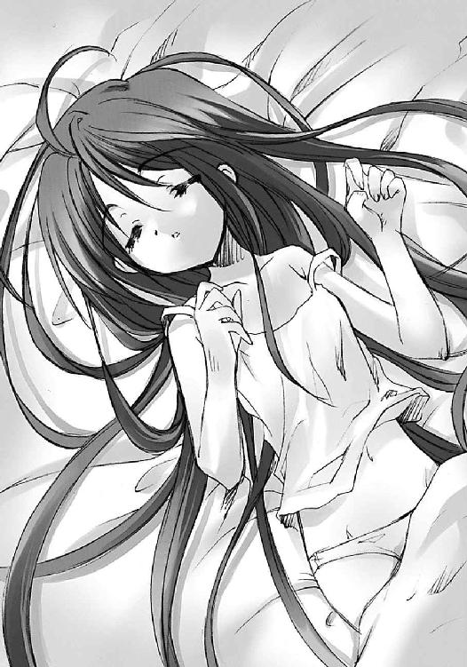
「............」
その、恋すらためらわれる清らかさに、見惚れること数秒、
「......はっ!?」
悠二は自分が昨晩以上の、それこそ絶体絶命の危地にあることに気付き、全速で後退した。
「っわ！ っわわ、わ、んが!?」
最後の叫びは、ベッドからずり落ちて後頭部を強打したものである。
「な、なな......ええと、なんだ？」
頭を押さえてうめく悠二に、布団の中、シャナの胸元あたりから（確かめるほど命知らずではない）、これ以上ないくらいに不機嫌そうな〝紅世の王〟の声がかかる。
「......ふん、目を覚ましたか」
「うぉわぅわぇ！ こここ、これは不可抗力で、不埒な真似は決して、いや多分してないと！」
「当然だ。していたら、貴様に朝はない」
ひたすら物騒な返答に、それでもほっとしかけた悠二だが、すぐに、
「さっきは危なかったがな」
と追い討ちがかかって背筋が冷える。
「な、なんでここで寝てるんだ？ しかもその」
悠二の脳裏に、たった今見た寝姿が思い浮かぶ。
「......下着のままで」
その不埒な想像を、アラストールの不機嫌な声が、ズガンと砕く。
「我が下に降りるよう言ったのだ。この子も寝ぼけていて、服を脱ぎ散らかすや布団にもぐりこんで寝てしまった。不本意ではあったが、わざわざ起こすのも憚られた、それだけだ」
悠二の側に潜り込むときのシャナが、今まで見たこともないほどに緊張を解いた様子だった、眠りについた顔があまりに穏やかだった、だからその邪魔をしかねた......とまでは言わない。
「う、ん......なに、もう朝？」
シャナが、二人の会話のせいか、目を覚ました。まとめず寝たために乱れた髪が、素の肩にばさばさとかかる。
その胸元に下げられたままだったペンダント〝コキュートス〟から、アラストールが言う。
「起きたか」
「おはよ、アラストール......ん〜〜っ！」
シャナは寝ぼけまなこを擦って、全身に強い力を行き渡らせるように伸びをする。つい、と視線を落として、自分の今の状態を確認、首を捻る。
「〜はれ？ なんで私、ベッドで寝てるの？」
「我が勧めたのだ」
「ふ〜ん、そうだっけ............え」
シャナは、なぜか後ろ向きに正座している悠二と、今の自分の格好に気が付いた。
部屋を眺めれば、昨日のように悠二が壁際で寝ていた痕跡はなく、そのとき巻いて寝ていた毛布も、今ベッドの上にあるわけで、つまりこれが意味する所は。
「......」
「......」
「......」
三者、それぞれの意味合いをもつ沈黙。
やがて、その圧倒的不利な雰囲気の中......例えるなら、刑場の土壇場で事前通知無しの打ち首を待つ罪人のような気分......で正座していた悠二が、恐る恐る、シャナに背を向けたまま声をかける。
「あの〜......シャナ、さん？」
「......昨日といい、今日といい......」
びしびしと青筋の立つ音が聞こえそうな、凄みと怒りに満ち満ちた声が、低く漏れる。
「い、いやだからこれは双方にとって幸せいや不幸な事故であって僕はやましいことはしてないとそれに昨日ほどじゃなかったいや気持ちよかったりしたけどそれはあくまで結果というやつで思わぬ所で嬉しかったりいやそういう意味ではなくてどんな意味かというといやこれが」
冷や汗と言葉を垂れ流す悠二の背後で、ズバッ、とフレイムヘイズの黒衣の広がる音がした。
これの意味する所が何か、悠二が考える前に、
「峰だぞ」
というアラストールの声がして、その脳天に大太刀が、ドバカ、と一撃。
悠二はもんどりうって昏倒した。
重傷寸前の一撃を受けた悠二が、いつもの起床時間に起きる......というより覚醒することができたのは、まさに習慣の勝利だった。
脳天に載っけた、生涯最大と思われるたんこぶを掌に感じながら、悠二は恒例のように、朝日の中で思案している。ちなみに目覚めた後も、反省のほどを示すため、姿勢は正座である。
その、いささか以上に間抜けな格好の彼を、日の光が照らしている。
朝は変わらず、やってきていた。
明日が無いように思えた身にも、変わらず。
今日という形で。
だとしても、
（......う〜ん、ここまで来たか）
悠二は脳天を撫で付けながら、しばらく待つ。
しかし、やはり、もう、ため息が出ない。
絶望や恐怖が、静かに収まっていた。
忘れたわけでも、なくなったわけでもない。たしかにあると感じるが、しかし、心を乱すことはなくなっている。
（ほんと、変だ......いつか来る消滅のときに怯えて、毎日ガタガタ震えて暮らす、そんな風になると思ってたのに）
妙な話だが、実際には全く逆だった。
ほとんど平然として、今の自分の境遇を受け入れている。
最初の頃の、半ば強迫観念に囚われて、それが当然の態度、と怯えていた自分の姿を、可笑しいとさえ感じる。そこまでの馬鹿余裕が、今の自分にはある。
慣れだけで、ここまでになるものだろうか。
それとも、シャナが言ったように諦めたのだろうか。
あるいは、これが燃え尽きてゆくことによる無気力の表れなのだろうか。
（......どうも、違うんだよな......なにか、つかみそうな......なんだろう......？）
「ちょっと、聞いてんの？」
正座する悠二の正面、開けたガラス戸の向こうから、シャナが刺々しい声をかける。
「ん？ ああ、うん」
「頭の栓がどっか緩んでんじゃない？」
「ぶっ叩いた奴が言う台詞じゃ......いえ、なんでもありません」
灼眼ではない眼光に打たれて、悠二は反論を即座に撤回する。
そのまま、平然と訊き返す。
「......で、なんだっけ？」
すでにセーラー服を着ているシャナは、ベランダの手すりに、小鳥のように腰掛けていた。不機嫌をあからさまに眉間の皺に残して、ため息をつく。
「はあ......こんなのの言うことを信用するの、アラストール？」
「当面はな」
その胸元のペンダントから、アラストールが答える。彼の声も、まだかなり険悪である。
「現段階では、未だトーチの数は、フリアグネが『都喰らい』を発動させるだけ用意されていないはずだが、それでも早急に手を打っておくべきであることは変わらん。しかし彼奴らも、我らに察知されることを恐れてか、一昨日以来、封絶と乱獲を行っていない」
「つまり両方とも手詰まりってことか」
正座のまま腕を組んで言う悠二に、シャナが言う。
「いちおうは、おまえって餌を連れてうろうろするつもりだけどね。こうやって睨み合ってる内に、トーチはどんどん消えてくから、その内、連中も焦れて出てくるでしょ」
ところがこれに、思いもかけない答えが返ってきた。
「いや、それじゃ駄目だ」
「なんですって？」
悠二が、シャナを見ていた。やはり平然とした表情で。
シャナは、この反論にも不快さを感じない。ただ訊き返す。
「どういう意味よ？」
悠二もそれを......シャナが、道理が通っていればそれを素直に受け入れる少女だということを、分かっている。
「向こうに主導権を与えちゃ駄目だ」
悠二は、自分でも驚くほど、冷静になっていた。さっきの自己分析の副産物なのか、自分たちがやるべきこと、やれることが、明確に頭に浮かぶ。
「こっちが待つってのはつまり、相手に何か準備させたり、次に行動を起こすのを受け止めて動くってことだろ。それじゃ、罠の中に自分から飛び込むようなもんだ」
「じゃあ、どうしようっての？ 向こうが動かないから、こっちは苦労してるんじゃない」
「呼び寄せる方法はあるよ」
悠二は、苦渋の選択であるはずの提案を、なぜかあっさりと口にすることができた。
「連中が『都喰らい』を企んでいてもいなくても、たぶん、噛み付いてくる」
「......？」
「どういうことだ」
不審気なシャナの胸元から、アラストールが訊く。その声には、さっきまでの不機嫌さは欠片もない。
「連中の企みのキモは分かってるんだ。だから、その邪魔をしてやればいい」
「貴様、まさか」
悠二の意図を察して、アラストールは驚いた。
悠二は、うん、と頷いて続ける。
「もう、手段を選んでる余裕はなくなってると思う。待ってれば、こっちが不利になるだけだ。まだ無事な連中から、きっちり守っていかないと」
ふうん、と同じく察したシャナが、楽しそうな声を上げた。
「ぶったたいてスイッチでも入ったのかな」
アラストールも、愉快気に言う。
「かもしれん。突飛ではあるが、確かに効果的だ」
「じゃあ......」
悠二に、シャナは頷いて見せた。とびきり明るく強い笑みが......名案を評価するだけではない、悠二という存在への言い知れない嬉しさを感じた笑みが、その顔にある。
「うん、乗ったげる。昼食を取ったら、すぐに学校を出るわよ。忙しくなりそうね」
「あら、平井さん？」
「あ」
ベランダの下からかけられた呑気な声に、悠二は今までの冷静さを全て吹き飛ばされた。
母・千草だ。
うっかりしていた。
悠二の部屋のベランダは、玄関の真上にある。
新聞と牛乳を取りに出た千草が、上での会話に気付いたらしい。朝っぱらから息子の同級生（には見えないが）の少女が、その部屋のベランダに腰掛けていたら、あらぬ誤解を受け......
「おはよう。どうしたの、こんなに朝早くから？」
なかった。千草の呑気さが、こんなときはありがたい。
「どうしてそんな所に？」
「えーと、ちょっと一跳び」
とシャナも、根本的なところでずれた答えを返す。
「あらあら、お転婆さんね」
千草も負けていない。
悠二は思わず脱力して正座を崩した。
結局シャナは、朝食も坂井家でご馳走になった。
三日目の授業は、三種類に割れた。
初めてシャナの授業を受ける教師は、例によって壮絶な自爆で、プライドと権威を粉砕した。これは前日、前々日と同じ。
顕著な変化があったのは二度目以降の教師で、これは、正反対の反応を示した。
完璧な無視か、対決である。
前者は『触らぬ神に崇りなし』の態度で、彼女を徹頭徹尾無視するという非常に分かりやすいもの。
後者は、悔しさと熱意から自分なりの研究と勉強を行って、シャナにその是非を問うという、なんだか主客転倒なもの。
教師の方はともかく、生徒たちの方は、三日目ともなれば彼女の態度にも慣れ（昨日の、体育の授業の影響でもある）、授業を楽しむだけの余裕も出てきていた。
教師という仕事がどう行われるべきものか、どういう人間がそれに向いているのか、そしてそれを考える教師がいかに少なかったかという、いわば子供が大人を観察する場所として、授業は機能し始めたのだった。
この状況は、ただの職業として教師を選んだ者にとっては災難以外の何物でもなかったが、そうではない、教育への理念や情熱を持っていた者（少数派のようだが）は、まるで真剣勝負のように燃えた。
シャナは相変わらずである。
求められれば、ひたすらシビアな、反論の余地のない事実を突きつける。
まるで授業に審判が現れたようだった。
結果、三日目の午前四時間で、粉砕一、無視二、対決一のスコアである。
昼休みになったが、もう用事もなしに出て行く者はいなくなっていた。
池ら三人と吉田も、悠二やシャナと一緒に昼飯を取ることが当然のように、机を固めている。周囲のクラスメートも各々、昼食とおしゃべりを楽しんでいて、もうシャナが現れる前の光景と変わらない。
（やっぱ、慣れってことか）
などと思いつつ、例によってコンビニおにぎりを、海苔をパリパリ割って食べる悠二である。
「ところで、平井さん」
池がホカ弁を開けつつ、何気なく切り出した。
「なに」
シャナは例によって無愛想に答える。
アラストールと大っぴらに話ができなくなるので、彼女は他人との同席を好まない。全く文字通りに、一緒に食べる、というだけで、ひたすら食料袋から取り出す昼食を頬張っている。今食べているのは、もはや定番とも言えるメロンパンだ。
もう彼女のそういう所に慣れたらしい池も構わず、悠二を箸で指す。
「いったいこいつのどこが気に入ったんだい？」
「ぶはっ!?」
指された悠二は刺されたように、思い切りむせた。
佐藤や田中も興味津々で注視する中、しかしシャナは全く表情を変えない。
「気に入った？ なんのこと」
「いやだって、昨日も放課後にずっとデートしてたろ」
「でーと？」
「......おまえ、つけてたのか」
危ないことをする、と思って悠二は池を睨む。
すると、答えは意外な所から返ってきた。
「ご、ご、ごめんなさい......私が、二人がどこに行ったのかな、って、その、池君に、訊いたから......」
「吉田さん？」
悠二は、『本物の平井ゆかり』はそんなに吉田さんと仲が良かったっけ、と（気持ちの悪いことに）薄れつつある彼女の情景を思い出そうとする。
ほとんど思い浮かんでこないが、それにしては彼女の様子はどうも深刻そうだ。あるいは彼女たちの間でしか話せない類の悩みでもあるのだろうか。
そんな彼女を、池がフォローする。
「まあ、追いかけたのは後になってからだよ。最初からつけようと思ってたわけじゃない。御崎大橋でちょうど追いついて、面白そうだから観察してたんだ」
シャナの方を見て、こっちには賢明にも、箸で指さず言う。
「おまえらがどこかに寄ったら声をかけようと思ってたのに、延々歩くばかりだろ。その内、吉田さんが疲れたんで、皆でジュース飲んで先に帰った、それだけさ」
「せっかくのデートだってのに。もっと他に楽しみようはなかったのか？」
「この甲斐性なしめ。全然見ごたえが無かったぞ。もっとサービスしろ」
例によって佐藤と田中が続ける。
「おまえらもか......」
悠二が頭を抱える。
逆に、そもそも何が話題になっているのか理解していないシャナが、涼しい顔で吉田に訊く。
「なにか、私に用でもあったの？」
「う、ううん、そうじゃ、なくて......」
吉田は複雑な表情をして顔を伏せてしまう。
「じゃあ、コレに用が？」
シャナは、二人引く自分、の引き算から出た答えとして、悠二をぞんざいに親指で指した。
いきなり、伏せられた吉田の顔が、耳まで真っ赤になる。ほとんど中身の減っていない小さな弁当箱に、箸が刺さって止まった。
池が、その吉田と悠二を、ついでにシャナの方をちらりと見て、情勢を計る。佐藤は物見高く楽しそうに、田中は固唾を飲んで、吉田を見守る。この三人は昨日の同行で、概ね彼女の事情を察していた。
昼休みの喧騒の中、不意に、この面々の間だけに、張り詰めるような緊張が生まれる。
（............ん？ ......まさか......）
悠二は、この吉田の様子に、非常にいい気な想像、あるいは妄想を抱いた。
（いや、まさかね）
ははは、こういうことは、だいたいが恥ずかしい思い込みで終わってしまうもんさ、と悠二は（実は期待の裏返しである）心理的予防線を張る。
しかし一方の吉田は、その悠二の予想を覆すように、伏せた真っ赤な顔の下で、しかし何とか声を絞り出そうと頑張っている。
その間も、シャナだけがメロンパンをもぐもぐと食べていた。目線だけで、なぜか固まっている悠二たちの様子を観察している。
結局、吉田が、
「あ」
と搾り出すまでに、五秒はかかった。
「あの、昨日、その......格好よかった、です」
必死に搾り出した言葉を切って、忘れていたように、息を継ぐ。
「え、でも、実際に何かしたのは平井さんで、僕は何も......してないけど」
悠二は言いつつ、情けない台詞だなあ、とげんなりしてしまうが、事実だから仕様がない。
ところが、
「そんなことありません！」
と吉田が真っ赤な顔を上げて、ようやく吸った息を、また全部吐くように言った。叫ぶ、といえるほどに声量はないが、それでも教室にいた全員が、驚いて彼女を見た。
「格好よかったです、とっても！」
クラスメートたちの注視の中、悠二はその声に打たれたように呆然となっていた。
こういうシーンは、ドラマやマンガの中だけにしかないものと思っていた。現実は当然、そうではないのだが、十五年の人生経験しかない彼にとっては、実際に出くわすまでは、とにかく遠い絵空事でしかなかった。そして、いざそれが目の前に現れると、経験の浅さから、うろたえるしかない。
「私、助けてくれたり、せ、先生に、きちんと、ものを言ったり、すごく、格好よかったです、本当です」
「......はあ、ええ、と......あ、ありがとう」
また倒れるんではないか、と思わせられる吉田の危なっかしい気迫に押されて、悠二はひたすら間抜けな答えを返した。どうしようもない気恥ずかしさと照れに、頬が緩み熱くなる。
吉田の方も実は、本当に言いたいことにまで言葉が届いていないのだが、元来が内気な彼女としては、ここらが勇気の限界だった。また顔を伏せて、黙り込んでしまう。
悠二も動転してしまって、居心地がいいのか悪いのか、それさえ分からない。なにか言うべきなんだろうか、でもなにを、どういう風に、と思考だけが熱っぽさの中で空回りする。
教室を沈黙が支配する。
その中、一人、この雰囲気をよそにメロンパンを食べていたシャナが、自分の横で赤くなっている悠二を見た。次に、同じように真っ赤になって顔を伏せている吉田を見る。
さっきのやり取りの意味が、教室が静かになった理由が、ちっとも分からなかった。昨日のこと、格好よかった、ありがとう......何かおかしなやり取りだったろうか。
「......」
もう一度、悠二に目を戻した。
「............」
真っ赤な、笑う直前のような、困りきったような、変な顔。
シャナは何故か急に、この悠二の顔に、むっとなった。
怒り、だろうか。
しかし......〝徒〟に歯応えがなかったとき、他のフレイムヘイズに喧嘩を売られたとき、街で愚かな人間を見たとき、アラストールに甘いもの以外も食べろと叱られたとき......今まで感じてきた種々強弱のそれらと、なにか、どこか、違う。
そう、『悠二が自分を怒らせたことに腹が立つ』とでもいうような、理不尽な気分。
我知らず、口がヘの字に曲がっている。
急に、ここにいたくなくなった。
悠二を、なんだか許せない生き物のようにギロリと睨んで、訊く。
「もう食べ終わった？」
不意な声に悠二が、これも何故か慌てて振り向く。
「え、あ、うん」
返事なのかどうかも分からないその声を無理矢理、肯定と解釈して、シャナは席を立った。
「じゃ、行くわよ」
二人とも、元々昼には出て行く予定だったから、帰る用意はしてある。
シャナは鞄と食料袋を素早く取り、もたもたしている悠二の手を引く。
「ほら、なにぐずぐずしてんの」
「ちょ、ちょっと待ってくれよ」
「やだ」
「やだ、って......」
予想外すぎるシャナの答えに悠二は慌て、鞄を持ちつつ、吉田の方を見る。
彼女はシャナの剣幕に驚き、またわずかに怯えを走らせている。
その顔が、光景が、横にすっ飛ぶ。
シャナに手を引かれ、というより振り回されるように、悠二は教室から連れ出されていった。
二人が教室を出て十秒は経ってから、池がぽつりと、沈黙を破った。
「......これは、本物かな」
今度は、吉田がむっとなって、二人の出て行った先を見つめていた。
その二人は、出た勢いのまま、廊下を走っている。
シャナはもう手を放しているが、悠二がついていくことに変わりはない。
「な、なんなんだよ、いきなり」
せっかくいいとこだったのに、と言えるほど悠二もスレてはいないが、それでもわずかに不満は声に出る。
横を走るシャナが、まだヘの字口を崩さず、答える。
「うるさいうるさいうるさい。予定通りの行動よ」
「そりゃ、そうだけど......」
少し残念かな、と悠二は、自分がまともにものも言えなかったことも忘れて、吉田の顔を思い浮かべる。
その尻に突然、シャナの蹴りが入って、悠二はつんのめった。
「っわ!? な、なにすんだよ！」
「なにユルんでんのよ、これから絶対に一戦やらかすんだから、しゃきっとしなさいよ！」
「だからって蹴っ飛ばすか、普通!?」
「蹴っ飛ばすの！ 普通は!!」
凄まじい迫力で断言されたので、悠二は黙って走ることにした。
広がりを無限に思わせる暗闇に、数十を数える薄白い火が点り、彷徨っている。
それら薄白い火の一つが突然、大きく膨れ上がった。
やがて火は、細い輪郭に白い輝きをまとった、優美な男の姿を取る。長衣の中で、灯火を逆に映す黒い鏡のような床を、細く軽く踏む。
〝狩人〟フリアグネだった。戸惑いを顔に見せ、しきりに首を捻っている。
「マリアンヌ、これは、いったい何事だい？」
その調律の狂った声色は、いつにも増して外れていた。
ぼっ、とその前方の床に、巨大な箱庭がライトアップされるように浮かび上がった。玩具のブロックや模型をつなぎ合わせて作られたそれは、御崎市の全域を精巧に擬している。
その中には、無数の鬼火のような灯火が散らばり、蠢いている。
トーチを示す印だった。
「ご、ご主人様！」
〝燐子〟マリアンヌが、動揺を声に表して言う。箱庭の一番高いビルを模したプラスチックの箱の上に、その粗末な人形の体を載せている。
「崩れているじゃないか？ 私の『都喰らい』の布石が」
フリアグネは平静な様子に変わって、その箱庭を見渡す。
マリアンヌが答えて、指もないフェルトの手で、市街の一点を指す。
「フレイムヘイズです！ あの小娘が、封絶でトーチをどんどん消費して......っは!?」
言う間にこの、御崎市全域をモニターする道具である箱庭の一角に突然、封絶を示す光の半球が現れた。この封絶の印は、しかし発生するや、すぐに薄れて消える。
その中に蠢いていたトーチを示す灯火も、同時に。
封絶発生のエネルギー源として消費されたのだ。
「......どういうことなんだ？」
フリアグネは眉を顰めた。
フレイムヘイズがトーチを消費するなど、普通では考えられない。彼らはこの世界のバランスを保つために戦っているのだから当然だ。
マリアンヌが短い手足をばたつかせて言う。
「まさか、トーチを消費して世界の歪みを故意に生み、他のフレイムヘイズたちを、この地に呼び寄せようとしているのでは？」
「まさか......いや......そうか、やるものだね」
フリアグネは、マリアンヌの言葉から相手の意図を看破した。それが、彼の線薄い美麗の容貌に、刃のような薄笑いを結ばせる。
「なるほど、あのおちびちゃんと恐い恐い魔神の〝王〟は、そういう危機的な状況を作ることで、私を誘っているんだ」
「誘う？」
「そうさ、君が言ったように、あの二人は他のフレイムヘイズを呼び寄せるポーズを取りつつ、私の計画の根幹たるトーチをこれ見よがしに消して......ん」
と言う間にも、また一つ封絶が行われ、トーチも一つ消えた。
がっくりした表情になって、しかしフリアグネは続ける。
「今は消えかけのトーチを使っているようだけど、それがなくなれば、今度はより強いものを使うのだろうね。私が出て行かなければ、トーチはどんどん消費され、計画は......私の望みは潰える。そして、それは同時に、周囲のフレイムヘイズの集結と私の討滅をも意味する、というわけさ」
「そ、そんな」
フリアグネは翻る長衣に顔を隠して、箱庭の上へと舞い上がった。マリアンヌを、その浮遊の中で柔らかく拾い上げる。
次に現れたのは、優しい微笑だった。
「マリアンヌ、そんなに怯えた顔をしないでおくれ」
胸の中の、表情を縫い付けられた人形。その表情を、彼だけが知ることができる。優しく笑って、しかし鋭い声を出す。
「そんなに深刻になることはない。これはつまり、挑戦状なんだ。〝狩人〟の前に、獲物が見せた足跡さ。彼らは、こう言っているんだよ。『さあ、どうする？』とね」
彼らが見下ろす、無数の灯火を蠢かす箱庭で、また一つ封絶が。
フリアグネの眉が上がり、口元が引き締まった。真剣そのものの顔で、言う。
「獲物に、こうまで言われたら......〝狩人〟として取るべき道は一つ、そうだろう？」
マリアンヌは、嬉しげに叫んだ。
「は、はい、ご主人様！」
フリアグネは子供をあやすように、マリアンヌを宙に差し上げた。そのまま二人で、暗闇の宙をゆっくりと回る。
そうして回る内に、フリアグネの左手薬指に、指輪が一つ、現れている。
その銀色の指輪には、中心に線を引くように奇怪な文字列が刻まれていた。それが一つ、また一つと暗闇に薄白く光り、光った文字は暗闇にこぼれるように残されてゆく。いつしか残された文字は、星空のように暗闇をいっぱいに埋めていた。
「もうすぐだよ」
フリアグネが陶然とした面持ちで言うや、文字は一つ所へと収束、一個の巨大な球体を作り上げる。
同時に、掲げられたマリアンヌの胸の内にも、同じ文字による、やや小さな球体が点った。まるでトーチの灯のように見えるそれは、〝存在の力〟の結晶。〝燐子〟が、喰えない力を内に宿しているのだった。
「もうすぐ、君に編み込んだ、この自在式を起動させることができる......そのために必要だった莫大な〝存在の力〟が、もうすぐ手に入るんだ」
この球体の文字列こそ、かつて封絶という因果孤立の自在法を編み上げ、〝紅世の徒〟を完全にこの世の人間の目から隠すことに成功した、天才的な自在師〝螺旋の風琴〟の遺産。
内蔵するモノの在り様を組み換え、他者の〝存在の力〟に依存することなく、この世に適合・定着させる『転生の自在式』だった。
「この自在式が起動したとき、君は生まれ変わる。誰に頼ることもない、まごうことなき、一個の存在へと」
繊細な美貌が、恍惚に蕩ける。
彼にとっては、秘法『都喰らい』さえも、この起動に莫大な〝存在の力〟を必要とする自在式のための、エネルギー調達手段でしかなかった。
大きな仕掛けの、小さな望み。
それこそが、フリアグネの目的なのだった。
（......それにしても）
フリアグネの恍惚に、小さな、しかし根本的な不審が黒くよぎる。
こんな、世界のバランスと自分への挑発を天秤にかけるような思い切った手を打つには、まず自分の計画の根幹が、数多く配置されたトーチであると、確信していなければならない。
自分の仕掛けは、まず他の〝徒〟に見破られたりはしないはずなのだが。
（ふ、まあいいさ、計画の準備自体は、ほぼ完了しているのだ......今さら止められはしない）
また表情が、優しい微笑に転じる。
「マリアンヌ、おまえはここで、全体のバランスを見張っているんだ。状況によっては、すぐに始めるからね」
「はい、分かりました......ご主人様は」
マリアンヌの言葉は、問いではなく、確認。
闇の中、輪舞する彼らを取り巻いて、薄白い炎が数十、浮かび上がる。
「もちろん、〝狩人〟の仕事をするよ」
炎に照らされたフリアグネの笑みが深まり、黒々とした影を作る。
市街の一角、人通りの少ないとある路地裏で、す、と一対の目が閉じられ、
そして開く。
灼眼が煌き、それと同じ色の、まさに目を焼くような紅蓮の炎が立ち上った。
仁王立ちするシャナを中心に、路地裏を埋めて、炎は上へと通り過ぎる。そのあとには、奇怪な紋章を路面に描き、撹拌される瀑布のような陽炎の壁に囲まれた、直径にして三十メートルほどのドーム状の空間が残される。この内部に囚われたモノは、まるでポーズボタンでも押されたかのように静止する。
一時的に周囲の世界から因果の流れを切り離す孤立空間、〝封絶〟だった。
（......こればっかりは、何度体験しても慣れることができないな）
悠二は、自分の全てを変えたこの光景を、おぞ気を感じながら見ていた。
今見ているこれは、〝夕のゆらぎ〟や〝明のかすれ〟の力を借りない、フレイムヘイズ自身、つまりシャナの力で発生させたものだ。すでに二度見ている夕焼けの光とは違う、火線の紋章も陽炎の壁も、まさに炎の色であり、力感だった。
この封絶に囚われた者は本来、世界から因果の流れを切り離されて、次の存在へとシフトできない、つまり動けなくなるのだが、身の内に何らかの宝具を秘めた〝ミステス〟たる自分には、どういうわけか影響がない。普段どおりに動ける。まあ、それだけのことだが。
（でも、そのおかげで......いや、そのせいで、かな？）
シャナに出会った。この世のものならぬ怪物に襲われる羽目にもなったが。
事実を知らされることになった。本物の自分は死んでいるという事実だったが。
良い悪いで言うなら、明らかに悪い方の分が勝ちすぎているようだが、それでも悠二は、シャナに言ったように、すっとしていた。
その気持ちがどういう意味を持っているのか、燃え尽きる前に知りたい、というのが、ささやかな、しかし恐らくは難しい、悠二に残された望みになっていた。
（残された、か......実際、どの程度の時間があるのかな）
新しいか古いか程度の判別はつくようになっていたが、さすがに後どれくらい、とまでは分からない。慣れにもよるのだろうが、その慣れるだけの時間は、おそらくないだろう。
そんな自分と同じ、燃え尽きる運命のモノが今、封絶の中にぽつんと一人、あるいは一つ、止まっている。いざ襲撃というときに周囲を巻き込まないよう、雑踏から離れるまで待っていた、それ。
〝存在の力〟を喰われた人間の残り火から作られた代替物。
存在の喪失を緩やかに行い、世界に歪みを生まないための道具。
トーチ。
自分との違いといえば、〝紅世〟の宝具が入っていない......ただ、それだけ。
もはや芯の先の光点ほどでしかない、灯の薄れたそのトーチは、出前中らしい、岡持を手にした若い男。
悠二は思う。
（店の人だろうか、バイトだろうか、したいことがあったんだろうか、欲しいものがあったんだろうか、家族は、恋人は、友達は......）
しかし、もう〝存在の力〟が、ない。それだけで、何もかもが無意味になる。
傲慢な哀れみか、単なる同情か、悠二はつい声を漏らしていた。
「......もう存在が薄すぎて、他人との接触にも実感を持たれないような消えかけ、か......」
男のトーチが、一点に吸い込まれるように凝縮する。点となったそれは、瀕死の蛍のように宙を漂い、悠二の前に立つシャナの、天に突き上げられた人差し指の先にとまった。
「ふん、そうよ」
灼眼を煌かせて言うシャナは、大太刀はもとより、炎髪も現さず黒衣もまとっていない。封絶の制御程度は、灼眼だけで十分できるということだった。
「自我も意欲もほとんどなくなった、ただ作業として残りの日を過ごすだけの残り滓よ」
どうも昼からのシャナは、物言いがつっけんどんだった。
悠二には、いつもは冷静さからくるその態度が、今はどうも、その逆のものからきているように思われた。もっともこれは、吉田とのことで調子に乗っている自惚れかもしれないが。
ともかく二人して、なんともむずかゆい、顔を合わせ辛い雰囲気の中で作業を行っている。
やがて、シャナの指先で、凝縮されたトーチが消える。この路地裏を覆う封絶を保つための力として、使い果たされたのだった。
悠二が同類の最期を看取るように言う。
「これでまた一人、死んだ、か」
「言い出しっぺが今さら何を。だいたい、とっくに死んでるわよ」
顔も向けずに言うシャナに、悠二はわずかに苦笑する。
「うん、分かってる」
「どうだか......これで四十三個目ね」
シャナの灼眼が、瞬きとともに黒く冷え、封絶が解かれた。
因果が再び外と繋がって動き出す。といっても、今のトーチが人込みから離れるのを待って封絶したので、戻った場所はうらぶれた路地裏、大して違和感はない。
舗装もつぎはぎの路面を、古びたビルと長年放置された工事フェンスで挟んだ、街の影。人一人の存在がひっそり消える場所としては、おそらく相応しい場所。
悠二は、何でも深く考えすぎだな、と自嘲に似たため息をついた。
「......そろそろ、向こうとしても痛くなってくる頃かな」
シャナの言うとおり、自分が提案しての一連の行動ではあったが、それでも悠二は、早くそうなって欲しい、と思う。
アラストールが答えた。
「うむ。貴様の言った通り、数や規模に意味があるのなら、それを減らしてゆくことで、遠からず彼奴も出て来るだろう」
今朝、悠二はこう主張していた。
『その意図や使い道が分からなくても、使うものが分かっていれば、邪魔するのは簡単だ』
これにはシャナも、アラストールさえ感心した。無論、表には出さなかったが。
さらに悠二は、こう、付け加えもした。
『シャナ、アラストール、あんたたちも、僕が利用できるというなら、そうするのがいい』
『うん』
と自分がためらうことなく頷いたのを、シャナはほとんど驚きと共に感じていた。
アラストールは、黙っていた。
そのとき、シャナは自問していた。
これは冷たいやり取りか、と。
そして、自答していた。
違う、むしろその反対だ、と。
そのことを、はっきりと確信できた。そのことが、何故か嬉しくもあった。
ところが、昼休みに悠二が、あの吉田とかいう奴を相手に笑ったり困ったりしているのを見て、また何故か、その嬉しさが逆転してしまった。
この辺りが、どうもよく分からない。考えるほどに、その思考は掻き乱され、立ち消えてしまう。こんなことは初めてだった。そんな思いのまま口を開けば、何か変な言葉が飛び出てしまいそうで、悠二とまともに顔を合わせることもできない。
だからシャナは、早く出て来い、と思っていた。
余計なものを全て吹き払う戦いが、今、いちばん欲しかった。
「よおし、どんどん行くわよ」
その欲求を声に出して、シャナが踏み出した。
刹那、悠二は、
ズン、と自分の中で震えるものを感じた。
「!?」
もはや奥深くではない。神経のように、その感覚は体中に染み通っていた。
痛みや衝撃ではない。巨大な存在に対する反響、あるいは共振だと、分かる。
そして、今日一日で、それが何を意味するのかも実感していた。
瞬き一つ、シャナが踏み出した足を地に置く、実際にはそれだけの間に得た感触を声に出す。
「シャナ！」
「！ ......へえ、分かってきたじゃない！」
シャナが、悠二の反応の意味を察した。
わだかまり全てを消し去る嬉しさを、強い笑みに変える。
その笑みの中に、灼眼が煌いた。
フレイムヘイズとしての彼女が、燃え上がる。
「〝狩人〟のご登場ね」
路地裏を埋めるように、薄白い炎が真下から立ち上った。
悠二が感じた、この世の流れの外にある存在の接近。それが起こす、因果の断裂。
地に紋章、周囲に陽炎が残され、囲われた世界が止まった。
薄白い炎、つまり〝狩人〟による封絶だった。
その中、
シャナの長い黒髪が、火の粉を舞い咲かせて、灼熱の光を点す。火の粉の向こうで、黒寂びたコートが体を包み、大太刀『贄殿遮那』が右の手に握られる。
そのフレイムヘイズの顕現を見下すように、調子っ外れな声が降ってくる。
「いやはや、まったく困った子だね」
シャナと悠二が同時に見上げた先、フェンスの支柱に結わえられた街灯に、薄白い火が一つ、点っていた。
火に焼かれた街灯が、すぐに乾いた破裂音を撒いて砕ける。そのガラスの、薄白く瞬く雫のような破片が地に落ちる前に、火は膨れ上がって、人の形を取っていた。
純白のスーツの上にまとった、やはり純白の長衣が、火の余韻のように大きく揺れた。僅かに眉を寄せて見下ろす容貌は、かすれんばかりの儚さ。
それとは全く対照的な、存在感に満ち溢れた強さで、シャナが言う。
「真名の割りに、辛抱が足りないんじゃないの？ 〝狩人〟フリアグネ」
言いつつ、大太刀を片手持ちにしたまま、わずかに腰を落とす。
その動作を知りつつも、〝狩人〟フリアグネは苦笑で答える。
「ふふ、せっかく描いた絵を、無粋な鼠の足跡で汚されては、いかに温厚をもって鳴る私でも怒るさ......最悪の気分だよ」
凄みの利いた最後の一声に、シャナも不敵に返す。
「じゃあ、どうする？」
フリアグネが一転、形相を凶悪に変え、
「こ」
の音をあげる内に、シャナは足裏に爆発を起こして跳んでいた。
「ろ」
の声を紡ぐフリアグネは、大太刀の一閃を至近に、しかし余裕の表情でかわす。
「す」
飛燕の舞うように下に跳びつつ体を返して、宙にあるシャナへと、手袋をはめた掌を差し出す。その表面から純白の炎がほとばしった。
シャナは刀の峰を体に叩きつけ、反動で大きく返し太刀を振るう。その動きに連れて宙で体勢を回し、炎も太刀風一振り、吹き散らす。
この、絶技ともいうべきシャナの立ち回りを、フリアグネは小さく口笛で賞賛した。
両者着地。
シャナはどっしりと前、やや低めの体勢で大太刀を構える。
フリアグネは優雅に長身を反らして、これに対峙する。
戦いでは完全におまけの悠二は、慌ててシャナの背後に回った。
「今日は、お人形遊びじゃないの？」
シャナがあからさまな挑発の声を投げるが、フリアグネは余裕の表情で、ショーの開幕を知らせるように両手を大きく広げる。
「もちろん、用意してあるとも」
シャナを悠二を取り巻いて、数十もの薄白い炎が、狭い路地裏に所狭しと湧き上がった。
その内から、『お人形』たちが姿を現す。
頭身の大きい、しかしどこか頭が丸めの人形たち。滑らかな体のラインに、目立たない形で関節が仕込まれている。これらは、シャナはもちろん悠二も知らないが、アクションフィギュアという非常にマニアックな種類のものだった。もちろん、すべて少女型である。
「ふうん、なるほど。」
「か、かなり恐いかも」
シャナが嘲笑い、その後ろの悠二がひるむ。
実際、顔をアニメ調にペイントされ、微妙に大雑把な縫製の服をまとった等身大の人形が群がり立つ光景は、悠二の言うように恐いものがあった。
その格好も、カジュアルやゴスロリから、パンクルック、メイド、巫女、水着（当然のようにスクール）、ナース、メガネにブレザー等々......。
それら、まさしく趣味の産物が、可愛く描かれた笑顔のまま、コキコキと関節を鳴らして詰め寄ってくる。武器こそ持っていないが、代わりにその両の掌に、薄白い炎が燃えている。
得意げなフリアグネの声が、その包囲の向こうからかかる。
「うふふ、おちびちゃん、ご期待に添えたかな？」
「さあ？ それは、やってみないと」
シャナは、デザインなど、気にもかけない
いささか以上にがっかりした顔になって、フリアグネが告げる。
「さみしい感想だねえ。じゃあ、やろうか」
戦闘の開始を。
三十は数えられそうなフィギュアが一斉に飛び掛り、
まずシャナの正面にいたナースが、眼前に突然現れた斬撃で両断、爆砕された。
その乱風に揺れる炎髪の中、灼眼が閃き、次の獲物を探す。
包囲の一角に割り込んだシャナに、その両脇のゴスロリとブレザーが襲い掛った。
両者の動き出すと同時に、シャナは片方、ゴスロリの懐に踏み込み、その一歩目で横薙ぎに斬っている。
両腕を振り上げたまま上半身を吹っ飛ばすゴスロリ。
それを背にシャナは反転、もう一方、ブレザーへと火を引く切っ先を突き入れる。
「っだあ!!」
気合一声、ブレザーが粉々に吹き飛んだ。
「わわわっ!?」
その爆風に翻弄され、さらにフィギュアに取り囲まれる悠二の耳を、シャナの声が打つ。
「伏せ!!」
言葉がどうとか言う暇はない、言う気もない。悠二は体を、ひび割れたアスファルトの路面になげうった。
その鼻先に、ズドン、と火の粉を撒いてシャナの足が踏み込まれ、頭上を太刀風が鋭く広く抜ける。周囲で割れるような爆発が幾つも起き、瞬きすれば鼻先の足はない。
悠二の真上、次の獲物への最短距離を、シャナは大きく低く跳んでいた。
首を捻って悠二が見れば、シャナは身の丈ほどもある大太刀を、まるで小枝のように軽々と、留まることない風のように振るっている。数的劣勢や自分という足手まといの存在など全く問題にしない、圧倒的な強さだった。
「はっ!!」
袈裟斬りの一線を斜に引いて、ランジェリーとチャイナの上半身がまとめて斬り飛ばされ、ビルの壁に叩きつけられた。
火花と化しつつある二つの下半身を蹴散らした向こうに、ようやく本命の薄白い影が見える。
シャナは改めて大太刀の切っ先を右後方へと大きく振って、脇の構えを取ると、その本命・フリアグネを逆袈裟に斬り上げようと一歩、踏み切りの足を路面に打ち付ける。
「っふふ......！」
それとほぼ同時に、フリアグネは純白の手袋をはめた右手の拳、その握りこんだ親指を勢いよく上に向けて弾いていた。
ピイン、
と手袋で弾いたとは思えないほど澄んだ音色を響かせて、宙に舞ったのは一枚の金貨。しかしその金貨は、くるくる回るたびに残像を残し、どこまでも上がってゆく。
シャナが踏み込んでくるタイミングに合わせて、その金貨の残像の根元である右の拳を、フリアグネは思い切り引き、振った。
途端に、その残像は長くしなやかな金の鎖となり、シャナの上に降りかかる。
「!?」
シャナは、この真上から迫る金の鎖を斬り上げたが、この残像の鎖は斬れなかった。どころか、大太刀の刀身を幾重にも巻き絡めてしまう。
駄目押しのように、鎖の先端であるコインが刀身の平の部分に、磁石のように張り付くに至って、シャナはようやくこれが、武器殺しの宝具であることを理解した。
「ちっ！」
両者、僅かな間を置いて、互いの武器で引き合う。
「うふふ、どうだい、私の『バブルルート』は。その剣がどれほどの業物でも、こいつを斬ることはできないよ」
金の鎖の端を引くフリアグネが、自分の宝具を誇る。
（なら、持ち主を斬る）
と当然のように思うシャナも、大太刀を立ててフリアグネを引き、互いの間を計る。
周りからフィギュアがにじり寄り、引き合う二人の間にも幾体か入る。
有利か不利か、微妙な状態。
背後、僅かに気を張ると、悠二は......まだ少しの間は、大丈夫。
そう判断しつつ見る先、フリアグネが空いた手で、つい、と長衣の袖口からまた一つ、宝具らしき物を取り出した。
指先につままれているのは、簡素な、しかし上品な作りのハンドベル。
なにかをさせる前に、とシャナは一瞬、引きを強めた。フリアグネも引き返す。瞬間、その力に乗せて踏み切る。足裏の爆発も加えての、前への突進。
間に入っているフィギュアたちなど問題ではない。一気に斬り進んで、フリアグネに刃を突き立てるだけ。
（！）
悠二は感じた。
（共鳴？）
前に跳ぶシャナ・間に入るフィギュアたち・その向こうで笑うフリアグネ・笑う？・その手で揺れるハンドベル・そこに感じる・旋律の共鳴・フィギュアたちに同じ響きが......
「下がれ!!」
流れる思いも半ば、危機感だけを拾って、悠二が叫んだ。
ベルの一音を鳴らしたフリアグネが驚愕した。
「な!?」
「!!」
前へと進んでいたシャナは、次の一歩を地に突き立てて爆発させ、咄嗟に逆進した。
刀身に絡み付いていた金の鎖、武器殺しの『バブルルート』が、なぜかそれだけでほどけた。
それを危機の証と感じるシャナの眼前で、目の前のフィギュアたちが凝縮され、破裂する。
大爆発が巻き起こった。その衝撃に、錆びたフェンスが押し倒され、路面がめくれ上がる。
「ぐ、あうっ!!」
シャナも、爆風と炎の中、地面に叩きつけられた。体に、常にない痛みと戦慄が走る。
（もし突っ込んで、至近で巻き込まれていたら......！）
一方、手の内に『バブルルート』の金の鎖を引き戻し、コインへと戻したフリアグネは、ついに気付いた。
（こいつか!!）
このハンドベル型の宝具『ダンスパーティ』の共鳴に咄嗟に気付けるものなど、まずいない。自分がトーチに仕掛けたものは、この妙な探知機のような〝ミステス〟、その中の宝具によって露見したに違いない。
計画を邪魔した張本人への怒りとともに、
コレクターの血が沸き立った。
「は、は、ははは!!」
興奮を面に表して、フリアグネはまた、『ダンスパーティ』を一振りする。
シャナは、また至近で数体のフィギュアの多重爆発を受けた。
「っうぐ！」
封絶全体を揺るがすような爆風の中、今度は地面を転がって、止めを刺そうと近付いたフィギュアを一体、起き上がり様に斬り捨てる。
「っこの、舐めるな......痛っ！」
そのまま走ろうとしたが、体中を走る激痛に思わず膝をつく。
得意気なフリアグネの声が、その耳に届く。
「はは、素晴らしい威力だろう、私の『ダンスパーティ』は。〝燐子〟を弾けさせて、爆弾にする宝具さ!!」
さすがに〝狩人〟の真名は、伊達ではなかった。一筋縄でいかない、どころか宝具を駆使した予想外の攻撃ばかりを繰り出してくる。
それを思い知ったシャナのわずか後方で、また一体、爆発した。
爆発した場所の意味を、爆発させたフリアグネの意図を、シャナは悟り、焦った。
「っく!!」
そこは、自分と悠二の、ちょうど中間。
爆発の反対側にある悠二は、最初のフィギュアの破裂で、すでに路面に突っ伏していた。あとはただ、翻弄されるだけ。頬を路面で削るように、爆風に引きずられる。
「......ッカ、ハ......!!」
と、突然、その悠二の周り、息もできない衝撃が、消えた。
不審に思い、目を開けると、自分の周りに、小さな見えないドームでもあるかのように、爆風と猛火が避けて通っていた。
「............？」
その現象の理由が、目の前にある。
見慣れた、存在感が地に根を張っているような、力強い足ではない。
気の抜けた風船が地に漂っているような、あやふやな輝きを持つ、全てが純白の足。
調子っ外れな、好奇心を顕わにした声が、頭上からかかった。
「......中に、なにが、あるのかな？」
耽溺の愉悦に美麗の容貌を歪める〝狩人〟が、悠二の目の前にいた。
その背後から、銀光が迫る。
炎髪を爆風に流し、灼眼で獲物を捕らえるシャナ、横薙ぎ必殺の一刀。
その軌道に、
フリアグネは首を鷲づかみにした悠二を、無造作に突き出していた。
これまでにないことが起こった。
シャナが、躊躇した。
大太刀の運びを一瞬、止めてしまっていた。
「っ!?」
彼女は、驚き、戸惑う。
その一瞬の間に、フリアグネは悠二を連れて飛び上がっていた。
「は......はは、はははははは!!」
フリアグネは、全く予想外の展開を、狂った音程で嘲笑う。彼女に斬らせて、その隙に中の宝具を持ち去ろうとしただけなのに。この〝ミステス〟の消滅と中の宝具の奪い合いを天秤にかけた、互いの秘技の応酬にこそ、備えていたというのに。
まさか、まさかフレイムヘイズが刃を止めるとは!!
おかしくてたまらない。この〝ミステス〟には、どうやら利用価値がありそうだった。
「ははは！ アラストールのフレイムヘイズ！ まだ戦う気があるのなら、この〝ミステス〟が惜しければ、街の一番高い場所まで来るがいい......最高の舞台を用意して待っているよ!!」
その飛翔に絞首刑のように吊られ、苦悶する悠二の眼に、一つの顔が焼きついていた。
シャナの躊躇、その一瞬後の、顔が。
凄絶な、後悔の表情。
炎髪灼眼の討ち手たる自分自身への、怒りと失望の表情。
「っ──!!」
どういうわけか、悠二は絶叫していた。首を掴まれている苦しさも忘れて。
「─────────!!」
助けを求めたわけでも、恐怖を声にしたわけでもない。
シャナのことを、意味をなさない、ただ感情を声に変えた叫びを、あげていた。
その様を嘲笑するフリアグネが、自分の力を消費して行っていた封絶を解く。
そして、ハンドベルを振った。
「っくく、そぉれ!!」
動き出した世界の中、遠ざかるシャナの小さな姿を中心に、残ったフィギュアたちが一斉に弾けた。大爆発が起こり、路地を炎で埋め、ビルを一瞬で砕いた。
市街を襲う轟音に、悠二の叫びは掻き消され、
やがて、枯れた息とともに意識は闇に沈んだ。
５ フレイムヘイズ
思ってしまった。
アラストールのフレイムヘイズが。
ずっと一緒にいてほしいと。なくしたくないと。
そう、少しでも、思ってしまった。
思ってしまっていた。
そのことが、恐さを生んだ。
ふと、大太刀を止めてしまうほどの、恐さを。
でも、私は、アラストールのフレイムヘイズ。
私がそうあるよう望んだ、だからある存在。
それが、全て。それが、私。
私がそうあるよう望んだ、だからある存在として、私は選ぶ。
戦うと。
でも、あの〝ミステス〟は、どう言うだろう。
助けて、と言うだろうか。
あの〝ミステス〟に、助けて、と言われたら。
私は、どうするだろうか。
大丈夫、フレイムヘイズとして、戦う。
『シャナ、アラストール、あんたたちも、僕が利用できるというなら、そうするのがいい』
なんて言葉。でも、私はそれに、なんと答えたか。
そう、
『うん』
と答えていた。
そうだ、そういうことなのだ。
私がそうあるよう望んだ、だからある存在として、私は選ぶ。
戦うと。
そのはずだ。
でも、とても恐い。
恐い、この私が、恐い。
でも、恐いなら、覚悟しよう。
私は、戦うことを、覚悟しよう。
私は、アラストールのフレイムヘイズ。
私がそうあるよう望んだ、だからある存在。
......
戦うよ？
なにを、言うつもり？
私は、戦うよ？
でも、胸が、すごく痛いよ。
......悠二。
市街地と住宅地を結ぶ大鉄橋の袂に、周囲から頭一つ抜いて、高くそびえるデパートがある。
正確には元デパートで、今現在、営業しているのは地下街の一部となっている食品売り場だけ。地上部分は親会社の事業撤退で放棄されていた。不況下で新たなテナントも入らず、徒に高いだけのビルは完全に空家である。
もっとも、それは人間にとっての話。
地上階の中ほどから上は、フリアグネ一党が運び込んだ無数の玩具や雑多な道具類によって埋め尽くされていた。普段は、その合間や上を〝燐子〟がゆらゆらと彷徨っているところだが、今は完全な闇に閉ざされている。
一党は全員、屋上の寂びれた遊戯場に集っていた。
破れた丸テントや錆び付いたレール、朽ちたカート、雨水を溜めたアイスボックス......それら、楽しさの廃墟の中に、背景用の壁が取り払われた、アトラクション用の舞台がある。
屋上の端でもある、そのあちこち破れ窪んだ舞台からは、活力を表す市街地、団欒を浮かべる住宅地、カーランプを行き来させる御崎大橋とその下を滔々と流れる真南川、全てが一望できる。
その御崎市の頂点とも言える夜の舞台上に、整列するモノたちがいる。
マネキン人形の群れだった。
これらはもちろん、フリアグネの〝燐子〟である。皆、凹凸だけの顔と抜群のスタイルを、とりどりの様式と色彩によるウエディングドレスで着飾っていた。
きらびやかさ以外、何も求められないドレスを着たマネキンが、夜風の中、身動き一つせず無言で居並ぶ様は、まるで悪夢の中のファッションショーのようだった。
それらが薄く明かりを受ける夜景は、時が経つにつれ、風が行くにつれ、疎らになってゆく。
ただ静かに、夜が更けてゆく。
その同じ、吹きさらしの舞台の片隅に、悠二も座り込んでいた。もう何時間も、人ならぬ人垣の合間から洩れる灯に、ぼんやりと向かい合っている。
拘束さえされていない。無力な〝ミステス〟程度に、そんなものは無用ということだろう。フリアグネは彼を軽く扱っていた。彼という存在がまだある、それが何よりの証だ。
ここで意識を取り戻した悠二は、すぐにでも自分の中の宝具を取り出され、消滅させられるのでは、と構えたが、彼を見下ろしたフリアグネは、薄笑いとともに、こう告げた。
『君の目の前であの子を殺す、あるいは、その逆になるかもしれないが......いずれにせよ、ただ戦うだけじゃあ、物足りない。私の邪魔をしてくれた報いを、戦うだけではない苦しみを、誰かが味わうのを見なければ気が済まない......』
薄笑いの向こうには、まさに炎のような怒りがちらついていた。
そして悠二は、そう告げられてからずっと、穴も空きそうな舞台の上に座り込んでいる。
頭の中では、あの少女が最後に見せた表情が、ぐるぐると回り続けていた。
まず斬って、中の宝具をフリアグネから守って、その後で治す、そうすればよかったのだ。
最初に会ったときは、そうしていた。
自分は、一個のトーチに過ぎない存在なのだから。
ただ、身の内に宝具を秘めた〝ミステス〟という変わり種だった。
そう、それだけ。
それだけに過ぎなかった、はずなのに。
大太刀が、止まった。
止まってしまった。
変えてしまったのだ、自分が、彼女を。
（僕が、あんな顔をさせてしまったんだ）
悠二はそのことを、どうしようもなく重く感じていた。自分のことになど、頭が回らない。いや、これは......彼女が変わったことは、自分の問題なのだ。彼女を変えてしまった、彼女にあんな顔をさせてしまった自分の問題なのだ。
ほんの一瞬の気の迷いだったとしても、止まってくれたこと自体は、嬉しかった。抱きしめたいほどの愛おしささえ覚える。
（でも、それはそれ、だ）
あのときの彼女の顔。
あれは、己の本質を揺るがされたことへの驚き、変わってしまった自分への怒り、そうさせたものへの恐怖、そして、取った行動への後悔と失望......それらを感じてしまった顔だった。
（なんてこった）
と思う。どんなひどいことをするよりも、されるよりも、堪えた。
そうさせてしまった自分が、彼女に、今さらでもしてやれる......いや、すべきことはあるか。
ある。
それは、彼女を、彼女として。
フレイムヘイズたる彼女を、フレイムヘイズたる彼女として。
彼女が、その自分を貫き通し、これからも強く生きていけるように。
せめて自分が、そんな彼女の強さを受け入れる覚悟を持っている、と伝えるのだ。
大丈夫だと。
（......やれやれ）
悠二は、危うく浮かべそうになった苦笑を何とか鎮める。
（ずいぶんとしょってるなあ、僕は）
また風が一陣吹いて、古い舞台が軋みを上げる。
それに釣られてか、マネキンたちの向く先、屋上の手すりの上に純白の姿を立たせるフリアグネが、首を傾げ、言った。
「......来ないね......？」
その一番近くに立つ、純白のウエディングドレスで着飾ったマネキンが、あのマリアンヌとかいった人形の声で言う。
「ご主人様。もしかして、先の爆発で死んでしまったのでは......？」
フリアグネはそれに、蕩けるような甘い顔を向けて答える。
「舐めては駄目だよ、マリアンヌ。あのアラストールのフレイムヘイズだ、生きているのは間違いない。それよりも考えられるのは、怖気づいて逃げ出したってことだろうね......コレを見捨てて」
この嘲弄に、しかし悠二は反応しない。
フリアグネは肩をすくめて、つまらなさそうな表情を見せる。
「......ふう、張り合いのない奴だなあ。せっかく色んな宝具をそろえておもてなしの用意をしていたのに、残念だよ」
突然、長衣を広げて悠二の前に降り立った。いたずらを企む悪ガキのような顔を近づける。その両手には、いつしか宝具が現れている。
右手には銃、左手には指輪。
「この二つ、なんだか分かるかい？」
フリアグネは左手薬指、手袋の上からはめられた銀色の指輪をかざす。
自分が集めた珍品を他者にひけらかし、お喋りをするのが楽しいらしい。コレクターにはありがちな性格だった。自分が消されていないのは、実はこっちの理由によるところが大きいのではないか、と悠二は勘繰った。
「これは『アズュール』っていう、火除けの指輪なんだ。さっきの爆発や、フレイムヘイズの炎を防ぐ......もっとも、あの子には使うまでもないけれど」
今度は、右手に握った銃の筒先を、悠二の眉間に突き付ける。ひどく古臭い、西部劇にでも出てきそうなフォルムのリボルバーだった。
「で、これが真打。百年くらい前に作られた、物凄い宝具なんだ。『トリガーハッピー』って言ってね......私の愛銃さ」
その言葉の意味からすると恐ろしい状況で、フリアグネは得意気に説明を続ける。
「ほうら、ご覧の通り、弾はない」
と弾倉を横に出して見せる。六つの穴の向こうに、フリアグネの顔が見えた。
「けど、この銃の形はただの、撃つという行為を表すための様式さ。弾なんかいらない。撃つ意思を持つ者が使えば、いくらでも撃てる。その効果は......なんだと思う？」
不気味で薄い笑みを作りつつ、手首を返して弾倉を直す。
「実は」
と、一秒も置かずに秘密を明かしにかかる。自慢したくて仕様がないのだ。
「この銃は、対フレイムヘイズ用の宝具なんだよ......っはは！」
悠二は内心の衝撃を、辛うじて隠した。
フリアグネは突然、深刻な面持ちとなる。相手のことなど考えない、自己満足のための説明。
「フレイムヘイズは、契約者が『過去・現在・未来』で自分が占めるはずだった存在の全てを〝王〟に捧げ、かわりに〝王〟が、空っぽになった契約者という器に、その力を満たすことで出来上がる」
悠二にとっては、意外に興味をそそられる内容だった。
「そうやって〝王〟の力を得た契約者は、持てる意思力と技量で〝王〟の力をこの世に引き出す。そして、この器の中に入るとき、〝王〟は己が存在を、その内に収まる程度にまで休眠させるんだけれど、この『トリガーハッピー』は、その休眠を破ることができるんだ。すると、どうなるか、分かるかい？」
「......」
フリアグネは突然、悠二の目の前で、左の握り拳を開く。
「ボン、と器は割れて契約者は爆死する......楽しいだろう？」
にんまり笑うと、フリアグネは銃口を悠二から外して、天に突き上げる。
悠二はそれを見ないが、フリアグネは構わず続ける。
「そして〝王〟は、この世に無理矢理に現れることになる。ところが彼らは、この世に在り続けるだけの〝存在の力〟を、そもそも持っていない。だから、両界のバランスを崩すのを恐れる彼らは、すぐ〝紅世〟へと帰ってしまう......つまり、私の完勝、というわけさ」
と、不意に得意げな笑みが、苦笑に変わる。
「でも、街中でそれをやったらまずいんだ。なんせ、おちびちゃんの中に入っているのは、あの〝天壌の劫火〟アラストールだ。街中で迂闊に器を割って出現させたりしたら、せっかく作ったトーチの多くを吹き飛ばしてしまうほどの大爆発が起きるだろう。だから、わざわざ決闘場を指定したんだ。ここなら、爆発が起こっても市街への被害は最小限で済むし......」
悠二の顎に、空いた手を添えて上を向かせる。
「呼びよせるための餌として、君も持ってきた」
真夜中の月が、拳銃を手にして目を細める、純白の男の姿を浮かべている。
「そうして、炎も喰らわず、一撃で必殺する私が、確実に完全に、勝利する」
なのに、と一転、への字口を作って、声の調子を落とす。
「あのおちびちゃんの性格なら、すぐにでも追ってくると思ったのに、正直拍子抜けだよ。あれからトーチを消して引っ掻き回すでもなし......なにを考えてるんだろうね？」
要するに、それが訊きたかったらしいが、もちろん悠二が答えるわけもない。
フリアグネも、さして期待していない。ぴっ、と手を払い、悠二から離れる。
（たしかに、なにを考えてるんだろうな......？）
という悠二の思いは、フリアグネのものとは微妙に違う。
実は悠二は、ここに来てから、ずっと感じている。
どきん、どきん、
という、胸を破るほどに、激しい鼓動を。
ずっと。近くに。
誰のものかは、分かりきっていた。今の自分には、はっきりと分かる。
彼女だ。
何を狙っているのか知らないが、ひたすらに待っているらしい。
（そんなに緊張するなよ）
今度こそ、彼女は思い切りやるだろう。これも、はっきりと分かる。
（だから、緊張してるんだな）
ただ自分を冷酷に見捨てるつもりなら、こんなに緊張はしない。
自分に構わず戦うことを決意している、そのことに緊張してくれているのだ。
彼女が戦いで、それ以外の理由で緊張することなどありえない。
嬉しかった。
また、笑いを噛み殺す。
（......ふふ、僕も相当、おかしくなってるな......）
彼女が、自分に構わず全力で戦う。
それは、自分が間違いなく、巻き込まれて死ぬ、ということだ。
彼女が、自分を殺してでも戦うと決意している、ということだ。
しかし、それでも嬉しく思う。
彼女が自分を心にかけてくれている。それを実感できる。それを嬉しく思う。
悠二はそういう殺伐とし過ぎている、いかにも〝彼女とのこと〟らしい自分の気持ちを、ごく自然に受け入れていた。納得さえできる。
（そう、あの子を変えてしまった、その責任というやつ............、っ？）
今、何かに触れたような気がした。
大事な何かに。
悠二がそれに思いを巡らせようとしたとき、彼女の鼓動が、さらに高まった。
（！）
見つけた小さなとっかかりは、感じた鼓動の強さに流され、また胸の奥底に消える。
フリアグネも、何らかの気配を感じ取ったらしい。ぴくりと眉を跳ね上げる。
「ふふ、なにをモタモタしていたのやら......ようやく来たね？」
その体の、薄白い長衣の揺らぎが大きくなる。
「さあ、おまえたちも」
フリアグネが指輪を煌かせる左腕を大きく払うと、長衣の影から様式も形状もまちまちな剣が数十本飛び出し、舞台の床に深く突き立った。
ウエディングドレスを着込んだマネキンたちが不気味に動いて、各々剣を取り、戦闘体勢を整えていく。
その中で、マリアンヌだけが動かず、その場に佇んでいる。
まるで、そんなものは必要ないとでも言わんばかりに。
フリアグネは、その傍らに進み、陶然とした顔で語りかける。
「マリアンヌ、もうすぐ君を、一個の存在にしてあげることができるよ......君と私と、いつまでもいつまでも、一緒に生きよう」
マリアンヌは、一言だけで答える。
「ご主人様」
フリアグネは『トリガーハッピー』を持った手で純白の花嫁・マリアンヌを抱き寄せ、もう片方の手を、夜景に向かって突き出した。
その指先には、あの〝燐子〟を爆発させるハンドベルがある。
戦闘準備は万全、というわけだった。
その両脇に、剣を掲げたウエディングドレスのマネキンたちを傅かせ、舞台の中央で花嫁を抱く優美な長身が、告げる。
「さて......炎髪の子獅子を、狩るとしようか」
悠二は、戦いの始まりを、感じる。
非力な自分を巻き込むに違いない戦いの、始まりを。
（さあ）
しかし、その顔には、笑みが浮かんでいた。
強烈な期待と欲求の、笑みが。
彼の目の前に来る、少女への期待と欲求の、笑みが。
（やれ！）
ただそれだけが、心を満たす。
自身気付かない、少女と同じ強い笑みが、悠二の満面に刻まれていた。
（いいから、思い切り、やれ!!）
感じた。
少女が答えるように、鼓動を痛いほどに早く、大きくする。
そして、
（来た!!）
舞台の、フリアグネたちの、真正面。
煌く夜景を背に、飛び上がった。
灼眼が、〝狩人〟を、居並ぶマネキンたちを、出迎えのように睥睨する。
炎髪が、舞い咲く火の粉を流星の尾のように引く。
黒衣がなびき、大太刀が閃く。
それは、アラストールのフレイムヘイズ。
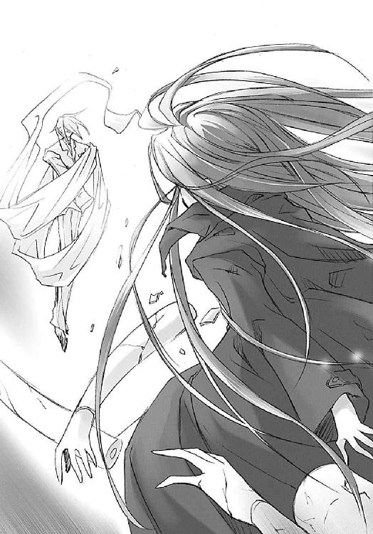
「シャナ!!」
悠二は、一声だけ。
「銃に当たるな!!」
その叫びが、マネキンの蹴りで途切れた。
「......」
その声を聞いたシャナは、笑った。
泣きそうなほどに強く、燃えそうなほどに強く。
「......っはは!!」
「む、『フレイムヘイズ殺し』の宝具か」
その胸元、夜光を〝コキュートス〟に受けるアラストールが、状況を理解する。
屋上に着地したシャナは頷いて、しかし悠二を助けになど行かない。
（私がそうであるよう望んだ、だからある存在として、私は選ぶ）
悠二の意思も、全て感じた。
決意も覚悟も嬉しさも......そして、それらを生み出す、小さな一つの気持ちも、感じた。
（戦う、と!!）
もはや、自分のやるべきことを、
マネキンたちの向こうに下がる〝狩人〟フリアグネを追う。
それだけだった。
フリアグネの銃口が自分を指向したと見るや、シャナは横っ飛びに飛んだ。残した火の粉を貫いて飛ぶ弾丸を肩の横にすかすと、地を踏んで足裏を爆発させる。大太刀、必殺の刺突が〝狩人〟に向かう。
が、その前をマネキンが塞いだ。
「っ邪魔!!」
攻撃は止まらず、足は留まらない。マネキンを大太刀でぶち抜くと、そのまま横に引き裂いて刀身を抜き、影から撃って来るフリアグネの第二弾から逃れる。その横斬り体勢のまま半回転、背後の一体の首を斬り飛ばす。
フリアグネは、その間にシャナとの距離を取っていた。今度はハンドベルを振る。
「弾けろ！」
前方からシャナに迫っていたマネキンが一体、凝縮し、爆発した。
シャナは、これを前に跳躍して、かわした。爆風が背を襲い、同時に前へと加速させる。
「!?」
驚いたフリアグネは、別のマネキンの影に、飛んで逃れる。
そのマネキンが、ブーケと一緒に握った剣を振ってシャナに迫る。
「っち!!」
舌打ちしてシャナはマネキンの胴を断ち切り、またすぐ低く横に飛ぶ。
半秒前にシャナの体のあった場所を、弾丸が抜けた。
双方とも、悠二の存在を無視している。
フリアグネは、もう非力な〝ミステス〟などに、目もくれない。
シャナはすでに巻き込む覚悟の上で戦っている。
「っと!?」
もちろん悠二自身も、そのことを理解している。爆発に紛れて、舞台から転げ落ちた。コンクリートを舐めるように這いつくばった自分の無様さに、思わず苦笑が洩れる。なぜか、恐怖は大して感じなかった。
（はは、まったく、格好悪いな）
そのとき、
キーン、とフリアグネのハンドベルが鳴った。
「！」
悠二は、そのベルの音を感じた。
何かを内に秘めた〝ミステス〟たる彼だけが持つ感覚で。
（......なんだ？）
その音には、奇妙な違和感があった。
また、キーン、とフリアグネのハンドベルが鳴った。
〝燐子〟が爆発した。
頭を低くして、その爆風から逃れる。
（違うぞ、どういうことだ）
今鳴った、二つの音色が、微妙に違っていた。
悠二は、これまで研ぎ澄ましてきた感覚で、その違いの意味を探る。
（鳴らせ！）
鳴った。〝燐子〟が爆発して、炎と衝撃が頭上を抜ける。肩口が熱く焼ける感覚がある。
（くっ、知ったことか......鳴らせ!!）
鳴った。今度は爆発しない。
代わりに、その音色は深く広く、夜を渡ってゆく。
また、鳴った。今度も爆発しない。
ドクン、
と悠二は感じた。感じたものに、そうけだった。
（これは......！）
悠二はこの、感じたものを、知っていた。
トーチの中に点っていた灯、それに宿っていた鼓動。
フリアグネはさらに、マネキンを爆発させる以外に、ベルを鳴らし続ける。
その度に、澄んだ音色が御崎市全域へ、そこにひしめく無数のトーチへと響き渡ってゆく。
トーチに宿る、弱いものには遅い、強いものには早い鼓動が、それを受けている。
悠二は、自分の鼓動がやはり、その影響を受けないことも感じていたが、そんなことはもう、どうでもよかった。今、御崎市に起きていることを、考えねばならなかった。
（どういう意味が......？）
また一つ、ベルが鳴って、
（!!）
そして今度こそ、悠二はたどり着いた。
トーチに込められていた鼓動が、ベルの音を受けて、加速されていた。
（......そ、そうか）
悠二は戦慄とともに、知った。
目の前で起きている爆発と、本質は同じなのだ。
鼓動が加速される先に、全てが同時に迎える、一つの崩壊点があるのだ。
（一斉爆発させるための仕掛けだ!!）
アラストールの声が、脳裏に蘇る。
『〝棺の織手〟は、己の喰ったトーチに〝鍵の糸〟という仕掛けを編み込んでいた。彼奴の指示一つで、代替物の形骸を失って分解し、元の〝存在の力〟に戻るという仕掛けだ』
（単なる分解どころじゃない、爆発だ）
『彼奴は、潜んだ都の人口の一割を喰らうと、仕掛けを発動させた。トーチは一斉に代替物としての機能を失って元の力へと戻り、偽装されていた繋がりを突然大量に失ったその都には、人を物を巻き込む、巨大な世界の揺らぎが生じた』
（感じる、その大きさを......一割に満たなくても、この威力なら）
『その巨大な揺らぎは、トーチの分解に触発され、雪崩を打つように都一つ、丸ごとが莫大かつ高純度な〝存在の力〟へと変じた』
（十分、『都喰らい』を起こせる......！）
あのハンドベル。
あのハンドベルこそが、フリアグネの切り札だったのだ。
（くそっ、狡猾ってのはまさにこいつのことだ！）
連中は一見、戦力を自分で減らすだけでしかない自爆戦法を取り続けている。シャナにとって、フリアグネのハンドベルは、マネキンを爆発させる物でしかない。しかし、実はそれは、ハンドベルを鳴らすことの真意を隠すための偽装工作だったのだ。フリアグネは、自爆戦法の陰に隠れて、市全域でのトーチ一斉爆発を......『都喰らい』の成就を、着々と進めている。
この狡猾な〝狩人〟にとっては、前の自爆戦闘さえ、最後の戦いのための伏線だったのだ。
フリアグネは、シャナと戦うために待っていたのではない。
馬鹿正直にハンドベルを使って『都喰らい』を発動させていたら、シャナはそれを、我武者羅に狙ってきただろう。最悪、先手を打って、自分が提案したトーチの消費をどんどんやってしまっていたかもしれない。
だからフリアグネは、まだ『都喰らい』の準備は終わっていない、今は戦いに集中している、そう見せかけるための、隠れ蓑としての戦いを欲していたのだ。
戦意に溢れるフレイムヘイズが、目前の戦いを優先させることを見越しての、外れようのない計略だった。
（僕でなければ、この鼓動も、その意味も、感じられなかった......！）
シャナたちは目の前の戦闘に集中している。必殺武器が自分を狙っているのだから当然だ。あるいはそれを悠二にひけらかしたことさえ、計算の内なのか。
（でも......逆転は、できる）
悠二は、目の前の夜景を見る。
今まで、全く気がつかなかったが、フリアグネが行わず、シャナが完全に失念していることを、やればいい。とにかく、ハンドベルの音を街に届かせなければいいのだ。
そのために、行うべきことは、一つ。
（知らせないと！）
それを叫ぼうとした瞬間、至近で爆発が起こった。
叫びもかき消されて、悠二はコンクリートの床に叩きつけられた。
「............っ、っ......!!」
数秒の暗転。悠二は朦朧とした意識に、なんとか力を込めようと足掻く。
（せめて、一声だけでも、力が）
助けを求める声ではない、助けるための声を。
（......シャ、ナ......）
あの顔を、見てしまったから。
彼女を変えてしまった、自分の......、
（......）
彼女を、変えた......？
（......ああ、そうか......）
朦朧とした意識の中で、
（僕が、シャナを変えた）
悠二はとうとう見た。
そして掴んだ。
（ここにいる、僕が）
そう、消える運命にある、それがなんだ。
自分が動かなければ、彼女が死ぬかもしれない。
自分が動けば、彼女を助けられるかもしれない。
そういうこと、それだけのこと。
自分が本当に生きているかどうかなんて関係ない。
自分が動くことで、変わるのだ。
そういうこと、それだけのこと。
死んでいる事も、死んだあとの事も、動ける今があるのなら、関係がない。
（生かす、か......なんだ、分かってたんじゃないか......）
倒れる彼を再び爆風が襲い、容赦なく転がした。
（動こう......ああ、そうとも、動けるさ）
煙に咳き込み、砂塵を噛み、それでも坂井悠二は、他を全て捨てて、一声の力を溜める。
自分を、彼女を、生かすために。
すでに残りのマネキンは、四体にまで減っていた。
フリアグネを守る壁も薄い。
実は、悠二に吹聴したほどにフリアグネ主従は有利なわけではなかった。それどころか、自分たちが予想した以上の苦戦を強いられていた。
そもそも彼らは、自爆戦法を取る内に『都喰らい』が発動すれば、その混乱に乗じて逃げることさえ考えていた。彼らの目的は、マリアンヌの中にある『転生の自在式』の起動であって、フレイムヘイズとの戦いなど、そのついでに過ぎないのだから。しかし逆に言えば、彼らはその成就のない限り逃げることができない、ということでもあった。そして、何より欲しいその時間が、自分たちの命を守る戦力を目減りさせてしまう。
この苦戦の原因は、簡単に言うと、誤算、だった。
フレイムヘイズ必殺の宝具『トリガーハッピー』がヒットしさえすれば終わる、という楽観的な前提を、彼らは持っていたのだ。実際他の、炎を自在に操る強力なフレイムヘイズ相手なら、とっくに勝負はついていたはずだった。
ところが今、勇躍して彼らに襲い掛かってくる少女は、違っていた。
相性というものの、これは最悪の展開だった。
他のフレイムヘイズなら、まず炎を主力に使ってくる。だから、火除けの指輪『アズュール』でこれを防いでいる内に、必ず隙ができた。
しかし、この少女、炎も満足に扱えないフレイムヘイズは、剣しか使わない。いや、使えない。最初から隙などできようはずもないのだった。そして、その剣の腕、それだけは圧倒的なまでに、強い。
大した敵ではないという認識が、自分たちの優位性が、本来どこに根ざしていたのかを、フリアグネ主従は豊富な経験という名の慣れから、見落としていたのだった。
彼らは、苦戦する内にようやくそのことに気付いたが、もはや退くには遅かった。今や『都喰らい』の発動とフリアグネの命は、ぎりぎりの死線の上で綱引きをしている。絡みに絡めた策謀が、いつしか自分たちをも束縛してしまっていたのだった。
シャナの方は、全く単純である。どんな企みをしていようと、とにかくフリアグネを叩き潰せば終わりだ、と断定している。目の前の戦闘に勝ちさえすればいい、そう思っている。その単純さが、結果的に戦況を有利に展開させていた。
（......ご主人様）
純白の花嫁が、傍らで、わずかに焦りを顔に浮かべる主に語りかける。
（駄目だ、マリアンヌ）
シャナの踏み込んだ先に、またドレスのマネキンが立ちふさがる。
「どけ!!」
強い笑みが浮かぶ。どいつもこいつも、全くの無能だった。剣の腕も力も、せいぜいフリアグネの射撃の援護としてしか使えないような雑魚ばかりで、歯応えというものがまるでない。
（しかし、このままでは、ご主人様のお命まで......逃げることも、今となっては至難の業です）
フリアグネが、駄々をこねるように首を振る。
（駄目だ、マリアンヌ！）
マネキンが振り回す剣に、シャナは軽く大太刀を合わせてその切っ先を巻き込み、刃を逸らす。その間隙に踏み込んで、肩から一撃、体当たりを喰らわせる。
「っは！」
吹っ飛ぶマネキンを、返し太刀で二つに斬って飛ばす。
（ご主人様が討ち滅ぼされれば、私も生きてはいられません......しかし、その逆は違います）
純白の花嫁、その内にある愛しいぬいぐるみに、哀願するように顔を向ける。
（駄目だ、マリアンヌ!!）
マネキンたちの剣にも、それぞれ曰くや特別な効果があるのだろうが、シャナが持つ神通無比の大太刀『贄殿遮那』は、そういう力を全て打ち消す、ある意味最強の武器だった。特定の、あの武器殺しの宝具でもなければ、何も恐れることはない。
「あと三つ!!」
ただの剣術でも、こんな闇雲に突っ掛かってくるだけの、動きにくそうな格好の人形に遅れをとるわけもない。
（マリアンヌ、私は君のために、全てを......!!）
二人の夢の姿、マリアンヌの花嫁衣裳。その白絹の手袋に包まれた左手が、フリアグネの泣き顔に触れ、右手がハンドベルに添えられた。ベルを、揺らす。
（ええ、ご主人様......私も、同じなのです......それができることを、私は嬉しく思っています）
シャナの前に映る、残り三体のマネキン、その内の、前に立ちふさがる二体が凝縮する。しかし、もうその手は通じない。
「むっ！」
シャナは爆発に備えるため、黒衣の裾を、幾重にも身の回りに巻いた。フリアグネの銃撃の目標にならないよう、ステップを横に踏む。凄まじい爆発の衝撃に叩かれ、黒い筒のように転がるが、傷というほどのものは負わなかった。素早く体勢を立て直す。
（ご主人様の持つ、オリジナルの自在式があれば大丈夫、同じ式で組み立てられた私の修復も可能でしょう）
できるかどうかも分からないことを、それでもマリアンヌは口にして、駆け出した。
（マリアンヌ!!）
黒衣の防御を解いたシャナの正面、爆発の真中から、純白のウエディングドレスを来たマネキンが突然、猛進してきた。
しかし、
（破れかぶれ！）
とシャナは判断した。後続はない。この一体だけ。しかも、このマネキンは何も持っていない。爆発するつもりだとしても、その前に、斬る。
斬れば、火花となって散る。爆発は起こらない。
（きっと、修復してください。約束ですよ、ご主人様......私も、あなたと......）
誓うことで、マリアンヌは、愛する主を守るための行動を、許してもらう。
誓いの履行など、重要ではなかった。
主のためにできること全て、今こそがまさにその、全て。
（マリアンヌ!!）
シャナの大太刀が、真正面から純白の花嫁を両断した。
これで、爆発はしない。
「あとは......！」
フリアグネだけ。
シャナは、真っ二つになったマネキンの間を抜けるように、前に踏み出した。
その、わずか一歩の、油断。
（ご主人様のために......それが、欲しかったのよ!!）
分かれたマネキンの体の中から、伸びた。
金の鎖が。
「う!?」
シャナが思わずかざした刀身に、がりり、とそれは絡み付いていた。
散った薄白い火の粉の中から、粗末な人形の〝燐子〟マリアンヌが現れた。その手からは、武器殺しの宝具『バブルルート』が伸びている。
シャナは、彼女が最初のときのように、体を二重に持っていたことを思い出し、焦った。
「っく、しまった!?」
「フリアグネ様!!」
魂の叫びが、想い人を動かした。
「マリアンヌ!!」
ハンドベルが、鳴る。
（まずい!!）
シャナはとっさに、人形に引き寄せられる大太刀から手を放す。
マリアンヌが凝縮し、シャナを至近からの爆発で吹き飛ばした。
破裂の余韻を残す夜気の中、
「......う、う......」
金網も吹き飛んだ屋上の縁で、ぼろぼろになって膝をつくシャナは、嗚咽を聞く。
「......ううう、うう......私のマリアンヌ......私の、マリアンヌ!!」
嗚咽は、銃口の向こうから来ていた。
眉間に突きつけられた銃口の向こうで、白い幽鬼のように立つフリアグネが、泣いていた。
「できるとも、するとも、マリアンヌ！ ここで得られる力、全てを使ってでも、君を蘇らせてみせる......そして」
その右手には、フレイムヘイズ必殺の銃、『トリガーハッピー』が握られている。
「この世で一個の存在にしてみせる!!」
その左手には、『都喰らい』を起こすハンドベル、『ダンスパーティ』が握られている。
「......そして、いつまでも二人で生きよう、二人で......」
フリアグネは、噴出する悲しみに狂喜を混ぜた。
差し出す銃口の前に、ぼろぼろになって膝をつく、憎きフレイムヘイズがいる。
秘法『都喰らい』は、最後の仕上げ、一打ち、二打ちを残すまでになっている。
右手と、左手。
フレイムヘイズ殺しと、『都喰らい』の成就。
フリアグネは、邪魔者を排除し、愛する者の復活を望む。
「......だから、まず、死ね」
満面を満たす悲しみと狂喜に、さらに怒りが混じる。
トリガーにかけられた指に、力が籠もる。
「フレイムヘイズ......この、討滅の道具が!!」
「......っ!!」
シャナは全身を苛む激痛の中、歯噛みする。
さっきの〝燐子〟の爆発を至近に受けて、体はぼろぼろだった。もう、走るどころか、立ち上がることさえできない。腕も、せいぜい一撃の力が残っている程度。しかも手には大太刀がない。眉間に必殺武器が突きつけられている。
（......なにも、できない......!?）
苛立ちと怒りが立ちのぼる。しかし今、何をなすべきか、それさえ分からない。
そのとき、
「封絶だ!!」
瓦礫の中から這い出た悠二の叫びが上がった。
「っな!?」
フリアグネが、その突然の声に、彼の企みを看破した声に、驚愕した。わずかに視線が悠二の方へと流れる。
その、ほんのわずかな間に、シャナは悠二の指示を実行していた。
「......!!」
灼眼が、力を振り絞る。
紅蓮の猛火が視界を埋め、彼らをこの世の因果から孤立させる。
御崎市を揺るがすハンドベル『ダンスパーティ』の音は、もう外に届かない。
（奴の企み、封絶、何故まだベルを持ってる、トーチの鼓動、〝燐子〟の爆発、狙いは!!）
シャナは封絶の意味を、フリアグネの思惑を、流れるような思考の末に、悟る。
「止め...!!」
フリアグネが制止の声をかけ、トリガーに力を込めた。
刹那、
「っはあ!!」
シャナは、自分に残された最後の力で、床にあったガラスの破片を掴み一閃、斬っていた。
目の前にあるものは、二つ。
自分の命を確実に奪うだろう、銃を握った右手。
悠二が叫んだことの意味、ハンドベルを持つ左手。
「そう。私はフレイムヘイズよ」
シャナは、自身を誇り、斬っていた。
左手を。
ハンドベルを。
宙高くばらける指とともに、ハンドベルが、真っ二つになっていた。
「き」
フリアグネは、ばらけ飛ぶ自分の指と、秘宝『ダンスパーティ』を、見る。
「っ」
この光景の意味を、理解する。
もう、封絶が解けても、意味がない。
計画を、『都喰らい』を、発動できない。
マリアンヌも、帰ってこない。
自分と、マリアンヌの、永遠も。
全てが、潰えた。
「っあああああああああ!!」
フリアグネは何もかも、全ての感情を乗せた絶叫をあげ、トリガーを絞った。
悠二は、シャナを見て、笑っていた。
シャナも、悠二を見て、笑って撃たれた。
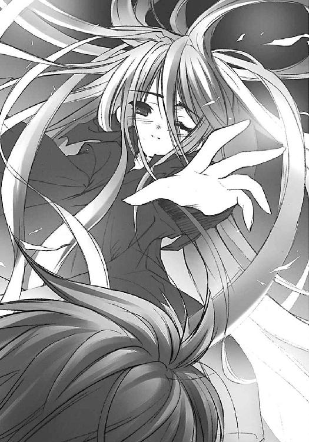
二人は、叫びの意味を、取った行動の意味を、全て理解し合って、
笑っていた。
そして、胸の中央に弾丸を受けたシャナの体が、屋上の縁から、落ちた。
彼女の張った封絶が、解けた。
彼女の体が、再び動き出した世界へ、
震源を失い、鼓動を収束させた街へ、
デパートの背後に流れる真南川へと、
炎髪から火の粉を舞い散らせて、落ちてゆく。
「こわれてしまえ!! ばくはつしろ!! すべて!! すべてえ!!」
あらん限りの声で、フリアグネは狂気の悲鳴を上げる。
御崎市の、まさに中心である真南川。
〝天壌の劫火〟アラストール、一瞬の顕現による大爆発が、どれほどの破壊を街に人にトーチにもたらすことになろうと......もう、どうでもよかった。
その狂乱の中、
「............？」
フリアグネは、予想外の光景を見た。
彼女が落ちたらしい、遙か下方、真南川の水面。
そこに、赤い火の粉からなる波紋ができた。
そしてそれが、広がる。
河川敷を越えて堤防を登り、
鉄橋を包んで市街へ伸び、
住宅地を覆い道を走り、
遠く遠くへと赤い波紋は広がってゆき、
それが地平線に達した瞬間、
一気に燃え上がった。
御崎市の全域を巻き込んで燃え上がった、
炎の色は、紅蓮。
悠二は、この感触を、知っていた。
「......封絶......？」
夜景に遠く、星空を歪ませて、凄まじい陽炎が濛々と上がっている。
地面に広く、全てを捉えて、奇怪な紋章が火線で描かれている。
巨大な、あまりに巨大な封絶が、御崎市全域を覆っていた。
そしてその中心、これだけは本当に燃え上がっていた真南川の広い水面から、
ゆっくりと、それが身を起こした。
屋上を見下ろすほどに巨大な、それ。
「......〝狩人〟フリアグネ......」
名を呼ばれたフリアグネは、その遠雷のような轟きに、縛られたかのように立ち尽くした。
瓦礫の中でへたり込む悠二は、その轟きの元となった声を、知っていた。
「ア、アラス......トール？」
巨大な、漆黒の塊を奥に秘めた灼熱の衣たる炎が、何かの形を取っている。大きすぎて、全体の形が分からない。屋上を、身を屈めて覗き込んでいるらしい。視界の前一面を広く覆っているのは翼か。
あまりに圧倒的な〝紅世の王〟......〝天壌の劫火〟アラストール、その顕現だった。
「......己が持てる宝具を弄んだがゆえに、墓穴を掘った愚かな〝王〟よ......」
再び、腹の底を震わせるような、重く低い声が轟く。
「......その宝具......我が身を目覚めさせることで、契約者の器を破壊するものだったとは......恐れ、かわしていたことも、今となっては笑うべきか......いや......」
わずかに苦笑らしき轟きを声の端に残すと、アラストールは、辛うじて腕と分かる炎の塊を、屋上に立ち尽くすフリアグネに向けた。それにつれて、凄まじい熱波が、全てを焼き付かせるように襲ってくる。
「......貴様には、我が身の顕現が、何を意味するか分かるか......？ 我が身が目覚めてなお、我がここに顕現し続けていられる理由が分かるか......？ その宝具による小細工は、他のフレイムヘイズには通じても、この子には効かぬ......」
アラストールは、己を宿した少女を傲然と誇る。
「この子、本来の末は......後世に名を刻む芸術家か、万民を動かす政治家か、勇を戦場に馳せる武人か、悪業人心に轟かす咎人か......あるいは、それらの母か......この子は、この子こそは、我〝天壌の劫火〟の〝王足る存在〟を容れるに足る器を時空に広げる『偉大なる者』なのだ」
フリアグネには、もはやその説明を理解できるだけの余裕がない。己をじわりと焦がす熱波の中、そびえるそれを、表情の抜け落ちた顔で見上げている。
「......この〝天壌の劫火〟が、契約者を選ばぬとでも思ったか......」
この世に顕現した本物の灼眼が、愚かな〝王〟を睨み据えた。感情を顕わにさせてもらえるほど、身動きを許してもらえるほど、その威圧感は弱くはなかった。
「受けよ......報いの、火を」
その、吐息の一撫で。
たったそれだけで、デパートの屋上が、丸ごと吹き飛ばされた。
悠二は一瞬、フリアグネの細い輪郭が砕けたのを、
薄白い炎が鳥の形を取って、紅蓮の炎に押し潰され、流されていくのを、見た気がした。
彼の、こぼれるように小さな断末魔は、一つの名前だったが、
それを聞いた者はなかった。
復元を終え、封絶が解かれたデパートの屋上で、悠二は今まさに燃え尽きつつあった。
弱々しく、ところどころ輪郭も薄れる体を仰向けに寝かせ、右手を胸の前にかざしている。
（......凄いんだな、アラストールって......フリアグネの奴、フレイムヘイズの火は防げる、って言ってたのに）
「この、有様、か......」
誰にともなく、声を出す。
自分が、まだここにいることを確かめるように。
悠二はその右手に、斬り飛ばされたフリアグネの指を......正確には、指が火の粉となって散った後に残された、火除けの指輪『アズュール』を握っていた。
彼の前にそれが降ってきたのは偶然か、それともシャナの執念のおこぼれか......まあ、どっちでもいい。
その、揺らいで落ちそうになった手を、誰かが取った。
悠二は目線だけで、その誰かを見る。
「......やあ」
黒衣の襟元をきっちりと合わせた、傷も治っているらしいシャナが、傍らに座っていた。背後には、いつ回収したのか、大太刀が突き立っている。
わずかに前屈みになって自分を見つめるその表情は、険の取れた穏やかなもの。なんの名残か、黒髪が幾筋か頬でほつれていた。
（......綺麗だな......）
と悠二は素直に思った。その陶然とした気持ちのまま、言う。
「......どうだい？ 僕、治せる？」
シャナはゆっくりと、首を振る。
再び彼女の内に戻ったアラストールが、胸元の〝コキュートス〟を介して告げる。
「もはや残り火とも言えぬ。消えつつある陽炎だ......我らと意識を交えることができるのは、貴様が我らと長く接していた、その余禄に過ぎぬ」
「そう、か」
案外、気持ちは静かだった。まあ、戦いに踏み込んだとき、すでに決心はついていた。
そんなことより、
「シャナ」
「なに」
「ずっと考えてたことの答えが......やっと出たよ......消えてしまういつか、なんて、どうでもよかったんだ......今いる僕がなにをするか、だったんだ」
「......」
途切れ途切れの声が紡がれていくのを、シャナは静かに待つ。
「......自分が何者でも、どうなろうと、ただやる、それだけだったんだ......」
言葉が終わったと見るや、
「バカな悩み」
とシャナは、いつもの調子で斬り捨てた。
「そうだな......やったことも、あんまり格好よくなかったし」
悠二は、笑った。自嘲ではない。
「うん、格好悪かった」
シャナも、くすりと笑い返した。嘲笑ではない。
そして、付け足す。
「でも......笑ってくれたね、最後に」
穏やかな顔で。
「ありがと」
「......うん、鼓動が、聞こえたからね......」
シャナは少し驚き、それから赤くなって頷いた。
笑っていた。あのときのように。
少しくらい調子に乗ってもいいよな、と悠二は思う。
「シャナ」
「なに」
「お願いが......あるんだ、けど」
「なに」
「シャナって、名前」
「......？」
「ずっと、使って......くれないかな」
シャナは返事をしなかった。
ただ笑って、頷いた。
ありがとう、と悠二は言えない。
その力が、もうなかった。
シャナの笑顔が、薄れていく。
自分も笑っていることを感じて、その心地よさの中、悠二は目を閉じた。
......これが、死なのか......
......なんだ......悪くない、気分......だ......
......
......
......ここはどこだ？
死んだのかな？
でも、僕は坂井悠二じゃない。
人間じゃない。
死んでしまったら、どこへ行くんだろう。
僕が死んだら。
消えるだけじゃなかったのかな。
消えた後があるなんて。
不思議な感じだ。
でも、聞こえる。
なんだろう。
聞こえる。
動いている。
鼓動？
ああ、ずっと聞こえていた、音だ。
どこかでずっと。
いや、僕の奥で。
動いている。
規則正しく、いつまでも変わらず。
なんだろう、これは。
動いている。
......
......
「......っくく」
こらえるような笑い声。それはすぐに弾けた。
「っあははははは!!」
無邪気で明るい笑い声が、夜風と渡り、月夜に響く。
聞こえる。
「............？」
悠二は目を開けた。
「..................え？」
見える。
「っはは、あはははは!!」
「ふ、ふ、ふ」
アラストールまで、忍び笑いを漏らしている。
半ば放心状態の悠二は、ゆっくりと身を起こした。自分の手を見る。
手が、ある。薄れていない。胸元を見れば、灯も元の明るさを取り戻している。
「驚いた？ なぜ私たちが襲撃を待ってたと思う？」
「ふ、ふ、万が一のときを考えての措置だったが、こうも場面と時間が重なると、安堵よりも笑いが出るというものだ......ふ、ふ、ふ」
「ほら、完全に元通り！」
シャナが、いつもの強さを取り戻したシャナが、悠二の背中を思い切り叩いた。
「ぶはっ!? な、なな、なにがどうなって......？」
「おまえ、一つ忘れていたでしょう？ 大事なこと」
「？」
「貴様の、〝ミステス〟としての中身のことだ」
アラストールが、笑いを声に込めて言う。
「......ああ、そういえば......それが、これと......？」
疑わしげに自分の体を眺めてみる。
胸の内の灯は、相変わらず点っている。
しかしその奥に、何かがあるのを感じる。
ふと、さっき、どこかで感じた鼓動を思い出した。
「それが、『零時迷子』の力だ。封絶の中で動けるのも、鼓動を感じるのも当然......時の事象全てに干渉する〝紅世の徒〟秘宝中の秘宝だからな」
『零時迷子』。
かつて一人の〝王〟が、恋に落ちた人間を『永遠の恋人』とするために作ったといわれる永久機関だった。
これをトーチの中に埋め込むと、そのトーチの〝存在の力〟は、一日という単位で時の中に括りつけられる。その日の内にどれだけ力を消耗しても、翌日の零時になれば再び次の一日へと存在は移り、初期値の力を取り戻すことができるという。
「その〝王〟は、かなり前に消息を断っている。貴様にそれが転移してきた以上は、『永遠の恋人』もろともに、なんらかの異変があったのだろうが......まあ、今はどうでもよいことだ」
「おまえにはまだまだ、私たちに見届けてもらえるだけの未来があるってことなのよ、悠二」
決定的なことが起こった。
「......あ......今......」
ふふふ、とシャナは悪戯っ子のように笑って、
「おまえの中にあるそれは、〝紅世の徒〟が持てば、ほとんど〝存在の力〟の消耗を考えずに力を振るえるっていう、物騒な代物なの」
「うむ、シャナの言う通り、『零時迷子』は、乱獲者にとっては最高の物。そして我らフレイムヘイズにとっては無用の物。しかし絶対に渡せぬ物だ」
悠二は、二人が何を言いたいのか、ようやく理解した。
「......あ、それじゃあ......」
「うむ、しばらく貴様という危険物を、この街で見張ることにする」
「そういうこと。なによ、文句あるっての？」
悠二は確信とともに。
「ない」
「よろしい」
その断言に満足したシャナは立ち上がり、悠二に手を差し出した。
悠二はその手をしっかりと取り、立つ。
ふとその胸元が目に入って、気が付いた。
さっきから、やけに黒衣をがっちり着込んでいると思ったら......そういえば、足も裸足だ。
「......ちゃんと下着の替え、持ってるか？」
真っ赤になったシャナのアッパーカットが真下から入って、悠二は再びひっくり返った。
エピローグ
翌日も、空は快晴だった。
シャナ、本日のスコア、午前四時間で無視三、対決一を経た昼休み。
今日は誰も、外に出て行かない。
昨日起こった、吉田一美の告白未遂、坂井悠二の敵前逃亡、平井ゆかりの強制連行という三大事件によって、教室は朝から微妙な緊迫の内にあった。それなりに会話もしているが、声のボリュームはどこか絞られがちである。
その雰囲気の中にあっても、悠二は全くいつものように、鞄からおにぎりを取り出す。
（僕の中に『零時迷子』が転移してきたのは、偶然だ）
悠二はこの雰囲気を、あえて無視している。正直、昨夜のことで頭がいっぱいだった。
（僕が、自分の人格を無くすほど弱っていない内に転移してきたのも、偶然だ）
その悠二の代わりに、メガネマン池が机を寄せたり椅子を持ってきたりしている。ああいうことがあった後でも、一緒に昼飯を食べさせるつもりらしい。野次馬根性かショック療法か、いずれにせよ大きな御世話ではある。
（そういう僕の所にシャナが来たのも、それでフリアグネの企みに気付けたり、倒せたりしたのも全部、偶然だ）
シャナは、これも例によってというべきか、他が集まってくるまで待ったりせず、さっさとメロンパンを嬉しそうに頬張っている。昨日のようなことがあっても、呼び方以外に特別、扱いが変わっていないのは、喜ぶべきか悲しむべきか。
（でも、そんなことに感謝したり運がよかったとか言っても意味がない......僕が今こうやって、自分のことを考えられるだけの力を持っている、その中でできることをする、それだけを分かっていれば十分なんだ......そう、僕がなんであるのかさえ、どうでもいいことなんだ）
シャナが、悠二の視線に気付いて、睨み返してくる。
（結局、なんでもないことなんだよな......あの戦いで気付いたことは）
傍目には『見つめ合う二人』とでも見えたのだろうか、前の椅子に座った池が、ゴホン、と咳払いしたが、無視する。
（......今あることが全て、か......改めて言葉にすると陳腐だけど、まあ『本当のこと』なんて、そんなものなのかもな）
さらに佐藤が、わざとらしく口笛を吹きながら横の席についたり、その向こうに座った田中が足でつついてきたりもするが、やはり無視する。
が、
「......あ、あの......ゆかり、ちゃん」
唯一無視できない声が、悠二を物思いから引き戻す。
吉田一美だった。見れば、彼女は、なぜか悠二ではなくシャナの前に、か細い体を一杯に緊張させて立っている。唇を強く引き結び、シャナを必死の気迫を振り絞って睨んでいる。
無論シャナは、そんな視線をそよ風ほどにも感じない。怪訝な顔で、簡潔に訊く。
「なに」
「......わ、わ、私......」
「？」
もつれながらの声は、最後だけはしっかりと、響いた。
「負けないから」
教室内がどよめく。
あの吉田一美が、あの平井ゆかりに。
教室中が、この吉田の宣戦布告と、それが巻き起こすかもしれない騒動に戦慄した。
ところが、宣戦布告を受けた当のシャナは、その言葉の意味がさっぱり理解できない。首を傾げてから、悠二に訊く。
「何の話？」
よりにもよって僕に振るな......と悠二は言いかけて、よく考えると自分が張本人らしいことに思い至った。もちろん、こういう状況をうまく切り抜けられるだけの経験はない。
あわあわと、どう説明すべきか迷っている間に、吉田はシャナの対面に座っていた。シャナも、悠二に返答を強要するわけでもなく、不審気に吉田を観察している。
不穏な局面がとりあえず流れて、悠二はほっとする。そんな情けない自分を、
（......しようがないだろ、こんなこと、僕は色々と初めてで......）
と心中で自己弁護する、その前に、細い指に押された小さな包みが一つ、机の上を滑ってきた。カチカチになった細い指は吉田のもので、押されてきた包みは、弁当箱だった。
「......ええ、と......」
悠二が顔を上げると、吉田は逆に顔を伏せている。今にも机に突っ伏しそうに緊張した声で言う。
「......いつも、その、おにぎりばっかり......だから」
「ど、どうも、ありがとう」
吉田のようにしどろもどろに、悠二は礼を言う。
吉田とお揃いの物らしい、小さな弁当箱。可愛い箸箱まで付いている。
この非常に素朴な好意に、思わずジンとなる悠二だが、同時に猛烈な後ろめたさも襲ってくる。恐る恐る隣を見ると、シャナがこっちをジロジロ見ている。弁当箱を追って、こっちに視線を移したらしい。
「どういうこと、悠二？」
「あ」
その強く響きすぎる声で発された言葉は、教室内に、今度は不穏などよめきを起こした。
悠二の全身に、だらだらと冷や汗だか脂汗だかが流れる。
シャナは単純に、吉田の行為の説明を求めただけだ。そして悠二にとっては、この呼ばれ方こそ、晴れて彼女に一人格として認められた証（推測）......なのだが、悲しいかな、今の状況で、そう受け取ってくれる者は、まず皆無だろう。
案の定、戦況の複雑な推移を静観していた池が、眉を顰めて言った。
「......坂井、おまえ、そうか」
「いや、これはそういう意味じゃ......」
と否定しようとして、ふと考える。
昨日のこと、あのときのこと、自分は、シャナのことを、どう思っていたか。
そういう感情なのか、違うのか、よく分からない。
もっと深いような、もっと強いような、でも、そもそも自分は、そういう感情を知らない。
あれが、そうなのだろうか。
......などと色々思う内に、頬が熱くなってきた。自分でも、どうしようもない。顔が真っ赤になっていると自分で分かるほどの、無茶苦茶な熱さだった。
「な〜るほど、うんうん、やっぱり。頑張れよ、色々と」
と隣席の佐藤が、ニヤニヤして肩を叩く。
「......我々に黙って、そういうアレをナニするとは......いい度胸だ」
田中は頬を怒りに引き攣らせている。
周囲でも、
「まあ、聞きまして、奥様？」（男）
「なんてことざーましょ！」（これも男）
などと、今までの重苦しい沈黙の反動のような騒ぎが、あえて彼らの方に顔を向けずに湧き起こっていた。口笛まで多重奏される。ほとんど昼飯の肴扱いである。
その騒ぎの中、それでも吉田は悠二を見て、宣言した。
「......負けませんから」
彼女は顔を伏せずに、正面から悠二を見ていた......むっときてはいるようだったが。
「は、はあ、はい」
悠二は、おどおどと答える。
シャナが、その様子にピンとくる。悠二が、またあの表情を、吉田に向けている。笑う直前のような、困りきったような、変な顔。その手は、貰った弁当箱に添えられている。
「......」
なんだか、非常に面白くない。昨日のように、悠二を連れて飛び出したくなったが、今日はその理由がない。どうしようか、と冷静を装った顔の内で考える......そして半秒の後、自分の前に置かれたものが目に入って、ぱっ、とやるべきことが浮かぶ。名案のように思われた。
「......」
シャナは、おもむろに食料袋からチョコスティックの箱を取り出すと、悠二の前に放った。
「............？」
この唐突かつ予想外の、まるで鳩に餌でもやるかのような行動に、悠二はぽかんとなった。
こればかりはいつものように、簡潔に状態を表す声がかかる。
「あげる」
「へ？」
悠二が見れば、シャナはもう知らん顔をしてメロンパンの残りをかっ喰らっている。どこか嬉しそうな、というか得意げな様子なのは、たぶん、気のせいではない......と、その前に座る吉田が、ますますむっとなっているのに気が付いた。慌てて弁当箱を開く。
「い、いただきまーす」
そうすると、今度はシャナが横目で険しい視線を送ってくる（のを感じる）。
（い、いったい僕にどうしろってんだ......）
悠二はこの八方ふさがりの状況を誤魔化すように、やけにおかずが多くて美味しい弁当の賞味に専念する。味は最高......なのにどこか、ほろ苦かった。
やがて、小康状態に入ったらしい肴に飽きたクラスメートたちも、それぞれの話題に戻っていった。朝からの緊張も忘れて、いつものように、昼休みを楽しみ始める。
このざわめきの中、悠二は、自分の置かれた立場に、改めて嘆息する。
昨日までのものとは違う、今への思いを込めた、ため息だった。
（......つまり、『本当のこと』だろうがなんだろうが、気付いた所で、楽ができるわけじゃないってことか......）
でも、楽が楽しい、とは限らないわけで。
（言い訳かなあ、これは）
悠二は、ほんの少しだけ、笑みを作る。
団子の串を咥えたシャナが、その悠二の表情を見て、こっちもほんの少しだけ、頬を緩める。
話し声に湧く教室の窓から覗く空は、今日も快晴。
世界は変わらず、ただそうであるように、動いている。
あとがき
はじめての方、はじめまして。
久しぶりの方、お久しぶりです。
高橋弥七郎です。
また皆様のお目にかかることができました。ありがたいことです。
さて本作は、痛快娯楽アクション小説です。またか、とか言わないように。本人も分かっていますが、全然直す気はありません。
テーマは、描写的には「斬って燃えて爆発」、内容的には「いまあるもの」です。心身無闇に強い少女と、難儀な境遇に置かれた少年のお話です。
担当の三木さんは、様々な意味で本気の人です。本作でも、発想の転換や参考意見など、多方面でお世話になりました。中でも、とある要求における攻防は乱刃相摩凄絶を極め（以下略）。
挿絵のいとうのいぢさんは、とても美しい絵を描かれる方です。頂いたラフ画は、終盤の直しを体感速度三倍で進めてしまう威力でした。甚大なる御助力に、深く感謝いたします。
京都のＭ林さん、大変励みになりました。当面御期待には副えず、また仔細あってお返しもできませんが、代わりに、この一文をもって御礼を。どうもありがとうございます。
......
......懲りることを知らないのか、また書くことがなくなってしまいました。
とりあえず、徒然に文字を埋めて、この場を凌いでみましょう。近頃、本では旧軍の補給参謀さんの実録を読んだり、映画では宇宙戦争二の伯爵燃え〜とか超強力三人娘萌え〜とかぬかしたり、ゲームでは年上の彼女の手を引いて姑さんから逃げたりと、妙に濃い日々を過ごしておりました。この経験を生かして、いずれ作品に、『超強力で年上な旧軍の伯爵』を登場させるかもしれません。もちろん嘘です。
というわけで、いい感じに埋まったようなので（オイ）、今回はこのあたりで。
この本を手に取ってくれた読者の皆様に、無上の感謝を、変わらず。
また皆様のお目にかかれる日がありますように。
二〇〇二年八月 高橋弥七郎
高橋弥七郎
生・育・住ともに大阪の純大阪人。転居の予定も当然なし。最近、担当さんにまでひねくれ者呼ばわりされる。その期待に応えるべく、今回の著者近影も要望のあった犬ではなく衣替えした猫に。これでよし。
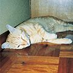
行き倒れ気味の作者
いとうのいぢ
大阪在住、オンナノコキャラ描きに没頭する一応女・二十ウン歳。着付け教室にでも通ってつつましく生きたいと思う今日このごろであります。
電撃文庫
灼眼のシャナ
高橋弥七郎
二〇十二年七月三十一日 配信
発行者 塚田正晃
発行所 株式会社アスキー・メディアワークス
〒一〇二−八五八四 東京都千代田区富士見一−八−十九
(C)2002 YASHICHIRO TAKAHASHI／ASCII MEDIA WORKS
本書（電子版）に掲載されているコンテンツ（ソフトウェア／プログラム／データ／情報を含む）の著作権およびその他の権利は、すべて株式会社アスキー・メディアワークスおよび正当な権利を有する第三者に帰属しています。
法律の定めがある場合または権利者の明示的な承諾がある場合を除き、これらのコンテンツを複製・転載、改変・編集、翻案・翻訳、放送・出版、公衆送信（送信可能化を含む）・再配信、販売・頒布、貸与等に使用することはできません。